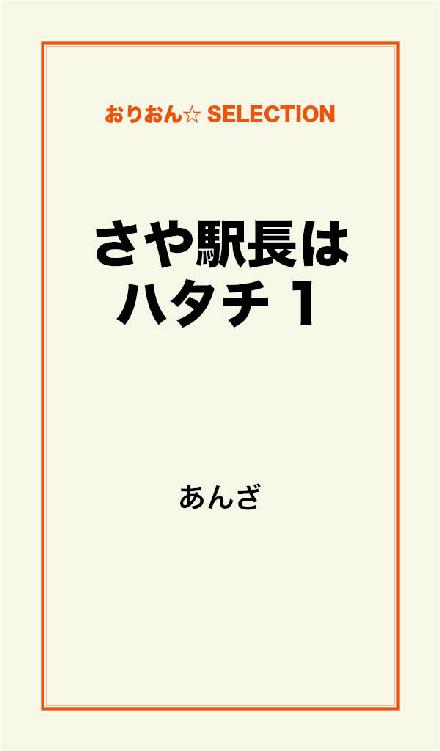
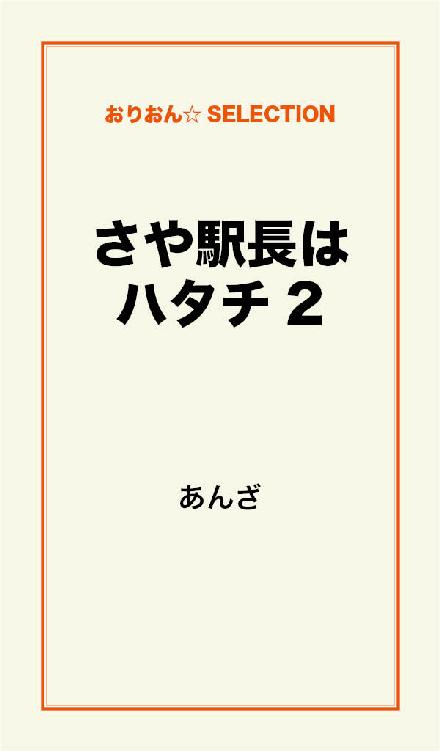

| さや駅長はハタチ 完全版 | |
| あんざ | |
この本は横書きでレイアウトされています。
また、ご覧になる機種により、表示の差が認められることがあります。

「えー！ 倒産!?」
会社のビルの入口には、倒産を告げる１枚の張り紙。
あたしは唖然として、そのまま口が半開きに......
それは、短大を卒業したばかりのあたし、吉岡さやが期待と不安を胸に会社に入社して、５日目のことだった。
社員のあたしでも中に入ることができない状況。
まるでギャグのよう。
でもギャグじゃない、真実。
ようやく会社の仕事にも慣れてきたっていうのに......
会社の仕組みに詳しいわけじゃないから、どうなると倒産なのかよく分からないけど......
あたし、プーになっちゃうってこと!?
「あっ、山下さん！」
会社の入口の脇の１台だけ車が止めれるスペースで、次々と出社してくる社員に身振り手振りで説明をしている山下さんを見つけたあたし。
「山下さぁーん！」
あたしもいてもたってもいられず、山下さんに事情を聞くことに。
「おっ、吉岡！」
「おはようございます」
「おはよう」
「倒産て、これ、一体どうなってるんですか？」
「なぁ。俺も突然のことで、何がなんだかさっぱりだよ」
普段は冷静な山下さんも、さすがにテンパってる様子がありあり。
「ほんと、寝耳に水だよなぁ」
「ほんとですよ」
「......とにかく、自宅待機だってさ」
「自宅待機？」
「うん」
「えー」
「まだ、どうなるか決まってないらしくて」
「えー」
「吉岡、とにかく今日は帰れ」
山下さんはそう言うと、あたしからサッと視線を外して、次々と出社してくるほかの社員の対応に。
「自宅待機って......」
「はぁ、なんでこんなことになるのよ......」
一気に気落ちしたあたしは、仕方なく駅に向かってトボトボ歩きだした。
あたしが就職した会社は、健康器具の開発と販売を......と言っても、社員も50人ほどの小さな会社。
小さいと言っても、健康ブームの世の中、毎年売上を伸ばしていたわけ。
だから、何社か内定をもらった中で、ここなら安心して働ける会社だと、あたしなりに判断して就職を決めたのに......
なのに、倒産だなんて......
マジで山下さんが言ったように「寝耳に水」だよ......
それから２日......
これがリアルに自宅待機の状態が続いていたわけ。
そして、３日目にようやく電話が。
「俺も吉岡も、みんな解雇だって......」
解雇。
山下さんの言葉に、あたしは返す言葉もなかった......
あ、あたし、プー？
ありえない。
ありえない！
ありえない!!！
でも現実......
お先真っ暗だよ......
この先、どうしたらいいの？
また就活？
無理だよ......
今のあたしには無理だよ......
それから数日間、あたしは何もする気も起きず、ずっと家に引きこもった......
ひとり暮らしだから、家族すら誰にも会わず......
友達からのメールも電話も全部無視して、ほとんど布団をかぶって寝ていた......
そのうち、冷蔵庫の中もスッカラカンになって......
もう何日経ったかも分からないくらい......
そんな夜、ケータイの着信を知らせる、ガルネクの『偶然の確率』が流れた。
ここ数日、友達からのメールも電話も全部無視していたことは、さっき言ったとおりなんだけど、それは「みんなは仕事うまくやってるんだろうなぁ......」なんて思うと、カチンときちゃってね。
だけど、この『偶然の確率』が流れて、あたしは思わずケータイを開いた。
ケータイの画面には『栄蔵』。
えいぞう......
それは、あたしのとおちゃん、栄蔵。
あたしは、とおちゃんからの着信にガルネクの『偶然の確率』を使っている。
なぜって？
それは前にとおちゃんと電話をしていた時、偶然に同じ歌番組を観ていて、その時に『偶然の確率』が流れていたの。
で、突然、とおちゃんは「この歌、いい歌だな」って言った歌、それがガルネクの『偶然の確率』だった。
偶然の確率。
人と人との出会いは予測できない偶然の確率。
たしかにいい曲。
それ以来、とうちゃんからの着信は『偶然の確率』にしているの。
とおちゃん......
やっぱ会社の事、話したほうがいいよなぁ......
友達ならまだしも、さすがに親に黙っているわけにはいかないと思ったあたしは、ゆっくり通話のボタンを押した......
「どう？ さや、仕事しっかりやってる？」
この声、久しぶり......
久しぶりのとおちゃんの声。
すると、あたしの目から涙がポロポロと出てきた。
これからどうしたらいいか、分からなかったあたし。
そんな落ち込んでいた中、久しぶりにとおちゃんの声を聞いたわけで......
ホッとして、涙が止まらない。
次から次から大粒の涙......
電話には鼻をすする音ばかりが伝わり......
とても声を出すことなんて出来なかった......
「さや、どうした？ 泣いてるんか？」
「......」
「どうした？」
「......」
「さや、どうしたんだよ？」
「......う」
あたしは思いっきり鼻をすすった。
「なんかあったのか？」
あたしは涙を手でぬぐうと、かすれたような声で話し始めた。
「あのね、会社が倒産......」
打ち明けてしまった......
「そっか......」
「......うん」
「仕方ないな。さやが悪いわけじゃないし」
「うん」
「で、次の仕事、探してるんか？」
「......ううん」
あたしは首を横に振る。
「探してないのか？」
「まだ、してない」
「さや、どうするんだ？」
「......」
「なぁ、さや」
「......わかんないよ」
ちょっとキレ気味になったあたし。
あれだけポロポロ出ていた涙も、一瞬にして止まってしまった。
「まだ、どうしたらいいかわかんないよ！」
最後には怒鳴ってしまった......
だって、それがあたしのホントの気持ちだから。
突然解雇って言われて、心の整理もついてないのに次の就職のことなんて、とてもじゃないけど考えられない。
あたしの言葉に、とおちゃんは何も言い返さず、数秒間の静寂......
......
「......ごめん。さやを責める気なんてないのに、心配でつい」
とおちゃんはボソッとそう言った。
「なあ、さや？」
「なに？」
「新潟、帰って来ないか？」
「えっ？」
とおちゃん、なに言ってるのよ......
新潟に帰って来い？
無理、無理だよ......
絶対嫌だよ......
そう、あたしは新潟の田舎町で生まれた。
何にもない村に......
あるのは、どこまでも続くたんぼ、そして山......
あたしが生まれる前は、温泉に来るお客でにぎわっていたことは知っている。
だけどその温泉は、ダムの底に沈んでしまった。
そんな寂れた村に高校まで過ごしたあたし。
ずっと、なんにもない村から抜け出したかった......
だから短大は東京に......
そんなあたしの気持ち、とおちゃんは何も分かってない......
いまさら新潟になんて......
あたしは東京で生きていきたいの......
さらに実家には新しいお母さんがいるわけで......
新しいお母さん、が。
あたしが東京に来てから、とおちゃんは新しいお母さんと知り合い、結婚......
あたしは、まだその新しいお母さんに馴染めてない。
あたしのほんとのお母さんは、あたしが物心ついた頃にすでにいなかった。
ばあちゃんから聞いた話なんだけど、ほんとのお母さんは温泉の旅館で働いていたと。
そして、あたしが生まれてすぐだというのに、旅行に来ていた男と恋に落ちてそのまま蒸発したんだって。
だからあたしは、ほんとのお母さんのことを何も知らない。
ま、そんな母として失格の人なんて知りたくもないけど......
だから、ばあちゃん、とおちゃんとあたしの３人で暮らして来た。
さらにあたしが高２の時に、ばあちゃんは老人ホームに入って、それからはとおちゃんとあたし２人。
そして、あたしが東京の短大に行ってからはとおちゃん１人......
だから、とおちゃんはずっーと寂しい生活をしていたことはわかる。
だけど、いままで『お母さん』という存在がいなかったあたしにとって、いまさら突然『あなたのお母さんよ』と言われても、馴染めないわけで......
そんなこともあって、とおちゃんが再婚してから、１度も実家には帰ってなかった。
新しいお母さんと会ったのも、その再婚する前にお互いの家族で食事会をした時の１度だけ......
長々と語っちゃったけど、ま、そんなこともあって新潟には帰りたくないわけ。
当然ながら、
「えーって、なんだよ。さや、おまえの実家だぞ」
と、とおちゃんはあたしの気持ちなんて知るわけもなく......
「でも......」
あたしだって、嫌なものは嫌なわけで......
それに、あたしの人生、そんな田舎町で終わらせたくないよ......
仕事だって、何があるのよ？
「さや、おまえ何か勘違いしてないか？」
「えっ？」
「お父さんが言いたいのは、少し帰ってきて、のんびりしたらどうかってことさ」
「えっ？」
「何も、ここにずっといろってわけじゃなくてさ」
「そういうことね......」
あたしはてっきり、新潟に帰って働いて、新しいお母さんと一緒に暮らそう......みたいな感じでとおちゃんの言葉を聞いていたわけで。
「ほら、もう１年以上も帰って来てないだろ？」
「......そうだけどさぁ」
「かなえさんも会いたがってるし」
かなえさんとは、とおちゃんの新しい妻、そう新しいお母さん。
会いたいって言われたってねぇ......あたし、どうしたらいいかわからないよ。
「お父さん、さやに見て欲しいんだよ。いま幸せに過ごしている姿をさ」
「えっ？」
「いままでさ、さやとばあちゃんと暮らしていたじゃないか」
「うん」
「それがさ、ばあちゃんが老人ホームに入って、さやが東京に行っちゃって......父さん正直寂しかったんだ」
初めて聞いたとおちゃんの気持ち。
あたしは、なんだか悪いことをしているように感じてきた。
とおちゃんの結婚を認めているようで認めていなかったことに。
考えてみたら、とおちゃんも新しいお母さんも悪いことは何１つしてない。
単に、あたしが勝手にいろいろ考えてしまってるだけ。
あたしが素直になれば......
「な、さや、少し帰って来いよ」
そのとおちゃんの言葉に、
「......うん、わかった」
と、あたし。
素直に言った......
あたしは電話を切ると、窓を開けベランダに立った。
数日引きこもっていたこともあって、外の空気がに美味しく感じた。
ここ、東京なのに......
新潟なら、もっと美味しい空気のはず。
「新潟かぁ......」
あたしは夜空を見た。
星なんて何１つ見えない。
それが東京。
新潟なら満天の星のはず......
なんだか気持ちはすっかり新潟モードのあたしだった。
単純なのかな、あたし。
次の日、あたしは大きなバッグを抱えて銀行に。
そんなあたしの姿が怪しいのか、入口に立っている警備員が不審そうに見てきた。
「ふんっ」
あたしは、逆ににらみ返して店内へ。
そして、残り少ない預金を引き下ろす。
プーという先行き不安の中、新潟に帰るのは勇気がいるわけで......
だけど、気分を変えるにはちょうどいいのかもしれないわけで......
銀行を出たあたしは、コンビニでおにぎりを買いたい気持ちを抑えて、そのまま目の前の駅に入っていった。
新幹線代だってバカにならないほど高いのに、その上、さらに金は使えないわけで......
ま、新潟に帰れば山のようにご飯食べれるだろうし......
新しいお母さんに会うのは気が重いけど......
でもあたしの実家なんだし......
そして、東京駅に着いたあたしは、新幹線へと乗り換えた。
上越新幹線で新潟へ。
「コシヒカリを贅沢に使ったお弁当、いかがでしょうか？」
東京駅を出て早々、車内販売のワゴンと、それを押して歩く子の誘いの声。
そのワゴンが通路を通る度に、ついうらやましい顔で目で見てしまうあたし。
１時間ちょっとで新潟に着くんだから、我慢我慢......
おなかの空腹を忘れようと、目を閉じて寝ようとするんだけど......
全然ダメ。
数日間引きこもって、これでもかというくらい布団をかぶって寝ていたこともあって、ちっとも眠くないわけ。
仕方なくバッグからいつも持ち歩いているガムを取り出すと、普段は１粒しか食べないのに、一気に４粒も口の中に入れた。
見事に口の中は溢れるガムでいっぱいに。
空腹をしのぐ作戦は見事成功......
っていうか、なにバカやってるのあたし（笑）。
そしてあたしは新潟県の長岡という駅で新幹線を降りて、私鉄に乗り換えることに。
その私鉄の乗り場は、JRのホームの外れに申し訳なさそうにひっそりと。
止まっているのは１両のオンボロ電車。
そんな小さな私鉄の電車に乗り換えたあたし。
この電車を見て、ようやく新潟に帰ってきたんだなぁ、という実感が沸いてきた。
ほんと変わらないよなぁ、小さい頃からずっーとこの電車だよ。
で、これに乗って終点まで行くと、あたしの実家がある町に。
高校生の時は、毎日この電車に乗って学校に通っていた。
そうなると、自然といつも座るお気に入りの場所ができるもので.......
あたしは、懐かしくシートを手でさすりながら、いつも座っていた場所に座った。
それは、後ろのドアのすぐ隣りの２人掛けの座席。
学校に行く時の朝の通学の時も、帰りも.......
友達とケンカした日だって......
勇気出してコクったのに、フラれて泣きながら帰った日だって......
いつもこの座席だった。
「吉岡さん？」
あたしを突然呼ぶ声がして、振り向くと、駅員さんだった。
すると、あたしは忘れもしないあの日を思い出す......
高校に入って初めて付き合った彼と初デートの日。
大人ぶって、エスニックなワンピとミュール買って......
映画を見に行くだけだったのに、もうウキウキしちゃって......
で、電車に乗ったまでは良かったんだけど......
電車降りる時に、ホームと電車の隙間にミュールが落ちて......
それまでは軽く挨拶くらいだったのに、それ以来、駅員さんにも運転手さんにも名前まで覚えられて......
「久しぶりだね」
駅員さんはニッコリと笑顔。
「どうも」
あたしも自然と笑顔に。
「実家に？」
「まあ、ずっと帰ってなかったし」
「いやぁ、それにしても大人になっちゃって」
「いやぁ......」
あたしは照れ笑い。
50歳くらいなのかなぁ。この駅員さんは、あたしがちっちゃい頃からずっと。だからあたしの成長を知っているわけで......
もはや親戚のおじさんみたいな感じ。
それは運転手さんにも言えることで......
３人いる運転手さんも全員あたしを知っているし、あたしも知っている。
「あっ」
駅員さんは時計を見ると、あたしに軽くお辞儀をして、ホームについているマイクを手に取った。
「まもなく発車します」
そんな駅員さんの背中をポンっと叩いて、電車に乗り込む運転手さん。
「あぁ！ 久しぶりだね」
運転手さんはあたしを見つけてニッコリ。
「どうも」
この運転手さんは、３人いる中で１番年をとった人で、おじいちゃんと言ってもいいくらい。
「実家に？」
「はい」
「いいなぁ。うちなんて男ばっかりで、女の子欲しかったなぁ」
「えへへ」
あたしは愛想笑い。
そんなこともできる大人になりましたよ。
さやはハタチだから。
......って、あたしは何を考えているんだか。
「よぉし、いつもより安全運転で行かないとな」
そう言って運転手さんは、運転席に座った。
そして発車のベル。
ホームにいる駅員さんが笛を吹くと同時に、ドアが閉まった。
ゆっくり走り出す電車。
そのままスピードが上がるわけでもなく、長岡の町を離れていく。
全速力の自転車なら、追い抜いていくんじゃないかくらいの速度なわけ。
そして、ガタゴトガタゴトと体に伝わる振動。
なんとかやっと走ってるって感じ。
田舎の小さな鉄道だらね、お金ないんだろうね。
ま、あたしはずっと変わらない電車のほうが愛着があって好きだけどね。
お昼過ぎの今、乗っているのは......
５人だよ（笑）。
しかも、あたし以外、みんなおばあちゃん。
これじゃあ正直、いつつぶれてもおかしくないよ。
......なんて、愛着ある電車に失礼だからこのくらいにして（笑）。
それにしても１年振りか......
懐かしいな......
あたしはそれから、薄汚れた窓越しから、どこまでも続くたんぼをぼんやり眺めていた。
「次は終点、川五です」
運転手さんのアナウンスがガラガラの車内に響いた。
長岡を出発して５駅目、そこがあたしの生まれた町、川五。
かわご。
ま、正式には川五村、村でございますけどね。
いつの間にか、車内はあたし１人。
完全な貸切状態。
村といっても、それなりに人も住んでいるんだけど、ま、誰も電車なんて乗らないみたいで。
あたし、知ってるんです。なぜ、みんなが電車に乗らないか。
それは......
それは長岡まで立派な道路が続いてるから。
みんな車を使ってるんだよね。
この辺じゃ１人１台が当たり前だもんね。
家の駐車場とかに、家族の人数分の車が止めてあったりなんてよく見る光景（笑）。
だから、電車に乗るのはあたしみたいに免許持ってない人や、高校生とか、おじいちゃんおばあちゃん。
ガラガラなのも当然と言えば当然。
なんて１人解説をしているうちに、小さな小さなホームに電車は止まった。
あたしはゆっくり電車から降りた。
「あー、帰って来たぁ」
「気持ちいいなー」
そして、ホームにバッグを置くと、手を広げて大きく深呼吸。
「おーい」
運転手さんが手を振りながらあたしのところに来た。
「気持ちいいでしょ？」
そう言って運転手さんは空を見た。
「ええ」
あたしもつられて空を。
青空！
雲ひとつない青空！
とおちゃんの言ったとおり、帰ってきて良かった！
「親孝行、いっぱいしてね」
と言って、運転手さんは手を出した。
「はぁーい。......ん？」
どうしたの運転手さん？
「切符。切符回収しないとね」
「あ、切符ね」
「無人駅になっちゃってね。俺が回収しないとダメなんだ」
「えっ？ 駅員さんいなくなっちゃったの？」
あたしは改札口を見た。
「去年からそうなったんだよ」
「へぇー、そうなんですかぁ」
たしかに改札口には誰もいない。
「まあ、見てのとおりのありさまでね。少しでも経費削減しないと、って会社の方針で」
「なんか寂しいな」
そう言ってあたしは運転手さんに切符を渡した。
「ねぇ、せめて終着駅の川五くらいは駅員がいたほうがいいと俺も思うんだけど」
「ですねぇ」
「電車の本数は減るわ、サービスは悪くなるじゃ、どんどん客は減る一方だよ」
こんなガラガラの電車だと、運転手さんも愚痴りたくなるのもわかるよ......
「ま、俺は今日で終わりだけどね」
「えっ？」
「俺、定年でさ。今日で最後なんだ」
「定年？」
「そう。あと１回、夜の最終の運転で最後」
「そうなんですかぁ」
「うん。振り返ると、長かったような短かったような......」
運転手さんはそう言って、電車の車体をポンポンと叩いた。
「笑っちゃうよ。俺が入社した時からこいつなんだよ」
「えっ？」
「ずっーとこの電車。35年間ずっと」
「35年も？」
「あはは。俺が定年になっても、こいつはいつまで働き続けるのか......あ、そろそろ行かないとな」
運転手さんは足早に電車に乗り込んだ。
定年、か......
運転手さんは、運転席の窓から顔を出して手を振ってきた。
「吉岡さん、元気でね」
「はーい」
あたしは運転手さんに笑顔で手を振り返した。
すると発車の合図か、それともあたしへのさよならか、大きな警笛が２回鳴って電車はゆっくり発車していった。
誰も乗ってないガラガラの電車が......
あたしはバッグを抱えると、ゆっくり改札口をくぐった。
木造の駅の小さな待合室。
いつ建てられたかは知らないけど、めっちゃ相当古い。
そういえば、おばあちゃん言ってたな。
「電車が走り出した、わしの子供の頃からずっと変わってねぇからのぉ」
っていうかさぁ、蛍光灯が切れかかっていて、付いたり消えたりしてるし......
あちこちゴミが落ちていてるし......
あたしが最後に乗った１年前は、こんなんじゃなかったのに......
あの時はまだ駅員さんがいて、駅の中もキレイだったのに。
無人になっちゃうとこんなもんなのかなぁ。
あたしはそんな汚らしい待合室から逃げるように駅前に出た。
あたしの町......
なーんにも変わってないな......
ま、１年だからね。
待合室は汚くなっちゃっていたけど、町は何も変わりなくあたしはホッとした。
そして、ゆっくり歩き出した。
駅前と言っても、タクシーやバスなんてものは止まってない。
そもそもこの村に走ってないし......
そのまま、あたしは駅前の小さな小さな商店街へ。
ま、商店街と言っても全部の店のシャッターが閉まっているわけで......
つぶれたわけで......
とにかく、こんな寂れた村で育ったあたし。
そんなあたしが育った家は、この商店街を抜けて、さらにたんぼ道を10分以上歩いたところにある。
よくこんなところで18年も過ごせたな......
なんて考えながら歩いていると、あっというまに商店街を抜けてしまった。
あと少し......
たんぼ道をてくてく歩いて、あたしは実家に着いた。
田舎の一軒家といったらデカい家を想像しがちだけど、あたしの家はいたって普通サイズの家。
部屋も３つしかない。
あたしの部屋。
ばあちゃんの部屋。
とおちゃんの部屋。
......あたしの部屋、なくなってないよね？
そう思うと、いますぐにでも確かめたくなった。
あたしは玄関のドアを開けようと、バッグから鍵を取り出してノブに手を掛けた......
新しいお母さんいるんだよな......
いくら家族と言っても、勝手に鍵開けて入って行ったらびっくりしちゃうかな......
じゃあ、ピンポン押すかな......
「さやさん？」
突然、あたしの後ろで声がして、あたしはビクッとしながら振り返った。
「あ！」
そこに立っていたのは新しいお母さんだった。
「ど、どうも......」
不意をつかれて、整理もつかないあたし......
「疲れたでしょ？」
新しいお母さんは、あたしを見てニッコリ笑っている。
「全然、全然、疲れてないです」
そして、新しいお母さんに合わせるかのように、苦笑い。
軽く頭なんてかいちゃったり......
そんな新しいお母さんの両手には、スーパーに行ってきた帰りなのか、大きくふくらんだレジ袋が。
村で１軒しかないスーパーのレジ袋......
「お昼食べた？ おなか減ったでしょ？」
と、ニッコリ笑顔の新しいお母さん。
「ま、まあ......」
ほんとは、めちゃくちゃペコペコなあたし。
おにぎりだって我慢してきたのに、あたしはペコペコなことを隠してしまった......
「さっ、こんなところで立っていても仕方ないから、中入りましょ、ね」
終始ニッコリの新しいお母さん。
「あ、わたし両手ふさがってるから、ごめんなさい、ドア開けてもらえるかしら？」
「あ、はい、はい」
まぶしいくらいの笑顔......
とおちゃんは、新しいお母さんのこんな姿にホレたのかな......
ま、それよりなにより、あたしは家の中がどうなってるか気になるわけで......
あたしは実家なのに、ドキドキしながらドアを開けた。
「ただいま......」
あ、変わって、ない...... 。
玄関は１年前と何も変わってなかった。
新しいお母さんの趣味に合わせて、少しは変わっているんだろうなぁ、なんて思っていたあたしはホッとした。
「ふふ、変わってないでしょ？ さあ、早く上がって！」
ホッとして立ち尽くしていたあたしにそう言って、新しいお母さんは先に上がった。
「栄蔵さんがね、変えるな変えるなってうるさくてね。はい、どうぞ」
新しいお母さんはスリッパをあたしに差し出す。
え？
あたし、この家でスリッパなんて履いたことないのに......
あたしはそんな生活、この家にいた18年間、１度もしたことないわけ。
夏は裸足、寒くなったら靴下履いて、みたいな......
かと言って、この状況じゃ履かないわけにはいかず......
スリッパを履いたあたしは、なんだか、お客様状態。
自分の実家なのに変な気分。
「さあさあ、さやさん。とりあえずお茶いれますね」
「あ、はい......」
そう言って、新しいお母さんはまたニッコリ笑って、あたしの背中を押してリビングに。
あたしは自分の部屋がどうなっているか、気になっているのに......
リビングに入ったあたし。
「あ......」
ここも何も変わってない......
あたしがお気に入りのカーテンも、ばあちゃんが趣味で作ってる手まりもしっかり飾ってあって......
全部、全部、１年前そのままの状態のままだった。
「お茶でいいかしら？」
「あ、はい。どうもです」
「どうぞ」
新しいお母さんはテーブルにお茶を置いた。
しかも、あたしがいつも座っていたソファーの前に......
「えへへ。栄蔵さんに言われたのよ。ここ、さやさんのいつも座っていた場所だって」
「とおちゃんが？」
「ええ」
とおちゃん、また余計なこと言って......
「もうね、何かあると『さや、さや』って、すぐさやさんのこと言うのよ」
「え？ そうなの？」
あ、ヤバっ......
ついあたしは、新しいお母さんにタメ口になるところだった。
いくら、お母さんと言えども、今日で会うのが２回目。
まだタメ口は早いって......
あたしは慌てて「ですか？」と聞き直した。
「うふふ。このリビングだって、さやさんとおばあさんの思い出がいっぱい詰まってるからって、絶対変えちゃダメだって」
とおちゃんったら......
あたしは嬉しくなった。
ばあちゃんもあたしもこの家からいなくなったのに、とおちゃんは、いつまでも思い出を大事にしてくれていたことに......
ま、あたしが座っているソファーの場所まで教えなくてもいいけどね......
「わたし、栄蔵さんや、さやさんに早く１人前のお母さんとして認めてもらえるように頑張りたいな......」
そう言って、新しいお母さんは私の前に手を出してきた。
「改めて、さやさん、よろしくお願いします」
「え、あ......」
な、なに？
この、気恥ずかしい感じは......
「こ、こちらこそ」
あたしも手を前に出すと、新しいお母さんはギュッと手を握った。
照れる......
あたし、これで新しいお母さんのことを認めたことになったのかな......
「うふふ。さあ、お昼にしましょ」
手で目を隠しながら、そのままキッチンへ行っちゃった新しいお母さん。
もしかして、感極まっちゃった？
うーん、新しいお母さん、か......
ていうか、あたしにとって、初めてのお母さんだけどね。
思ってたより、いい人じゃん......
お母さん......
なんて思いながらも、自分の部屋が気になるあたし......
涙ぐんでいた、新しいお母さんをうたぐるわけじゃないけど......
もし、変わってたりしたら......
あたしは、熱いお茶も気にせず一気に飲みほすと、バッグを手に立ち上がった。
やっぱり、部屋の中を見ないと安心じゃなくて......
新しいお母さんに後ろめたい気持ちがあるから、バッグを抱えて気付かれないように２階へ上がった。
２階にはあたしととおちゃんの部屋があって、右があたし、左がとおちゃん
そして、あたしの部屋のドアには、高校の授業で作った『SAYA』の木彫りの表札。
......表札じゃない？
なんて言うんだっけ？
......ま、とにかく今見ると、恥ずかしいわけ。
だからと言って、外すわけでもなく、あたしはドアを開けた。
部屋を見渡すあたし。
「よかった......」
ニヤリとしたあたしは、バッグをフローリングの床に下ろした。
「変わってなーい！」
そのままベッドに飛び込んだあたし。
何も変わってなかった......
１年前のまま......
なんだか嬉しくて、あたしはそれから何回もゴロンゴロンと寝返りをうった。
まるで子供のように......
......
.........
トントン
と、ドアを叩く音。
「さやさん？」
ベッドではしゃいでいたあたしは、ハッと我に返った。
「は、はい！」
思わずあたしはベッドの上で正座。
「ごはん、出来たわよ」
「あ、はぁい。すぐ、行きます」
ふぅ......
ドア開けられなくてよかった......
ベッドでゴロンゴロンしてる姿見られなくて、あはは。
おなかペコペコのあたしは早速キッチンに向かった。
そこにはかわいいオムライスが２つ並んでいた。
「１回作ってみたかったのよねぇ。栄蔵さんには、こういうの作らなかったから」
そう言って新しいお母さんはケチャプを取り出すと、オムライスの上に『さやさん』と、文字を書いた。
「うふふ、どうぞ！」
ニッコリ笑顔の新しいお母さん。
なんだか、文字を書かれたあたしのほうが恥ずかしいよ......
そんな新しいお母さんの愛情たっぷり？のオムライス。
マジでペコペコだから、早速食べちゃおっと......
「いただきます！」
口いっぱいに食べたあたし。そのほうが新しいお母さんも喜ぶんじゃないかと......
でもほんとは、おなかペコペコだったから......
「どう？」
新しいお母さんはあたしをのぞき込む。
あたしは口の中のオムライスが飛び出さないように、ウンウンとうなずきながら、指でOKのサインを出した。
「良かった」
新しいお母さんはホッとした様子で、オムライスを食べだした。
これがあたしにとって、生まれて初めての母の味......
だけど、正直、まだお母さんという実感がないから、普通に美味しいオムライスを食べたって感じだった。
そんな感じでオムライスはあっというまに食べ終わり、あたしと新しいお母さんはワイドショーを観ていた。
ワイドショーは、会社のお金を横領したＯＬの話題......
「さやさん、大変だったわね、会社」
と、新しいお母さんはさりげなく。
「あ、は、はい......」
やっぱり、とおちゃん、話したのか......
そりゃあそうだよね、家族なんだもん。
新しいお母さんなんだもん。
「何か困ったことがあったら、いつでも言ってね」
「あ、はい......」
正直言えば、困ったことだらけだよ......
心配してくれるのは嬉しいけどね......
「さて、片付けますか」
新しいお母さんはそう言うと、ゆっくり立ち上がった。
こんな場合「あたしが洗います」って言ったほうがいいのかな......
なんてあたしが口に出す前に、
「さやさんはゆっくりしててね」
と、言われてしまった。
ま、考えてみたら、あたしは新しいお母さんの子供なんだし、そんなに気をつかう必要ないか......
せっかく、のんびりしようと実家に帰って来たわけだし......
と言っても、昔みたいにここでテレビ見てバカ笑いしたり、お風呂上がりにソファーに寝転がってアイス食べたりできないなぁ......
なんて、ささいなこと色々考えたり......
そう思うと、自分の部屋があって良かったなぁ、って。
とりあえず、バカ笑いもアイスもあたしの部屋だけにしよっと。
そう思うと、無性に笑いたくなったあたし。
気付けば、会社が倒産してから家にこもりっきりで、誰とも会わずに寝てばかり......
当然気持ちは落ち込むばかりで、笑うこともなかった......
あたしはいても立ってもいられず、２階に駆け上がった。
あたしは『SAYA』の表札が揺れるくらいに勢いよくドアを開けると、そのままベッドに飛び込んで布団をかぶった。
そして、思いっきり笑い出した。
面白い話を聞いたわけでもなく......
テレビを観たわけでもなく......
ただの笑いだけど......
あたしは笑いたかった......
それでも不思議と気分はスッキリしていった......
あたしは気分が良くなったせいか、それともごはんを食べておなかが満たされたのか、そのまま寝てしまった。
...
......
.........
............
......トントン。
「さや？」
......トントントントン。
「さや？」
それはとおちゃんの声だった。
夢の中でとおちゃんがあたしを呼んでいる。
だけど、姿は見えない。
あたしを呼ぶ声ばかりがする。
「さや？ いないのか？」
トントントン、
トントントントン。
「もぉ！ うるさいよー」
いくら夢でも、あまりにドアを叩く音がうるさくて、あたしは姿の見えないとおちゃんに向かって叫んだ。
その瞬間、目が覚めたあたし。
......ん？
カーテンの隙間から見える空はすっかり日が沈んでいて、部屋は真っ暗だった。
「さや、いるなら出て来てよ」
とおちゃんの声が廊下から聞こえる。
......あれ？
......夢、じゃなかったの？
......そ、そうみたいね。
「うん、今出るよー！」
あたしはサッとベッドを降りたつもりが、寝起きで思わずコケてしまった。
「痛たたたぁ」
なんて言いながらドアを開けた。
そこには、１年前よりなんだか若くなったとおちゃんが立っていた。
「よっ！ さや！」
満面の笑顔のとおちゃん。
「おかえり、とおちゃん」
そう言って、少し寝ぼけていたあたしは目をこすった。
「さや、なぁに部屋真っ暗にして。寝てたんか？」
「まあね。寝る子は育つって言うじゃん」
なんて、意味分かんないこと言ったあたし......
とおちゃんとあたしは、こんな感じで『ああ言えばこう言う』仲なわけで......
だから、何か一言言って切り返すみたいな......
「もういくら寝ても、さやは育たないけどねぇ、あはは」
「悪かったね、もうハタチだからね」
「ま、お父さんに似て、スラッとしてスタイル良くてよかったな」
「......まあね」
「あ、そこはもう少し育てばよかったのにな」
と、とおちゃんはあたしの胸を指差した。
「もぉ！ うるさいなぁ」
......たしかに無いけどさ。
「あはは、なんてな」
ま、いつもこんな感じだから、あたしも慣れっこなわけで......
新しいお母さんは、ほんとにこんなとおちゃんでいいのかなぁ......
なんて、余計なお世話か......
それにしても、とおちゃん若くなったような......
「なに、ジロジロ見て。そんなにお父さん、カッコいいか？」
「なんかね、若くなったよ」
「あはは、そう？」
「うん、なんかね」
「そりゃあ、かなえさんいるんだもん。いろいろ若返るさ」
「いろいろ？」
「まあな、いろんな場所が。アソコもな、あはは」
と、とおちゃんの視線が明かに自分の股間にいってる......
あ、あたし、余計な事言ってしまった......
ま、こんなアホとおちゃんです......
「なぁ、さや、かなえさん夕ご飯の支度してるから、なんか手伝ったら？」
「......うん、いいけど」
「どう？ 仲良くなった？」
「ま、そこそこ」
実際、そこそこ。
「そっか」
「うん」
「まあな、これからだよな。よし！ お父さんは着替えてきまーす！」
と、とおちゃんは右手を挙げて自分の部屋に入って行った。
な、なんだか、テンション高っ！
新しいお母さんのおかげかな......
あ、ちなみに、とおちゃんは村の農協の職員です。
さすがに仕事中は、このテンションじゃないと思うけど。
......じゃ、行きますか。
「ふぁーあ」
あたしはまだ眠り足りないのか、あくびをしながら階段を降りていった。
「あっ、さやさん！ ごはん出来たわよ！ さあ座って座って」
あたしがキッチンに入ると、すでにテーブルの上に美味しそうな料理が並んでいた。
「......あのぉ、なにかあたし、手伝うことないです？」
「いいわよ、さやさんはゆっくりしてて」
「あ、はい......」
ま、どう見てもごはん出来てるし、ね。
「あ、そうだ。さやさん？」
「はい？」
「玄関に置いてあるイチゴ、盛り付けてもらってもいいかしら？」
「イチゴ、ですか？」
「そう。栄蔵さんが農家の方からもらったんですって」
「あ、はい、いいですよ」
イチゴか......
早速、あたしは玄関へ。
すると、ダンボールの枠に入った何パックものイチゴが置いてあった。
「わぁ、美味しそう！」
「な、うまそうだろ！」
そう言いながら、階段を降りて来たとおちゃんは今まで見たことのないジャージ姿だった。
新しいお母さんが選んだのかなぁ。
「農家の佐藤さん家に用があって行ったらさ、帰り、駅まで乗っけて欲しいって言われてさ。そしたらお礼にって」
「へぇー」
「それにしても、これじゃあ、食い放題だな」
なんて、あたしたちの会話が聞こえたのか、キッチンから新しいお母さんがやって来た。
「さあさあ、ごはんにしましょ！」
そんなわけで、あたしにとって初めての、親子３人での夜ごはん。
テーブルには肉料理、魚料理が何品も、そしてサラダと、いかにもあたしが帰って来たことを歓迎したかのような品々......
しかも、３人が食べても食べても、絶対残りそうなほどの量......
「さやさんは、ビール、どう？」
新しいお母さんはとおちゃんにビールを注きながら、あたしに聞いてきた。
「だ、大丈夫です」
幸か不幸か、あたしはまだビールの美味しさが分からなくて......
「そっか、さやはハタチだったな！ いやぁ、お父さん感激だー」
とうちゃんはそう言ってビールをグッと飲んだ。
「ちょっと栄蔵さん、乾杯しなさいよー！」
新しいお母さんはふくれた顔をして、コップをとおちゃんの前に差し出した。
「あ、わりぃわりぃ。いやぁ、さやがハタチだって、なんか感動しちゃってね」
そう言って、新しいお母さんが持つコップにビールを注ぐとおちゃん。
な、なんか夫婦って感じ！
ていうか、仲いいんだなぁ......
ちゃーんと、うまくいってるんじゃん......
あたしは微笑ましく２人の姿を見ていた。
それからとおちゃんは、まあよく喋るなぁってくらいに次から次へと......
口からごはんがこぼれるんじゃないかくらいに......
あたしは相づちをうちながらも、話半分って感じて聞き流しながらごはんを食べていた。
新しいお母さんは、うんうんと微笑ましくうなずいている。
やっぱりとおちゃんのことが好きなんだなぁ......
なんかあたしのほうが照れちゃうよ。
ま、とおちゃんはあたしに気を使ってか、会社の倒産の事には触れないけど......
「あ、そう言えばさ、駅って無人になったんだね。お父さん、電車になんて乗らないから知らなかったよ」
「えっ？ そうなの？ わたしも最近は全然乗ってなかったから」
「まあな。どこ行くにも車があるしな」
「......あ」
とおちゃんと新しいお母さんの会話で、あたしは電車の運転手さんのことを思い出した。
今日の最終列車が最後の運転だって言ってたっけ......
壁掛け時計を見ると、７時半を過ぎていた。
最終って何時なのかな？
ちょっぴり気になったあたしは、自分の部屋に行こうと立ち上がった。
「ん？ さや、もうおなかいっぱいか？」
「うん、ちょっと......」
あたしは食べかけのごはんをそのままに２階へ上がった。
なぜかというと......
高校の生徒手帳に時刻表が挟んであったことを思い出したわけ。
「えっと......」
たしか机の引き出しに......
「あった......」
あたしは手帳を取り出すと、ペラペラとめくった。
すると、長岡行きの電車の時刻表がヒラリと床に落ちていった。
すかさずあたしはそれをキャッチ。
「長岡行きの最終は、えっと......あ、８時だ」
そっか、８時か......
あたしは時刻表をまた手帳に挟もうと開いた瞬間、高３のあたしと再会してしまった......
それは、手帳に貼られたあたしの顔写真。
ダサダサなあたし。
あはは、完全に村の女の子だよ。
あ、そういえばこの手帳、電車の中で落としたこともあったなぁ......
あの時、あの運転手さんがわざわざ届けてくれたんだっけ......
運転手さん、定年かぁ......
その時、不意に運転手さんの笑顔が浮かんだ......
運転手さん......
その時、あたしは胸に込み上げるものを感じた。
まだ、間に合う......
......うん！
運転手さんに会いに行こう！
あたしは手帳を引き出しにしまうと、急いで部屋を後にして階段を降りた。
「あたし、ちょっと出掛けてくる」
キッチンに顔だけ出して、あたしはとおちゃんと新しいお母さんにそう言った。
「おい、さや、どこ行くんだよ？」
「駅！ 運転手さんに会ってくる！」
「なんで？」
「えっと......後から話すから！」
とおちゃんの会話を断ち切ってあたしは玄関へ。
するとイチゴが目に......
「あっ！」
あたしは１パック手に取ると、袋に入れることもなく、家を飛び出した。
そして急いで庭に回り、倉庫の扉を開けた。
電気もなく真っ暗な倉庫の中。
あたしは左手でイチゴのパックを脇に抱えながら、右手をかき分けるようにして自転車を見つけて、ひっぱり出す。
あたしの愛車、ママチャリ。
１年振りの再会！
あたしは急いでカゴにイチゴのパックを入れると、サッとまたがり、ペダルをこぎだした。
駅までは緩やかな下りの坂道。
しかも直線。
とにかく、ひたすらペダルをこぐあたし。
村の道だから街灯も所々にしかないけど、だからって、怖いとかいう気持ちはないんだよね。
人口が少ないからか、事件や事故なんてほとんどないし......
ほとんどどころか、あたしがこの村で18年間過ごして来たけど、１度も聞いたこともないし......
ま、今はそんなことすらどーでもいい感じでペダルをこぐあたし。
なーんてうちに村で唯一の信号機が見えてきた。
すでに信号機はパカパカ......
夜になると、昼に増してさらに車が通らないから、パカパカと点滅するだけの役立たず信号機になるわけ。
あたしは左右を確認することもなく、ペダルをこいだまま交差点を過ぎて商店街へ。
すると、前方正面に見えてくる川五駅。
もう少し......
さらに加速をつけて商店街を抜けるあたし。
久しぶりの自転車だから、めっちゃこぐのが楽しい！
まだ少し肌寒いけど、そんなことも気にならないくらい！
キキキーーー!!
ブレーキが壊れてるんじゃないかくらいに物凄い音がしながら、駅前に着いたあたし。
「着いたぁ。あ、イチゴがぁ！」
カゴの中のイチゴが１粒飛び出していた。
その時、ちょうど電車が着いたみたいで、駅から数人の乗客が出てきた。
駅の時計を見ると７時50分。
「間に合ったぽいね」
あたしはカゴからイチゴを取り出すと、駅の中に入っていった。
誰もいない待合室。
改札口の向こうのホームに電車が止まっているのが見える。
「それにしても、暗っ」
昼に気になった切れかかった蛍光灯。それが今は完全に消えていた。
「もぉ、汚いし暗いし、なんなのよぉ」
あたしは待合室を避けるように改札口を抜けて、ホームに出た。
すると、ホームの古めかしい木のベンチに運転手さんが座っていた。
「運転手さーん」
あたしは思わず手を振った。
「おー！ 吉岡さーん！」
運転手さんはあたしを見つけると、立ち上がって手を振ってくれた。
あたしはイチゴのパックをサッと腰の裏あたりに隠すと、運転手さんに近付いていった。
「どうしたの？」
「だって運転手さん、これで最後でしょ？」
「あ、覚えていてくれたんだ」
「覚えてって、昼のことだし」
「あはは、そうだね」
「はい、これ」
あたしはイチゴのパックを差し出した。
「えへへ、急いで来たからそのまんまだけど、よかったら」
「いやぁー、嬉しいな、ありがとう！」
「いやいや......」
ほんと大したものじゃなくてごめんなさい......
「ほんと嬉しいな。吉岡さんが来てくれただけで......嬉しいよ」
そう言うと、運転手さんは鼻をすすった。
「ほんと、嬉しい......」
涙が出てきたのか、目がしらを手で押さえる運転手さん。
もぉ.......
あたしまでもらい泣きしそうだよ......
「加藤さーん、時間ですよ！」
その時、車内から若い男の声がした。
明らかに若い声。
次の瞬間、その声の持ち主が降りてきたわけ。
「加藤さん、時間で......」
その男は、あたしと目が合って口が止まった。
......あれ。
見たことある、この顔。
しかし、あたしが見たことがあるのは、この顔をもう少し幼くした感じ。
ま、１つ言えることは、あきらかにあたし好みの顔だってこと。
「......も、もしかして、吉岡？」
たどたどしくそう言う男に、あたしはドキッとした。
きっと......
いや、絶対、間違いない......
高１の時にコクった先輩だよ！
「もしかして、水野、先輩？」
あたしは、確かめるようにそう言った。
「やっぱ吉岡か！ 久しぶり！」
そう言って、ニッコリと男は笑った。
やっぱり水野先輩だ！
「ど、どういうことだよ？」
イチゴのパックを持った運転手さんは、ポカンとした顔で、あたしと水野先輩のことを交互に見ている。
「吉岡は俺の後輩なんですよ。な、吉岡っ」
「......あ、は、はい。あたしの２コ上で」
「吉岡、俺にコクったんだよな。だけど、その時はタダのマネージャーとしか見えなくて」
と、水野先輩は余計なことまで運転手さんに話しちゃって......
そう、あたしと水野先輩は部活で知り合ったのだ。
テニス部......
水野先輩が３年の時に、あたしは１年でマネージャーとして。
エースの水野先輩は、まわりの女子からもキャーキャー言われる存在。
あたしも、好きになるのに時間はかからず......
で、部活が終わったある日、偶然にも水野先輩と２人で駅まで帰るチャンスになって、無謀とは思ったけど、勇気を出してコクったのだ。
「あはは、フラれちゃいました」
あたしったら、なんでこんなところで苦笑いして、頭かかかなきゃいけないのよ......
もう水野先輩ったら。
「あ！ 時間だ時間だ！ 水野、行くぞ」
運転手さんはそう言うと、水野先輩の肩を押して慌てて電車に乗り込んだ。
そうだった、あたし、運転手さんを見送りに来たんだよ。
すっかり水野先輩モードになっちゃってた......
せき払いをして、心を落ち着かせるあたし。
すぐに運転室の窓から顔を出した運転手さん。
「吉岡さん、ありがとね！ 嬉しかったよ！」
満面の笑顔の運転手さん。あたしも苦笑いじゃなく、ほんとの笑顔で手を振った。
すると、お昼と同じように２回警笛が鳴ってゆっくり電車は発車していった。
それから、電車が豆つぶくらいになるまで見ていたあたし。
「行っちゃった......」
それにしても水野先輩、運転手と同じ制服着てたってことは、電車の運転手になったってこと？
っていうかさ、あんなにカッコよくなるのズルいよ。
高３の時の、あの少し幼かった感じがなくなってるじゃん。
くっそー、完全に好きな感じじゃん！
......なんて、ニヤけてるあたし。
......すっかり、運転手さんが最後の運転だったことなんてどうでもいいみたいな感じです。
ごめんなさい、運転手さん。
まったくぅ、ダメだな、あたし......
ま、そのくらい水野先輩との偶然の再会はメガトンインパクトなわけで。
もしかしたら、会社が倒産したよりもインパクト大かも......
おかげで、プーで先行き不安な気持ちがかなり減った感じ。
って、プーのままじゃダメなんだけどね。
あたしは空を見上げた。
夜空いっぱいに広がる無数の星......
やっぱり東京の夜空とはまるで違う、澄んた空。
そして、大きく深呼吸。
東京じゃ、こんなふうに空気吸ったことないよな。
東京には東京の良さがあるけど、田舎には田舎の良さがあるじゃん。
そう思えるようになったってことは、あたし、少しは大人になったのかな......
帰り道、のんびり自転車を押して帰ったあたし。
頭の中では水野先輩との部活の思い出が巡ってた......
そんな、懐かしくもちょっぴり切ない気持ちになりながら家に着いたとたん、しつこつとうちゃんの追及が始まった。
「どこ行ってたんだ？」
「だから、駅って言ったじゃん」
「誰に会ってたんだ？」
「だから、運転手さんって言ったじゃん」
「ほんとか？」
「ほんとだって。運転手さん、今日で定年だから会いに行ったの」
「ふぅーん」
「いろいろお世話になったし、会いに行きたくなったの」
「いろいろって？」
「いろいろって、いろいろだよ。もぉ、うるさいなぁ！」
あたしはこれ以上話しても、ただ疲れるだけと思って２階へ上がって行った。
そして、自分の部屋に入るとしっかり鍵を掛けて、そのままベッドにバタンと倒れ込んだ。
「もぉ、なんなのよー！」
せっかく、オトメちっくな気持ちになってたのに......
......結局、そのまま寝てしまったあたし。
昼寝したはずなのに......
なんだか、最近寝てばかりの毎日で、すっかり寝ることが生きがいの眠り姫になっちゃった感じ。
次の日の朝......
さすがに眠り姫でも、昨日は寝過ぎたみたいで、朝早く目が覚めてしまったあたし。
ていうか、昨日の格好そのまま......
「......あ」
おフロに入らなかった......
すると、急におフロに入りたくなるもの。
時間を考えて、せめてシャワーだけでもと思ったあたしは、バッグをゴソゴソと着替えを......
すると、ケータイに手が当たった。
そういえば、昨日、全然ケータイ見なかった......
あたしはケータイを開く。
メールも着信もゼロ......
会社が倒産してから、誰とも会いたくなくて、メールも電話も無視してた結果がこれ。
ま、あたしが悪いわけだけど、まだ誰にもプーになったことを言ってないし、いま改めて言うのも嫌だし......
間違いなく友達減っちゃうな。
って、そんなに友達いないけど。
美奈子。
玲ちんに、
京子でしょ。
友里......
が、あたしが短大で仲良かった友達。
だけど、相手があたしを本気で友達と思っているかは......
高校の時、友達だと思っていたみんなに裏切られたことがあったし......
あーあ、いろいろ考えると、頭痛くなってくるよ......
あたしはケータイを閉じると、机の引き出しに入れた。
と、とにかく、新潟にいる間はのんびりしたいな。
「それより、シャワーシャワー」
と、あたしは部屋を出て行った。
「気持ちいいー！」
久しぶりにシャワー全開を満喫！
いくらお湯使ってもあたしが払うわけじゃないし......
えへへ、１人暮らしだって水道代だって意外とかかるのよね。
なんだか、ケチっぽい女に見られるかもしれないけど、それは１人暮らしをしてから身についたものなの。
とおちゃんからは、学費とマンションの家賃は出してもらっていたけど、生活費は全部あたしがバイトしたお金でやりくりしてきたからね。
とおちゃんは、ばあちゃんの老人ホームの入居費も払っていて、あたしもそのことを知っているから「生活費は自分で」って言ったのが始まりなんだけどね。
そう考えると、このシャワーの水道代もとおちゃんが払っているわけで、全開はとおちゃんに酷かなぁ......
って、数日全開にしても、たいして変わらないか。
ほんの数分のシャワーなんだもん。
ま、その前に、あたしん家、そこまでビンボーじゃないか。
「ふぅー」
浴室を出たあたしは、髪をタオルでパンパンとさせて乾かしながら、キッチンへ。
そして、１人暮らしの気分のまま冷蔵庫を開ける......
おフロ上がりのお茶か麦茶でも......
「えっ、牛乳、だけ？」
冷蔵庫に飲み物は牛乳とビールしか入ってなかった。
さすがに冷蔵庫の中は、新しいお母さんの好みになっていたわけで......
しかたなく、あたしはコップを手に取ると、水道の水を入れた。
そして、一気飲み。
うまい！
あたしはすっかり忘れてた。
川五は水がうまいってことに。
まわりを山に囲まれて、水源が豊かな川五。
そこからくる水なわけだから、うまいわけだよね。
......あ、うまいじゃなく、美味しいです（笑）。
言葉の使い方で、育ちが分かっちゃうよね。
ま、あたしん家は、気ままなとおちゃんとばあちゃんの３人家族だったから、上品じゃないけどさ......
なんて、ブツブツ言いながらキッチンを出たあたしは、ばあちゃんの部屋の前で立ち止まった。
そんな、ばあちゃんの部屋だけが和室になっていて、扉も横開きのふすま。
ばあちゃん......
あたしは１年前に帰って来た時以来、ばあちゃんに会ってない。
あの時は、新しいお母さんの家族と食事会をして、ばあちゃんも老人ホームから来たの。
でも、あたしはすぐに東京に帰ったから、ばあちゃんとろくに話もしなかったんだ。
「ばあちゃん......」
あたしは、ゆっくりとふすまを開けた......
「えっ......」
あたしは一瞬固まってしまった。
部屋はすっかり片付けられていて、中央に小さい座敷用のローテーブルが置いてあるだけだった。
ばあちゃんが大切にしていたドレッサーも、タンスも、小さいミシンも、
なんにも、なんにもないじゃん......
これって、ただの和室じゃん......
もしかして、みんな捨てちゃったの？
あたしは急に寂しくなった。
なんで、リビングやあたしの部屋はそのままなのに、ばあちゃんの部屋だけが......
それって、ばあちゃんが、もう家に帰って来ないって前提？
確かに老人ホームにずっといるけどさ、だからって......
あたしはゆっくりふすまを閉めると、呆然としたような感じで階段を上がって行った。
ばあちゃん......
部屋に戻ると、濡れた髪もそのままに、ばあちゃんとの思い出が詰まった小さい頃のアルバムを取り出した。
ベッドに寝転びながら、ゆっくりアルバムをめくるあたし。
あ、入学式の写真......
学校の門の前で映っているのは、ばあちゃんとあたし。
普通の家庭ならママなんだろうね......
あたしにとってばあちゃんは、お母さん代わりだった。
小学校の時、学校のみんながお母さんに相談することだって、あたしはばあちゃん。
父兄参観だって、いっつもとおちゃんは農協が忙しいとかで、ばあちゃんが代わりに来てくれてた。
そういえば、クラスの子に「さやん家はいっつもばあちゃんだなぁ。かあちゃん、どこ行ったんだ？」なんて言われたこともあったな......
なんてことを言われても、あたしは平気で相手にもしなかった。
ばあちゃんがいたから、お母さんがいなくて寂しい思いをしたことなんて１度もないし、きっとばあちゃんも、あたしを寂しくさせないようにしていたんだと思う。
ああ、ばあちゃんに会いたくなったな......
ばあちゃん......
あ、そうだ！
今日、ばあちゃんに会いに行こっと。
そう決めたとたん、さっきまでの寂しい気持ちはどこかに行ってしまったかのように消え去るもので、あたしはウキウキしてきた。
まるで、久しぶりに大好きな彼氏に会うみたいなドキドキ......
ちょっと違うか......
なんて。
それにしても、とおちゃんも新しいお母さんも、ばあちゃんの部屋片付けるなんてヒドいよ。
とおちゃんにとってみたら、お母さんなのにねぇ。
リビングなんかは「変えるな変えるな」って、新しいお母さんに言ってたくらいなのに。
あ、もしかしたら、新しいお母さんが片付けましょうよ、なんて言ったのかも......
いや、そんなわけないか。
新しいお母さん、ずこくいい人そうだし、そんなわけないか。
それからしばらくすると、ドアの向こうの階段を慌ただしく降りて行く音がした。
とおちゃんだ。
決まってギリギリまで寝ているとおちゃんは、起きてから農協へ出掛けるまでが忙しいのだ。
ばあちゃんが老人ホームに入ってからは、あたしが朝ごはんを作っていたけど、今は新しいお母さんもいるわけだし、あたしはとくに何もしなくてもいいのかな......
なんてうちに......
トントントントン。
「おはよう、さやさん」
と、新しいお母さんの声。
すでにバッチリ目が覚めているあたしは「はぁーい」と、サッとドアを開けた。
「おはようございます」
朝からニッコリ笑顔の新しいお母さん。
「おはようございます」
あたしは軽く作り笑い。
「そういえば昨日、栄蔵さん「さやに、少し言い過ぎたなぁ」って、言ってたわよ。心配なのよね、いくつになってもさやさんのことが」
「ふぅーん、そんなものなのかな親って」
「心配ですよ。１人娘のさやさんですもの」
とおちゃん、あたしのこと心配してくれる気持ちは嬉しいけどさ、もうハタチなんだし、大人なんだし......
「......あ、さやさんも一緒に朝ごはん食べちゃう？」
「あ、はい」
あたしは少しあきれた感じで、新しいお母さんの後に続いて階段を降りて行った。
「おっ、さや、おはようさん！」
とおちゃんは、昨日の言い争いなんて、まるで無かったかのように......
しかもテンション高そう......
「おはよ」
あたしは、そんなとおちゃんのテンションに付き合えない感じを見せながら、イスに座った。
「うまいなー！ 米は！ 朝はしっかり食べないとな。さやは朝ごはん、ちゃんと食べてるか？」
「まあまあ」
「なに!? それって食べたり食べなかったりってことか？」
「まあね」
っていうか、とおちゃんテンション高すぎだよ......
「さやさん、わたし、栄蔵さんの手伝いに行くので、のんびりしててね」
キッチンに入ってきた新しいお母さんは、とおちゃんと同じジャージを着ていた。
え！
ペアルック？
あ、ありえないんですけど......
あたしは、思わず口がポカンと......
「そうそう、今日は坂田さん家のたんぼの手伝いに、かなえさんも行くから」
そう言って、とおちゃんはごはんをかき込んだ。
「ごちそうさま！」
「さやはのんびりしてたらいいさ。留守番よろしくな」
そう言って、あたしの肩をポンッと叩いてキッチンを出て行くとおちゃん。
えっ？
あたし、ばあちゃんとこ行くのに......
「栄蔵さん、この時期、毎日農家の手伝いに行くみたいね。そろそろ田植えですもんねぇ」
昨日の残り物のおかずを、次々と小皿にのせていく新しいお母さん。
「ごめんなさいね、昨日の残り物で」
「いやいや」
「さあさあ、食べて食べて」
「あ、はい」
「じゃあ、わたし栄蔵と一緒に出掛けちゃうから、あと、よろしくね」
そう言って、新しいお母さんもキッチンを出ていった。
「あ......」
だから、あたし、ばあちゃんのところに行くのに......
なんなのよ、留守番だなんて。
あたしはこの家の留守番のために帰って来たんじゃないんだから。
それに、ばあちゃんの部屋を片付けたことだって納得いってないのに。
......ま、あたしはあたしの好きにするもん。
別に鍵掛けて出掛ければ、何の問題もないし。
そんな感じで、とおちゃんと新しいお母さんを見送ったあたしは、ばあちゃんに会いに支度をして家を出た。
あ、おばあちゃんへのおみやげに、イチゴのパックをしっかりもって（笑）。
そして、川五駅......
駅の脇に自転車を止めたあたしは、待合室に入っていく。
「えっと......」
時刻表を見ると、次の長岡行きは10時だった。
今は９時過ぎ。
あと１時間もあるじゃん。
ばあちゃんに会いたい気持ちが先行していて、生徒手帳に挟まっていた時刻表を見ることもなく出掛けてしまったあたし。
っていうか、あたしが高校の時より電車減ってるし......
じゃあ見て来ても仕方なかったのかな......
10時の次が12時、その次が２時。
１時間に１本だったのに、２時間に１本になってる......
最終列車は変わりなく８時だけど......
あたし以外誰もいない薄暗い待合室。
ちょっとだけ陽の光が差し込んでいるけど、蛍光灯の切れた待合室は寒く感じて、あたしは身震い。
そして、ゴミが散らかっている床。
昨日と同じで、汚くていたたまれない気持ちになってきたあたしは、待合室から逃げるように改札口をくぐってホームに出た。
ほんのちょっとだけ薄暗い待合室にいただけなのに、ホームに出て浴びる陽の光がとっても気持ち良く感じた。
それほどまでに待合室が暗くて汚いわけで......
さらに、線路の向こうは一面たんぼになっていて、解放感は抜群に。
あたしは、木のベンチにお気に入りのミニボストンのバッグと、イチゴが入った紙袋を置くと、大きく深呼吸した。
「気持ちいいなー」
あたしは腕を伸ばしながら辺りを見渡す。
すると、待合室と違ってホームがキレイなことに気付いた。
誰か掃除してるのかな？
「あ......」
改札口の脇にホウキとチリトリを見つけたあたし。
やっぱり、誰か掃除してるんだ。
だったら、待合室も掃除してくれたらいいのに......
まだ電車来るまで時間あるし......
......仕方ないなぁ。
あたしはホウキとチリトリを手にすると、改札口をくぐって駅の中に入っていった。
やるかな......
あたしはゆっくりホウキで床を掃き始めた。
部屋の掃除もやりはじめると、隅々までやらないと気が済まなくなるあたし。
最初のうちは適当にホウキで掃いていたんだけど、どんどんキレイになっていくと、俄然やる気が出て、結局、ゴミ１つ落ちてない完璧な状態に。
「ふぅ」
腰に手を当てて、待合室を見渡すあたし。
「まあ、キレイだこと！」
待合室に入って来たおばあちゃんは、ホウキを持って満足げな顔をしているあたしに近付いてきた。
「あんた、片付けたの？」
「ええ、まあ」
「いやぁ、助かりますわ」
「......あ、はい」
「汚くてね。困ってたんですわ。誰も掃除しないから」
えっ？
な、なに言ってるのおばあちゃん......
掃除して、スッキリした気分になっていたあたし。
なのに、今のばあちゃんの発言は許せない。
気分悪くなった。
だったら、おばあちゃん、あなたが掃除したらいいじゃん！
この電車に乗る人達はみんな「誰か掃除してくれるだろう」みたいに思ってるの？
まったく......
なんなのよ......
なんて、あたしがふくれた顔をしていると、ゆっくり電車がホームに入って来た。
あ、もしかしたら水野先輩が運転してきたのかも！
そんなことを思うと、ふくれた顔は一気におさまってしまった単純なあたし。
水野先輩か早く知りたくて、ホウキをプラプラさせながら改札口をくぐろうとした瞬間、
「これ、誰のですかー？」
と、ホームから声が。
......！
あきらかに水野先輩の声！
あたしの鼓動は一気に高くなり、ドキドキしながら改札口をくぐった。
そこには、あたしのバッグと紙袋を持った水野先輩がいた。
あ......
しまった......
「お！ 吉岡！」
あたしに気付いた水野先輩は、こっちに向かって来た。
もぉ、バッグ置きっ放しだった......
「吉岡！ これ、もしかしておまえの？」
水野先輩はそう言って右手にバッグ、左手に紙袋を空高く上げてブラブラさせた。
あたしはコクリとうなずく。
あー、あたしったらなにやってるんだろ......
「もー、盗まれたらどうするんだよ」
あたしの目の前に来た水野先輩。
「ごめんなさい。すっかり忘れてた」
「こんな誰もいない田舎だから良かったけどさ、東京だったら、絶対盗まれてるよ」
そう言って、水野先輩はバッグと紙袋をあたしに渡そうとしたが、あたしがホウキを持っていることに気付いたようで、視線がホウキに。
「ん？ ホウキなんか持って、掃除でもしてたの？」
「えへへ。はい」
「だから、バッグ置きっぱだったんだ？」
「......まあね」
「掃除って、もしかして待合室？」
「そう、待合室。もう汚くてね」
「マジで？」
水野先輩はあたしのバッグと紙袋を持ったまま駅の中に入って行った。
「おお！ すげぇ！」
水野先輩の驚いた声がホームにも聞こえて来た。
なんだかあたしは水野先輩に褒められたみたいで、嬉しくなって、ホウキをクルクル回しながら、駅の中に入って行った。
「吉岡、すごいじゃん！」
「えへへ」
先輩に褒められたのって、何年ぶりかな？
あ、たしか前に褒められたのって、部室をめっちゃキレイにした時だったような......
また掃除がらみだった（笑）。
「あのね、俺もやろうやろうと思ってたんだよ。だけどさ、川五に着いてから長岡に折り返して発車するまで10分しかなくて、なかなか出来なくて」
「えー、それって言い訳に聞こえる」
「あのね、いろいろあるんだって。切符回収したりとかさ」
「ふぅーん」
「あ、でも、ホームの掃除はいつもしてたよ」
「えー！ 先輩だったんだ、ホームの掃除してたの」
「まあね」
と、自慢げな水野先輩。
だけど、あたしのバッグと紙袋を持った姿は、すこしマヌケ。
思わず笑ってしまうあたし。
「吉岡、なに笑ってんだよぉ！」
「だって、バッグ持ってる姿が、不自然なんだもん」
「ていうか、これおまえのだろ。早く持てよ」
水野先輩はあたしに押しつけるようにバッグと紙袋を持たせると、かわりにホウキを手にしてホームに出て行った。
あたしがホームに戻ると、すでに水野先輩の姿はなかった。
その時、運転席の窓から水野先輩が顔を出してあたしに向かって「電車に乗れ」みたいに手でサインを。
そっかそっか、発車時間か！
あたしは急いで電車に飛び乗った。
やっぱりガラガラの車内。
乗ってるのは、あたしの気分を悪くさせたおばあちゃんだけ。
水野先輩、よくこんな先行き不安な会社に入ったなぁ。
あたしなんて、先行き安心の会社を選んで入ったつもりだったのに、倒産だよ......
あ、またマイナスな気分が......
「長岡行き発車しまーす」
その時、車内に流れた水野先輩のアナウンス。
その水野先輩の声で、一瞬にしてマイナスな気分は消えた。
単純です、あたし（笑）。
ドアが閉まると、ゆっくりと加速していく電車。
「キャッ」
吊り革にもつかまらず、立っていたあたしは、思わずフラつく。
いつもの席じゃなく、フラついたまま、その下の座席に座るあたし。
そして、車窓から流れていく風景を見る。
これ、水野先輩が運転してるんだ......
そう思うと、なんだか笑顔に。
あたしは背を伸ばして運転席をのぞいて見る。
水野先輩の背中......
ちゃんと運転してるじゃん！
あたりまえか。
どうせなら、もっと近くで水野先輩の運転する姿を見たいな......
あたしは、揺れる車内を慎重に歩いて、運転席のすぐ後ろに立った。
これじゃ、まるで鉄道好きの少年だよ......
ガラガラの車内なのに、座らずに立って運転席を見ているこのあたしの姿、かなり異常（笑）。
ま、おばあちゃんしか客いないし、平気平気。
運転に夢中の水野先輩はあたしには気付いてないみたい。
もちろん仕切りのガラス戸があるわけで、水野先輩が振り返らない限り気付くことはないかな......
それにしても、水野先輩の運転する電車に乗るなんて不思議な感覚......
車ならまだしも、電車だなんて......
あ！
あたしは余計なことを思い出した。
恥ずかしながら高１の時に、夢の中で水野先輩とドライブに行ったことを。
夕日が沈む砂浜で２人たたずんで......
あ、その後の展開は内緒で（笑）
なんてうちに電車は川五の次の駅の浦田に着いて、ドアが開いた。
水野先輩は窓から顔を出して、ホームの後方を見ている。
そっか、車掌さんいないもんね。水野先輩が全部やるのか......
すぐにドアが閉まり、出発かな？と思った瞬間、水野先輩はあたしの存在に気付いたようで、振り返った。
あたしに向かって話している水野先輩。
だけど、ガラス戸で仕切られていて声は聞こえない。
あたしは「ん？」と首をかしげて、耳をガラス戸に当てるフリをした。
すると、ニコッと笑顔の水野先輩。
ドキンッ！
先輩ズルいよ、素敵すぎる！
そんなホワァーンと気分よくなっているあたしに、水野先輩はあっちに行けみたいに、手を払うしぐさ。
なんなのよぉ！
あたしは今日２回目のふくれた顔をして、近くの座席に座った。
ふんっ、別に水野先輩に会いに来たんじゃないんだもん......
ばあちゃんだもん。
それからしばらく、ふくれた顔していたあたしだったが......
ガタゴトと揺れる電車の、微妙な揺れが、これがまた気持ち良くて......
居眠り......
「お客さん......」
あたしを呼ぶ声......
「お客さん、着きましたよ！」
そう言って、誰かがあたしの肩を揺する。
「は、はい......」
あたし、ゆっくり目を開けると、目の前に水野先輩が。
「あ！」
つい気持ち良くて、寝ちゃった...... 。
「気楽なもんだよな、吉岡は」
「つい、気持ち良くて」
「それは、俺の運転がうまいってことか？」
「えー、ガタゴト揺れるのがうまいってわけ？」
「それは仕方ないんだって。線路の状態が悪いんだよ」
「ふぅーん」
あたしはそう言って、立ち上がった。
「言っとくけどな、ほんとに俺、運転うまいんだからな」
なんてちょっとムキになった感じの水野先輩。
「分かってるって」
こんなオンボロ電車、誰が運転してもガタゴトするよ。
そこまで言うと、この会社に就職している水野先輩がかわいそうだから言えないけど......
「それより、吉岡って今何してるの？」
「えっ？」
「仕事？ 大学？」
そんなこと聞かないでよ......
「もしかして、プー？」
さすが水野先輩、ズバリ正解！
だけど、言えないよ......
プーだなんて......
「秘密」
思わず出た言葉が『秘密』だった。
「なんだよ秘密って。あ！ もしかして風俗？」
「もー！ そんなわけないじゃん。変なこと言わないでよ」
ま、『秘密』なんて言っちゃったあたしが悪いんだけど......
「たしかに吉岡がそんなことするような感じじゃないけどな」
「そうだよ。今、ちょっと休み中で新潟に帰って来てるの」
「へぇ、そうなんだ。じゃあ、東京で働いてる、とか？」
「まあね」
やっぱり、プーとは言えないよ......
「そうなんだ。東京ねぇ......」
「うん」
「......あ、そうだ吉岡？」
改まった顔をした水野先輩。
「はい？」
あたしも水野先輩を見る。
水野先輩があたしの目を見ている。
あたしも水野先輩の目を見ている。
見つめ合ってる！
やだ、ドキドキしてきた。
「早く降りて」
「え......」
「電車、車庫に入れるから」
「あ、はい......」
そ、そういうこと、ね......
あたしはバッグと紙袋を抱えて、申し訳ない感じでサッと降りた。
「じゃあな」
そう言って水野先輩は運転席に座ると、すぐにドアが閉まり、電車はゆっくり動きだした。
そ、そうよね。こんな場所で新しい恋が始まるなんて、ありえない、か......
あたしの勝手なドキドキは、一気にしぼんでしまった。
「おっ！ こんにちは」
ホームにいた駅員さんが近付いて来た。
「どうも」
「お出かけ？」
「あ、はい」
「気をつけて行ってらっしゃい」
と、ニッコリ笑顔の駅員さん。
「はーい、どうも」
「そうだ。昨日はイチゴ、ごちそうさまでした」
「あ......え？」
「加藤さん「吉岡さんからのいただきものだって」って、みんなでいただきました」
「あー、はいはい」
運転手さんか......
「私も加藤さんに負けないように、定年まで頑張らないと」
「えへへ」
こんな時は愛想笑い。
「よぉし、頑張るか。じゃあ、また」
そう言って駅員さんはホームの事務室に入って行った。
駅員さん、張り切ってるなぁ......
一歩間違ったら、あたしのとおちゃんのテンションだよ......
オッサンってみんなこんな感じなのかなぁ......
あ、水野先輩も歳とったらこんな感じになるのかな......
うわぁー！
想像したくない！
想像したくない！
やだやだ......
その場を逃げるように立ち去って、ＪＲの乗換え口に向かったあたし。
水野先輩がオッサンになるなんて想像しちゃダメだ......
ＪＲに乗換えて、数駅先の宮内という駅に降りたあたし。
ここから、バスに乗ってしばらく行くと、ばあちゃんが暮らしている老人ホームがある。
老人ホームと言っても、あたしのばあちゃんが暮らしているのは、１人１部屋のマンションのような感じのもの。
老人ホームのすぐ近くに病院があって、何かあった時はすぐに病院に行けるとあって、人気もあるし、月々の部屋代も高いみたい。
あたしが高１の冬、雪道で転んで足を骨折したばあちゃん。
病院を退院してからも、通院を続けなくてはならなくて、あたしたちに迷惑を掛けたくないと、ばあちゃんが自分から、入りたいと言ったの。
えっと......
あたしは指折り数える。
早いな、もう５年か......
それから、バスの中から過ぎ行く風景をぼんやり見ていたあたし。
小さい頃のばあちゃんとのいろんな思い出が、出ては消え出ては消えて......
そのうち、ばあちゃんの笑顔だけが流れ行く風景に映っていた。
しばらくすると、一面たんぼの広い平野にポツンと立つ病院が見えてきて......
その病院を越えると、老人ホームが。
「次は老人ホ......」
あたしはばあちゃんに会いたい気持ちが高まって、アナウンスが聞こえたのと同時に降りるボタンを押した。
そして、老人ホーム前のバス停で降りたあたしは、ばあちゃんが住んでいる三階の部屋のベランダを見つめた。
ばあちゃん......
あたしは早足で中に入って行った。
「おー！ さや！」
「ばあちゃん！ 久しぶり！」
あたしは、ばあちゃんの部屋を開けたとたん、最近じゃありえないくらいの笑顔に。
「さや、元気だったか？」
「うん！」
あたしは即答で、そう答えた。
正直、元気とは言えないあたしだったが、ばあちゃんには嘘をついてでも、元気なあたしを見て欲しくて......
「ばあちゃんは元気だった？」
「まあまあ、元気だったよ」
するとばあちゃんは、座っていたファーからゆっくり起き上がった。
「足がね、もっと動いてくれたらねいいんだけどのぉ」
そう言ってばあちゃんは隣りに置いてあった杖を手に取った。
ばあちゃん、足、つらそうだな......
「いいよいいよ、ばあちゃん座って座って」
「なぁに、さやにお茶いれようと思ってさ」
「あたしやるって。あたしだって美味しいお茶いれられるよ。だって、もうハタチだよ」
あたしのその言葉にハッとした様子のばあちゃん。
「だったね。さや、ハタチだったね」
「そーだよぉ」
「じゃあ、お願いしようかな」
ゆっくりソファーに座るばあちゃん。
「さやに会うのは、１年振りか？」
「だねぇ。でも、あの時は全然話出来なくて」
それからしばらく、あたしの小さい頃の話で盛り上がり......
気付けばあっというまに時間が過ぎていて、夕方近くになっていた。
「じゃあ、そろそろ帰るね」
「そうかい、残念だなぁ」
「また、近いうちに来るから」
「ありがと。さやがそう言ってくれると嬉しいよ」
「うん」
「じゃあ、バス停まで見送りに行こうかな。散歩がてら」
そう言って、立ち上がるばあちゃん。
「いいよ、ばあちゃん」
あたしは、ばあちゃんを気遣うが、
「お医者さんにも言われてるんだって。毎日、ある程度は歩かないと、足腰がどんどん弱くなって、歩けなくなるって」
ばあちゃんは杖をつきながら歩き出した。
意外とスタスタ身軽に歩くばあちゃん。
あたしは、そんなばあちゃんの後を心配そうについて行く。
外に出ると、今にも沈みそうな夕日があたしとばあちゃんを照らした。
「きれいだなぁ」
ポツリとばあちゃんが言う。
「だね」
見渡す限り一面たんぼのその先に見える夕日は、思わず立ち止まって見ていたいほどにキレイで感動的。
「さや、ほら、バスだ」
ばあちゃんの指差す、ずっと先にはバスが。
「よく見えるね、ばあちゃん」
「あはは、足は悪くても目がいいのは、皮肉だな」
「なぁに、ばあちゃんったら」
ほんと、皮肉だよ......
「あれ逃すと当分ないし、よかったな」
「うん」
そして「じゃあ」と、あたしが言おうとした瞬間、
「栄蔵、元気か？」
と、ばあちゃんが聞いてきた。
「とおちゃん？」
「うん。最近、顔見せなくて、ね」
「そうなの？」
「かなえさんと結婚してから、めっきりさ」
「えー、そうなの？」
「まあまあ、いいのいいの。楽しくやってるんだったら、何よりさ」
ばあちゃんかわいそう......
とおちゃんのバカ......
「ほら、さや、バス来るさ。早く、行け行け！」
「う、うん」
ニコッと笑って、ばあちゃんはあたしを見ている。
「じゃあね、ばあちゃん」
あたしも今出来る最高の笑顔をばあちゃんに見せて、バス停に向かって走り出した。
ばあちゃん......
あたしが思っていたよりバスの速度は速くて、ギリギリ間に合ってバスに飛び乗った。
すぐにバスは発車して、スピードを上げていく。
どんどん小さくなっていく、ばあちゃんの姿。
バスに向かって、ずっと手を振っているばあちゃん。
ばあちゃんは、この先もずっと老人ホームで過ごすんだよな......
そんなことを思うと、あたしは涙が込み上げてきた。
あたしがプーだってことも結局、言わなかった......
でもそれは、ばあちゃんに心配を掛けたくなかったからだし、ばあちゃんも聞いたら心配するだろうし......
うん......
東京に帰る前に、もう１度会いに来よっと......
そして、宮内駅にバスが着いた頃にはすっかり日が沈んでいた。
「遅くなっちゃった」
一応、留守番頼まれてたし、早く帰ったほうがいいよな。
ていうか、とおちゃん、もう帰ってるかも......
とにかく、あたしはタイミング良く来た長岡行きの電車に乗り込んだ。
その瞬間、ばあちゃんの言葉、
「栄蔵、元気か？」
が、脳裏をよぎった。
とおちゃん、ばあちゃんにずっと会いに行ってないなんて、信じられない。
まったく......
そういえば、ばあちゃん「かなえさんと結婚してから来なくなった」って言ってた......
もしかして、新しいお母さんの影響？
毎日楽しそうだもんな、とおちゃん。
なんか、昔よりテンション高いし......
そんな時、ケータイの着信が。
間違いなく、とおちゃんからなんだろうなぁ、とあたしはケータイを見ると......
『栄蔵』
やっぱり......
どうせ「どこで何してるんだよ！」ってことでしょ？
それ以前に電車の中だし......
あたしはそのまま、ケータイを開かずにバッグにしまった。
ま、留守番してるっていったあたしが家にいないわけだから、心配しちゃうか......
結局、長岡駅に電車が着いたのは７時過ぎだった。
あたしはバッグからケータイを取り出す。
電車に乗ってる間に、とおちゃんから何度も何度も電話があって、あたしはウザくなって電源を切っていた。
「めんどくさ......」
電源を入れると、あたしは仕方なさそうな顔をして、とおちゃんに電話。
そして、ケータイを耳に当てながら歩き出した。
だけど、なかなか出ない。
「もぉ、何やってんのよ......」
足だけがどんどん先に進み、駅の事務室の前を通り過ぎようとした時、事務室のドアが開いた。
あたしは思わず事務室を見る。
「あ、水野先輩」
ちょうど水野先輩が事務室から出て来たところだった。
「おー！ 吉岡！」
サッと軽く右手を上げる水野先輩。
しかし、最悪なことに、とおちゃんがその時電話に出た。
「おい、さや！ どこにいるんだ？」
もー、最悪！
「うるさいなぁ、すぐ帰るよ！」
あたしはそう言って電話を切った。
そして、何事もなかったような顔をして、水野先輩を見てニコッとするあたし。
「電話、大丈夫なの？」
あたしの目の前に来た水野先輩。
「だいじょぶだいじょぶ。親が早く帰って来いって」
「吉岡、女だからな、心配なんだよ。俺なんて、誰も心配してくれないよ」
「そうなの？」
「俺、男だし」
「ふぅーん、そっかぁ」
「ま、早く帰ってあげなよ」
「......うん」
「じゃあ、早く電車乗ってくださいね、お客さん」
そう言って歩き出す水野先輩。
「はーい、運転手さーん！」
あたしは水野先輩の後をついて行く。
「おい吉岡、俺、運転手じゃないからな」
「え？」
違うの？
「運転士だから」
「え？」
うんてんし？
「吉岡、電車は運転士なんだよ」
「あ、そうなの？」
「知らなかった？」
「知らない知らない。へぇ、そうなんだ」
「そう」
そっか、運転士、か。
「じゃあ、川五でな」
そう言って、水野先輩は運転席のドアを開けた。
「はーい」
あたしも電車に乗り込む。
さすがにみんな仕事帰りの時間だけあって、ほとんどの座席が埋まっていた。
あたしが高校の時にいつも座っていた席にも、オジサンが......
いつもこのくらいお客がいたら、水野先輩も嬉しいんだろうな......
また、水野先輩の運転する姿を見ようかな......
なんて思って、あたしが運転席の後ろに立った瞬間、水野先輩はカーテンを閉めちゃった。
えっ......
見えないよ......
たった数十センチ先にいる水野先輩を見ることができないなんて......
ふんっ。
あたしはカラス戸に背を向けて、腕を組む。
すると、ガタッと大きな揺れがして、電車が発車した。
思わずよろけるあたし。
まったくぅ！
もっとうまく発車しなさいよ、ヘボ運転手！
......あ、運転士か。
それから電車が駅に着くたびに、お客は減っていき、川五まで乗っていたのは数人。
川五駅に電車が着くと、待ち構えていたかのようにみんな降りて、あたしもつられてホームに。
ホームには水野先輩が。
「吉岡、切符ちょうだい」
あたしは、カーテンを閉められたことに少し不満だったり......
「ねぇ、なんでカーテン閉めちゃうの？」
そう言って、水野先輩に切符を渡す。
「あれは、光だよ光」
「ひかり？」
「夜になると、車内の光が邪魔で前が見にくくなるんだよ」
「へぇ、そうなんだ」
「事故ったら、大変だからな」
なんだ、ちゃんと意味あったんだ......
「よし！ 掃除だ、掃除！ いゃぁ、吉岡ありがとな」
「えっ？」
「待合室だよ。掃除してくれて」
「あ、まあね。だって汚いんだもん」
「だよな」
そう言って、水野先輩は改札口脇に置いてあったホウキを手に取った。
「頑張るかぁ！」
勢いよくホウキを動かし始めたのはいいけど、ホコリ、舞い過ぎだよ......
まるで、小学生の男の子が元気よく掃除してるみたい......
「頑張ってね、水野先輩っ！」
「おぅ！ じゃあな、吉岡」
あたしは子供の水野先輩を邪魔しないように、優しく声を掛けて、待合室に。
「あ、蛍光灯......」
完全に真っ暗な待合室。
せっかくキレイになったのに、これじゃ......
「ねぇ、水野先輩？」
あたしは改札口から顔だけ出して、ホームにいる水野先輩を呼んだ。
「ん？ なに？」
「電気、消えちゃてるから、替えたら？」
「あ、ほんとだ」
ていうか、早く気付きなさいよー。
「明日、替えるよ」
「うん、よろしくね」
「おぅ、分かった。まあ、駅員がいればこんなことにはならないんだけどね」
「だねぇ」
「......あ、そうだ！」
「ん？」
何か思い出したような水野先輩。
「募集するんだって」
「何を？」
「駅員。ここの駅員を募集するんだって」
「ここって、川五？」
「うん。加藤さんが社長に言ったみたいで。それで」
「加藤さんって、えっと......」
誰だっけ？
「ほら、昨日定年退職した」
「あ！ 運転手さんか！」
「運転士だけど、ね」
「......運転士、ね。もうね、言い慣れなくて、すぐ間違えちゃうよ」
「あはは」
「もぉ、バカにしてるし」
「そんなことないって。じゃあ、吉岡は運転手でいいよ」
「そう？」
「特別に」
「ほんと？」
「......できれば運転士がいいけどな」
そりゃそうよね......
「努力しまーす」
「がんばれ吉岡！」
そう言って、チリトリを手に取る水野先輩。
「でさ、駅員募集するって言ったじゃん」
「うん」
「委託とか言ってたな」
「委託？」
「うん。切符の販売とか切符回収したり、それこそ掃除だったりしてくれる人を募集するらしいよ。で、売上の何パーかがもらえるみたいな」
「へぇー」
「って、吉岡、分かったの？」
「分かったよぉ、だいたい」
あたしだって、そのくらい理解出来るよ......
「吉岡みたいな、かわいい子がやってくれたらいいのになぁ」
そう言って、ゴミを集める水野先輩。
えっ？
あたしみたいな、かわいい子って......
あたし、かわいいんだ！
せんぱーい！
「でも、こんな村じゃ、かわいい子いないか」
「えー、そんなことないよー」
って、口では言ったけど、水野先輩「こんな村」って、的確過ぎる言葉だよ（笑）。
あたしが言うのもなんだけど、ほんと寂れた村で......
若い子なんて、ほとんどいないし......
いても、かわいい子なんているのかなぁ......
なんて、ヒドい言い様のあたし。
これを口に出して言ったら、水野先輩はあたしを見る目が変わっちゃうかも......
「よし、オッケー！ じゃあな吉岡。ありがとな」
ニコッと素敵な笑顔の水野先輩。
「じゃあ」
あたしもニッコリ素敵な笑顔で、水野先輩に軽く手を振る。
「お父さんもお母さんも心配してると思うし、早く帰れよー」
そう言って、駆け足で電車に乗る水野先輩。
「はーい」
やっぱ素敵だな、水野先輩。
っていうか、大人になって、もっと素敵になってるんだから、ズルイよぉ。
そんな感じで、あたしがホワァーンとしていると、警笛が１回だけなって電車は動き出した。
あ、水野先輩、１回しか鳴らしてない......
加藤さんは２回だったのに......
やっぱり昨日のは「さようなら」って意味だったのかなぁ。
まあ、今となってはもう加藤さんに会えないし、真相は闇の中へ、なんて。
「そして、あたしも闇の中へ」
なんて言いながら、あたしは真っ暗な待合室を通り抜けて、駅前に出た。
それから、それなりの速さで自転車をこいで家に帰って来たあたし。
間違いなく家に入ったとたんに、とおちゃんに何だかんだいろいろ聞かれるわけで......
あたしは自転車を庭に止めると、憂鬱な感じのため息をつきながら家に入った。
「ただいまー」
案の定、あたしの声を待っていたかのように、とおちゃんが玄関にやって来た。
「何やってたんだよー。こんな時間まで」
いかにも心配してました的な顔のとおちゃん。
「ばあちゃんのところに行ってたの」
あたしは真実を述べる。
「ほんとか？」
「もぉ、ほんとだよ。そんなことで嘘ついてどうするのよ」
「ふぅーん、ばあちゃんのところか」
「そうだよ」
「まあまあまあ、２人とも、そのくらいにして」
そう言って、新しいお母さんはとおちゃんの肩を押さえた。
「はい、ごはんにしましょ！ ごはんごはん」
「あ、ああ、分かったよ。さや、しっかり手洗えよ」
とおちゃんは、そのまま新しいお母さんに背中を押されながらキッチンへ。
ふぅ。
っていうか、ちょっと遅くなっただけじゃん。
あーあ、こんなことなら素直に、朝、ばあちゃんところに行くって言えばよかったな。
まあ、終わったことに後悔しても仕方ないけど......
そして、なんだか気まずいままの夜ごはん......
あたしは、とおちゃんと目を合わせずイスに座った。
「さや、ばあちゃん元気だった？」
「......うん」
「で、遅くなったの？」
「......うん」
とおちゃんの問いに、一言で返すあたし。
余計なことを言うと、また変な風に勘違いするかもしれないし、黙ってるのがいちばん......
そして、トーン低く「いただきます」と言ってごはんを食べ始めた。
「そうだ、かなえさん」
あたしが話をしたそうにないのを察したのか、とおちゃんは新しいお母さんに話し掛けた。
「ん？」
「今日行ったとこの、おばあちゃんさ、足、引きずっていて、なんか心配だな」
「そうねぇ。そこのおじいちゃんに医者に行ったほうがいいわ、って私言ったんだけどね」
「今度、車乗せて病院連れてあげようかな」
そんな、とおちゃんと新しいお母さんの会話を聞いていて、あたしは悲しくなってきた。
他人のばあちゃん心配する暇があるなら、自分のばあちゃん心配してよ......
最近会いに行ってないってのに......
信じられないよ......
「よし、明日時間あったら、おばあちゃん説得させて病院連れて行こうかな」
そう言って、とおちゃんは満足げな顔してごはんを食べ始めた。
ちょっと待ってよ！
時間あるんだったら、ばあちゃんに会いに行ってよ......
とおちゃんのお母さんでしょ......
あんまりだよ......
余計なことは言わないつもりでいたけど、あたし、そんなの我慢できない。
「ねぇ、とおちゃん？」
「ん？」
「あのさ、最近ばあちゃんに会ってないでしょ？」
そう言って、あたしはとおちゃんをにらむように見た。
「ばあちゃん、寂しがってたよ」
「なんだよ、さや、怖い顔して」
「もぉ、他人の心配する暇があったら、会いに行けるでしょ？」
「まあ、そのうちな」
そのうちって......
「もぉ、そのうちじゃないよ、明日だって行けるでしょ？ そんな他人のばあちゃん病院に連れて行く暇あるなら」
「ほら、これは大事な農家の人なんだから」
「農家とばあちゃんと、どっちが大事なのよ？」
あたしは頬をふくらませた。
「分かった分かった、週末行くから」
「ちゃんと行ってよ」
まったく......
ほんとに行くの？
まあ、信じるけどさ......
「それはそうと、さや、あんまりブラブラするなよ」
「え？」
とおちゃん、何を言い出すの？
「ばあちゃんに会いに行ったり、昨日は突然、誰だか知らない運転手に会いに行ったりしてさ」
はぁ？
「あたし、ブラブラなんかしてないもん」
どこがブラブラなのか意味分かんないし。
「さや、おまえ、仕事してない身なんだから、そこらをブラブラするなってことだよ」
「もぉ、うるさいなぁ。好きでこうなったんじゃないの！」
なによ！
あたしは食べかけのごはんをそのままに、２階へ上がって行った。
ふんっ！
あたし自分の部屋に入ると、電気も付けずに、ベッドに倒れ込んだ。
なにが仕事をしてない身よ！
「もぉ！」
しょうがないじゃん！
あたしは枕を床に投げ付けた。
「好きでプーになったんじゃないもん！」
それに、加藤さんに会いに行ったのだって、ばあちゃんに会いに行ったのだって、ブラブラじゃないし！
だいたい、とおちゃん、あなたが「新潟に帰って来て、のんびりしたら」って言ったくせに。
なんなのよ！
そのまま布団をかぶると「もぉ！」と大きく叫んだ。
...
......
.........
............
..................
グゥー。
......？
グゥー 。
あたしは、お腹が鳴る音で目が覚めた。
よくわからないけど、布団をかぶってから、少し寝ていたみたい。
結局、ごはんもほとんど食べない状態......
しかも喉もカラカラ......
せめて、何か飲みたいよ。
あたしは電気を付けると、目覚し時計を見た。
12時過ぎか......
とおちゃんは早寝だし、もう寝てるかな......
あたしは、ゆっくりとドアを開けると忍び足で階段を降りた。
すると、リビングからとおちゃんと新しいお母さんの話し声が。
もぉ、まだ寝てないの？
あたしは２人に気付かれないように腰をかがめてキッチンに入って行き、冷蔵庫を開けた。
すぐ目に付いたチーズとちくわをサッと手に取り、飲み物もと、見るが......
そっか、牛乳とビールしかないんだった......
普段はお酒なんて飲まないのに、あたしは気分で缶ビールを手に取った。
チーズにちくわにビール。
完全に酒と、つまみだよ......
そして、あたしはゆっくりと冷蔵庫を閉めた。
とおちゃん、まだ起きてるとは......
あたしは、リビングで話をしているとおちゃんと新しいお母さんを見た。
あたしの知る限り、早寝チャンピオンにでもなれるくらい、夜はすぐに寝ていたとおちゃん。
新しいお母さんと付き合って、人が変わったのかな？
それにしても、テレビ付いてるわけじゃないし、あの２人、何話してるんだろう？
さほど興味は無いけど、あたしは耳を澄まして会話の内容を聞いてみた......
「さや、どうする気なんだろう。このままじゃ、マンションの家賃だって払えるんか？」
「それなりに貯めていたでしょうよ」
え？
あたしの話？
そのまま、あたしは２人の話を聞くことに......
「それがな、さやは家賃以外の仕送りはいらないって言ってな、生活費は自分でバイトしてたんだよ」
「そうなの？」
「短大の授業料出してもらってるのに、それ以上迷惑掛けられないって言われたんだ」
「へぇ、さやさんて、しっかりしてるのね」
「まあな」
「それじゃあ、貯金なんてほとんど無いのかしら」
「だと思うんだ」
そのとおりだよ......
あたし、生活するのがいっぱいで貯金なんてほとんどゼロ。
今月の家賃は何とか払えるけど......
はぁ......
一気に不安な気持ちでいっぱいになったあたしは、肩を落として２階に上がって行った。
部屋に戻ると、壁に寄り掛かながらフローリングの床にペタンと座ったあたし。
そして、缶ビールを開けると、グッと飲んだ。
ほとんどお酒なんて飲めないのに、勢いにまかせて......
この先の不安を一時的にでも忘れたくて......
そして、酔って寝ちゃえば明日がやって来る。
うん、この先のことは明日から考えよう。
だから、いまはすべて忘れたい......
......
......
チーズもちくわも全部食べて、それなりに時間が経った......
「なんで？」
こんな時に限って酔わないのは、なぜ？
めちゃくちゃ意識はっきりしてるし、酔ってないし......
「あ、おフロ」
......ていうか、また入らないまま朝になるところだった。
おフロ入れば少しは気分も変わるかな。
そう思って立ち上がったあたしは、やっぱり酔ってないようでフラつくこともなく、しっかりとした足取りでおフロに。
「ふぅー、気持ちいい！」
やっぱりおフロって、気分変わるなぁー。
湯船いっぱいのお湯につかっているあたしは、足をバタバタさせた。
さらに足を伸ばせる、喜び。
気分良くなるなぁ。
あたしのマンションの浴槽は小さくて、足を伸ばせないんだよね。
こんな小さなことでも気分って良くなるもんねー！
「もっと、ほかに気分良くなることないかなー」
この時だけでも、ずっーと気分良くいたいあたしは、腕組みをして天井を見た。
すると、笑顔の水野先輩が映ってきた。
水野先輩......
「あ、」
そういえば今日、水野先輩に「吉岡みたいな、かわいい子が駅員だったらなぁ」って言われたんだった。
えへへ。
あたしみたいな、かわいい子......
ニヤけるあたし。
「かわいい駅員さん、か......」
あたしは、自分が駅員の制服姿で川五駅のホームに立っているところを想像した。
電車が到着して......
お客さんから切符を受け取って......
あとからゆっくり降りて来た運転士さんと世間話......
運転士はもちろん水野先輩（笑）......
「なんて、ね」
意外とあたし、似合ってるじゃん制服。
駅員かぁ。
......あ！
その時、あたしはあることを思った。
駅員の仕事、いいかも。
そんなことを思ったあたしだった。
まあ、一時的な思いかもしれないけど、タイミングよく駅員募集なんて、めったにないことだと思うし。
それに、水野先輩もきっと喜んでくれるはず......って、それはあたしの勝手な想像だけど。
駅員かぁ......
まあ、悪くないなぁ......
だけど、こんな町で働くのはなぁ......
散々、ここから逃げ出したいって言ってたあたしなのに、地元就職？
「うーん」
だからといって、これから東京で就活するのは気が重いし......
それに、やりたい仕事があたし自身分からないんだよね。
あたしは高校の頃、ただこの村から逃げ出したくて、とにかく卒業したら東京って気持ちが強かった。
短大も、どうしても行きたいところがあったわけでもなく、やりたいことがあったわけでもなかった。
その頃、ちょうどばあちゃんが老人ホームに入ったこともあって、漠然とした気持ちで、人の役に立ちたいと『社会福祉科』って決めたんだけど、結局、興味持てないまま卒業......
だから、あたしはこれから就職って思っても、何がやりたいのかも分からないわけ......
「うーん、ほんと、分かんないよー」
ブクブクブク。
あたしはお湯の中へ......
次の日、目が覚めた時にはすでに10時を過ぎていた。
目が覚めたというより、トイレに行きたくて目が覚めたというのが正解かな。
最近、すっかり眠り姫になったことにプラスして、お酒のおかげ？か、誰にも起こされないと、このくらいまで寝るみたい。
ていうか、とおちゃんも新しいお母さんもあたしを起こさなかったの？
ドアを叩く音も聞こえなかったし。
ま、それよりなにより、オシッコに（笑）。
「ふぅー」
トイレから出て来たあたしは、何か飲み物をとキッチンへ。
すると、テーブルに置き手紙が。
『さやさんへ。栄蔵さんと一緒に病院に行きますので、ゆっくりしてくださいね。冷蔵庫に食事の用意してあるので、温めて食べてくださいね。かなえより』
あ、昨日言ってた農家のおばあちゃんね。
ていうか、新しいお母さんもとおちゃんの味方かぁ。
そりゃあそうだよね、とおちゃんが好きで結婚したんだもん。
夫婦だもんね。
「まったく、あきれちゃうよ」
いくら仕事が大事だからって、自分のばあちゃんより他人のばあちゃんを心配するなんて、あたしには信じられない。
ほんと、ばあちゃんかわいそう。
昨日、とおちゃんは週末にばあちゃんに会いに行くって言ったけど......まあ、それを信じるしかないか。
なんて、ダメとおちゃんのことを考えると気分悪くなるよ。
でもきっと、とおちゃんはとおちゃんで、あたしのことをダメ娘だと思ってるんだろうな。
仕事も探さないで、プラプラしてて......
あーあ、仕事かぁ......
気が重いなぁ。
とにもかくにも、おなかが減っていたら何も考える気も起きないわけで、あたしは冷蔵庫を開けた。
すると、新しいお母さんが作ってくれた料理より先に、大量のイチゴが目にとまった。
「まだいっぱいあるじゃん」
あたしは無造作にイチゴを掴んでサッと水で洗った。
そして立ったままイチゴを口へ......
「うまーい」
ばあちゃん、イチゴ食べてるかなぁ......
ほんと、東京に帰る前に、もう１度ばあちゃんに会いに行こっと。
あーあ、就活嫌だなぁ。
仕事かぁ......
あ！
そうだ、駅員募集！
駅員も、いいなぁって思ったんだった。
飲み慣れないお酒のせいかな。夜中の記憶もちょっぴりあいまいなあたし。
そうだ、そうだよ、駅員もいいなぁって思っていたんだ。
......あとで駅に行こっと。
とりあえず駅員の募集のこと、詳しく聞きたいし。
もちろん水野先輩にも会いたいし。
なんて。
それからあたしは、のんびり朝ごはんを食べて、12時の電車が到着する時間に合わせて駅に向かった。
すると、計算通りにあたしが待合室に入ったと同時にホームに電車が入って来た。
あたしはキレイになった待合室を駆け抜けるように過ぎて、ホームに出た。
あたしが駅員になりたいって言ったら、水野先輩どんな顔するかなぁ......
まだ全然決めたわけじゃないけど......
あたしはちょっぴりウキウキした感じで、水野先輩が降りて来るのを待った。
「え？」
降りて来たのは水野先輩じゃなくて、メガネのオジサンだった。
「あ、もしかして、吉岡さん？」
オジサンはあたしを見ておじぎをした。
メガネのオジサン......
しかも、メガネのオジサン２号（笑）。
久しぶりに見たよ、メガネのオジサン２号。
この電車の運転士はあたしの知る限り３人いて、定年退職した加藤さん、そしてメガネを掛けたオジサンが２人。
あたしは、そのメガネを掛けたオジサンを１号２号と勝手に名付けていたわけ。
えー、水野先輩じゃないの？
まあ、しかたないか。
あたしは作り笑いでメガネのオジサン２号に挨拶。
「こんにちは」
「やっぱり、吉岡さんだ。いやぁ、すっかり大人になって、どこの美人さんかと思いましたよ」
「そんなー」
お世辞でも嬉しいけど、水野先輩が良かったなぁ。
「長岡に？」
「い、いや、えっと......」
メガネのオジサン２号に駅員募集のこと聞くの、なんか抵抗あるな。
「あ、イタタ。ちょっと失礼」
メガネのオジサンは、おなかを押さえながらトイレに入って行った。
やっぱり、水野先輩が来た時にしようかな。
しかもこの様子じゃ、２号さん、話しどころじゃないみたいだし。
あたしはまた来ることにして、待合室に戻った。
キレイになった待合室を見渡したあたしはニヤリとした。
あたしがキレイにしたんだよな。
「あ！」
待合室が明るくなってる！
天井を見上げたあたし。
水野先輩、蛍光灯替えたんだぁ。
「おい、吉岡ー！」
その時、あたしを呼ぶ声が。
しかも明らかに水野先輩の声！
「えっ？」
あたしは声が聞こえた方に振り向くと、切符売場の窓口の奥から手を振ってる水野先輩が......
「あー！ 水野先輩！」
あたしはニッコリ笑顔で水野先輩に手を振りながら駆け寄った。
「水野先輩、何してるんですか？」
切符売場の窓越しに話すあたし。
「ちょっと待って」
水野先輩はそう言うと、こじんまりとした駅事務所から出て来た。
「いやぁ、疲れたぁ」
「お疲れさん」
「ほら、委託の駅員募集するだろ」
「うん」
「だから、掃除してたんだよ」
「そっか」
「ほら見てよ、電気替えたの分かった？」
水野先輩は蛍光灯を指差す。
「分かるよぉ。だってめっちゃ明るいじゃん」
「なぁ。これであとは駅員の募集を待つだけだな」
「あ、そのことなんだけど......」
「ん？」
「その駅員募集のこと、もう少し詳しく聞きたいと思って」
「マジで？」
「う、うん」
水野先輩は驚いた顔をしながらあたしをのぞき込んだ。
「えっ？ 吉岡が？」
「うん......」
「東京の仕事、いいのかよ？」
「まあ、いろいろあって。と、とにかく、もうちょっと詳しいこと聞かせてほしくて」
すると、水野先輩はニコッと笑うとあたしの腕をギュッ掴んだ。
「えっ？ なに!?」
一気にドキドキしてきたあたし。
「行こ！ 吉岡！」
そう言って水野先輩は、あたしの腕をつかんだまま改札口に向かって歩き出した。
「え？ え？」
そのままあたしは水野先輩に引っ張られるようにホームに連れて行かれ、止まっていた電車に乗った。
「ねぇ、ちょっと、どこ連れて行く気？」
「会社」
「会社？」
「うん。はいっ、座って座って」
「う、うん」
水野先輩はあたしを座席に座らせると、隣りに座ってきた。
水野先輩が隣に......
どうして会社に連れて行かれるかはよく分からないけど、この状況は嬉しいなー。
水野先輩と隣り合わせ電車に乗るなんて、部活で大会に行く時以来だよ。
あたしはチラチラと水野先輩を見る。
水野先輩は腕まくりしていたワイシャツを直している。
横顔もやっぱ素敵！
「あ！」
突然、何かを思い出したかのような水野先輩。
「あー、忘れた上着」
「え？」
「忘れたよ上着。汚れるからって、脱いだまま駅に忘れちゃった」
「もー、先輩おっちょこちょいなんだからぁ」
「だなぁ」
と、舌を出しながら後ろ髪をかく水野先輩。
そんな子供らしい姿もまた素敵だったり......
「ちょっくら、取ってくる」
水野先輩はそう言って、電車を降りると走って行った。
もぅ、走る姿まで素敵だし......
早く水野先輩戻って来ないかなぁ、とホームを見ていると、トイレからメガネのオジサン２号が出て来た。
お腹、だいじょぶなのかなぁ......
２号さんは時計を見るしぐさをすると、駆け足で電車に乗り込んだ。
「あれ、吉岡さん？ やっぱり長岡、行くの？」
「あ、はい。まあ......」
「そうなんだ。いやぁ、じゃあ」
発車時間が近いのかな、２号さんは急いでる感じで運転室に。
「吉岡、お待たせ！」
２号さんが運転室のドアを閉めたのと同時に水野先輩が電車に乗って来た。
そしてまた隣に。
「はぁ、疲れた」
「あはは、先輩、ほんとおっちょこちょい」
「もぅ、何回も言うなよぉ」
「まあ、あたしも人のこと言えないけどね」
「そっか？ 俺の吉岡のイメージって、しっかりさんだったけどな」
「えー、そう？」
あたしはなんだか褒められている気がして、ニヤニヤしながら水野先輩を見た。
その瞬間、電車がガタッと揺れて電車が発車。
あたしは思わず、水野先輩に寄り掛かった。
「あっ」
水野先輩もあたしを見て、超大接近に！
ドキドキレベル最高！
だけど......
「ご、ごめん！」
あたしはすぐに元の体勢に戻してしまった。
「あはは、やっぱ揺れるんだな。俺、いつも運転してるからよく分からなかったけど」
水野先輩はあたしのドキドキも知らず、平然とした顔してそう言った。
だからあたしもドキドキな気持ちを早く落ち着かせようと、無理して話を合わせようと、
「だよねー」
なんて。
「こうやって吉岡が隣りにいると、部活、思い出すなぁ」
あたしも......
「吉岡とは１年しか一緒じゃなかったけど、いろいろあったしな」
「え？」
「......コクられたし」
と、ニヤリとしてあたしを見る水野先輩。
「もー、それは忘れてよ」
と、言ったあたしだったけど、あたし自身は一生忘れられないけどね。
「あ、１年じゃないか。半年か」
「え？」
「ほら、俺たち、９月にはもう部活離れたから」
「あー、そうだね」
「って考えると、俺、吉岡のこと、ほとんど知らないかもな」
そっか......
たしかに水野先輩と部活一緒だったの、半年くらい。
そう考えると、あたしも水野先輩こと、ほんの少ししか知らないのかなぁ。
なのに、あの時、すぐにコクっちゃって......
若げの至りってヤツだね。
そんな言葉、高１の頃は知らなかったのに、あー、あたしも大人になったなぁ......
気付けば最近、そんなときめく恋もしてないし......
そんな時にまた水野先輩と再会、みたいな（笑）。
もしかして、運命？
ありえるー！
「なーに、吉岡、ニヤけてるんだよ」
「そ、そんなことないですよー」
「なんか、いいことでもあったんだ？」
と言って、ふざけて肩をぶつけてくる水野先輩。
「もー、なんにもないですって」
あるもないも、あなたがあたしをニヤけさせるのよー！
なんてやりとりをしているうちに、あっというまに終点の長岡に......
「吉岡、降りるなよ」
立ち上がろうとしたあたしを水野先輩が止めた。
「え？」
「このまま車庫まで行くから」
「車庫？」
「うん。会社、車庫の隣りだから」
「へぇー。っていうか、なんで会社に連れて行くの？」
「だから、吉岡、駅員やりたいんだろ？」
「やりたいっていうか、話しを聞こ......」
なんて、あたしが話している途中に電車を運転していたメガネのオジサン２号さんが口を挟んできた。
「どうしたの？ 水野くんと一緒に？」
興味深々そうな顔をしている２号さん。
「吉岡が川五の駅員になるって言ってるんですよ」
「ちょっとぉ！ なるなんて言ってないって」
水野先輩の言葉をすぐに打ち消すあたし。
「へぇー、それは会社のみんなも喜ぶよ。いやぁ、そっかそっか」
２号さんはそう言いながら、運転席へ戻って行った。
「もー水野先輩、ちょっと待ってよ。あたしは詳しい話を聞こうとしただけだって」
「そうなの？」
「そうだよ。そう言ったじゃん」
「そうだっけ？」
「そう」
「吉岡が駅員のこと聞いてくるからさ、俺、つい嬉しくなっちゃって」
え？
嬉しい!?
マジで!?
水野先輩の「嬉しい」って言葉を聞いた瞬間、あたしは本気で駅員もいいかもって思った。
一気に駅員への気持ちが高まるあたし！
それからほどなくして電車は車庫に着いた。
「あそこがうちらの会社。ま、本社だな」
水野先輩はそう言って、指を差した。
「あれが本社......」
水野先輩が指差す先には、木造平屋建てのちっちゃな建物。
「マジで？」
ばあちゃんが子供の頃から変わらない川五駅と同じくらい、それくらい古い感じ。
「ま、仕方ないよな。こんな赤字の鉄道会社じゃ。さ、吉岡行こうぜ」
「う、うん」
あたしは水野先輩のあとをついて行った。
「社長ー！ いい話ですよー！」
水野先輩はそう言いながら中に入って行った。
会社の入口にはダンボールが高く積まれていていて、まるで倉庫のような感じ。
「あぶないなぁ、もぉ」
今にも倒れてくるんじゃないか、みたいな感じでダンボールが微妙に傾いていたりして、あたしは怖々と中へ。
すると、やけに見覚えのある顔があたしを見て、おじぎをしてきた。
「駅長さん？」
そう、見覚えのある顔とは、川五の駅長さんだった。
あたしが小さい頃からずっとこの駅長さん。
昔は若かったのに、今じゃすっかりオジサンに、って、あたりまえか。
50過ぎくらいなのかなぁ......
「いやぁ、吉岡さん、どうも！」
「どうも、お久しぶりです」
「いやいや、去年で川五が無人になっちゃってね」
駅長さんは苦笑い。
そっか、駅長さん、今はここで働いているんだぁ。
「社長、吉岡が川五の駅員の件で詳しい話を聞きたいって」
と、水野先輩。
......ん？
水野先輩、今、なんて言った？
社長!?
え!?
駅長さん、社長になったの!?
「吉岡さん、本当にやってもらえるんですか？」
「あ、えっと、一応話を......」
「本当だったら嬉しいな」
駅長さん、いや、社長さんは満面の笑顔。
「ど、どうも」
うわぁ、「嬉しい」だなんて言われちゃった。
社長さんにそこまで言われてしまうと......
「よかったじゃん、吉岡！ 社長にお願いされるなんて、普通、ありえないぞ」
そうだよね。水野先輩の言うとおりだよね。
代わりに東京には戻れなくなるけど......
ま、嫌になったらいつでも辞めて、東京に戻ればいっか......
だよね。
まだあたしはハタチなんだし、いろいろ経験したって......
よし！
「はい、お願いします」
あたしはそう言って頭を下げた。
決めちゃった......
「いやいや、こちらこそ！」
社長は、あたしより深々とおじぎを。
「あたしこそ」
なんだが申し訳なくて、あたしも深々とおじぎ。
人生って、どこでどうなるか、ほんと分からないなぁ......
「いやぁ、吉岡さんで良かった。あなたなら安心して川五駅を任せられます」
「いやぁ、そんな」
社長さん、あたしを過大評価しすぎてるよぉ。
あたしはそんな出来る子じゃないって。
「よろしくお願いしますね」
社長さんは手を差し出してきた。
握手？
あぁ、あんまりしたくないけど、仕方ないか......
「こちらこそ」
あたしがゆっくり手を出すと、社長さんはギュッと握ってきた。
少し汗ばんだ社長さんの手のひらに、あたしはゾクッと鳥肌が立った。
うぅ......
水野先輩としたかったよ......
「いやぁ、水野くん以来の新入社員だな」
社長の言葉にあたしは耳を疑った。
え？
社員？
たしか、委託とか言ってたのに。
「社長、吉岡は社員ですか？」
水野先輩も同じことが気になったようで......
「吉岡さんは社員でしょう。委託なんてかわいそうですよ。吉岡さんもその方が安心でしょ？ 年金だったり保険だったりあるし」
「は、はい。ありがとうございます！」
わぁ、社員になっちゃったよ！
て、ことは水野先輩と同じ会社の社員！
同僚だ！
「良かったなぁ、吉岡！ よろしくな！」
そう言って、水野先輩はあたしの手を握ってきた。
ドキッ！
「はい！」
嬉しくてあたしはギュッと水野先輩の手を握り返す。
社長さんには悪いけど、さっきの握手は記憶から消しちゃおっと！
そのくらい水野先輩との握手は嬉しくて。
顔が赤くなってるのがバレバレだけど、ま、いっか。
あー、このまま時間止まらないかなぁ......
なんてわけにはいかず......
「吉岡さん、吉岡さん」
社長さんがあたしの肩を叩いた時点で、水野先輩との夢の時間は終了。
「はい？」
顔は赤らめたままのフニャっとした状態で社長さんを見た。
「吉岡さんが良ければ、明日から早速働いてもらいたいんだけど、どうです？」
社長さんのその言葉に、急に現実感でいっぱいになるあたし。
「明日、からですか？」
ま、別に何もないし......
「やります。明日からやります」
よし、頑張るよ、あたしは！
「本当に？」
「はい」
「いやぁ、ありがとうございます」
そう言って、社長さんはあたしの手を握ってきた。
あぁ......
「よろしくお願いします」
「は、はい......」
社長さんはすぐに手を放したけど、あたしのショックは大きいよ......
水野先輩との握手が......
水野先輩の温もりが、社長さんの温もりに......
握手、久しぶりだったのに......
テニスの地区戦で先輩が優勝した時に喜び合ってした以来......
まあ、就職が決まって不安がなくなったこを考えれば、握手なんてちっぽけなことかもしれないけどさ。
でも、やっぱりショック。
ふぅーんだ、仕事頑張ろっと。
「ねぇ、水野くん？」
「なんです？ 社長」
「いま暇かな？」
「はい。次は３時半発ですから」
「だったら、吉岡さんの制服探してもらえるかな？」
「あ、いいですけど」
「えっと、入口のダンボールの中に、制服が入ってるはずだから」
社長さんはそう言って、入口に向かって歩き出した。
水野先輩も社長の後をついて行く。
......え？
あの中に制服が？
気になって、あたしも後をついて行った。
「ここ10年以上、女子社員いなかったし、どうなってるかなぁ」
「もう着れないかもしれないですねぇ」
社長さんと水野先輩の会話を１歩後ろで聞いているあたし。
えー、そんな古いのなんて着れるの？
ていうか、着たくないかも。
でも、そんなことを口に出して言えない......
この会社の状況を考えると、就職出来ただけでも感謝しなきゃ。
「あ！ 吉岡さん？」
「はい？」
「私、これから市役所に行ってきますから、待っててもらっていいですか？」
「あ、はい」
「じゃあ、行ってきます。水野くん、よろしくな」
「行ってらっしゃい」
あたしと水野先輩は合わせたかのように、同時に言った。
「社長も大変だよな」
水野先輩は腕まくりしながらそう言った。
「うち、赤字の鉄道会社でしょ。だから、市から赤字の分を補填してもらってるんだよ」
「そうなの？」
「うん。普通の会社ならそんなことありえないけど、鉄道って公共機関ってやつでさ」
「へぇー」
「だから、ちょくちょく役所から呼ばれたりして」
「そっかぁ」
「うん。吉岡のことを社員にしてくたのだって、吉岡じゃなかったらありえなかったな」
そうなんだ......
「社長に感謝しなきゃね」
「なー。その分も頑張れよ」
「うん」
あたしは社長さんの優しさも知らずに、握手されたことを嫌がって......
あぁ、そんなちっぽけな自分、恥ずかしい......
「よし！ やるか！」
やる気十分っぽい水野先輩は、高く積まれたダンボールを見上げた。
入口のスペースいっぱいいっぱいに積まれているダンボール。
あたしは目を凝らして、次々とダンボールを見ていく。けれど、中身が分かる様なラベルはついてなかった。
「もぉ、何が入っているか、書くの常識でしょ？」
「俺に言うなよぉ。俺が入社した時には、もうこうなっていたんだって」
「水野先輩、いつ入ったの？」
「去年だよ。それまで吉岡と同じで東京にいたんだよ」
「えっ？」
そうなんだ......
「吉岡、どこに住んでた？」
水野先輩は１番上のダンボールに手を掛けた。
「えっ？」
「東京のどこ？」
「目黒」
ま、今でも住所的には、そこに住んでることになってるけど......
「マジで？」
そう言いながら、おそるおそるダンボールをおろす先輩。
「マジって、マジだけど」
「じゃあさ、東横線とか乗ってた？」
「乗ってたよ」
「マジで？」
「うん」
すると、ダンボールの中身を確認しようとガムテープをはがしていた水野先輩の手が止まった。
「俺、そこの運転士、やってた」
「えっ？ そうなの!?」
「うん」
「で、どうして、ここに？」
「うーん、ま、色々あってね」
そう言って、水野先輩は一気にガムテープをはがした。
「えー、なんで帰って来たの？」
あたしはダンボールの中身より、水野先輩のことに興味が......
「まあ、色々あってね」
「色々って？」
「もー、今は俺のことより、吉岡の制服探さないと」
「えー、教えてよ」
「じゃあ、いつか、な」
「もー」
「はいはい、吉岡、中身見てよ」
うまい具合にはぐらかされちゃった......
っていうか、水野先輩にも色々あるのね。
あたりまえか......
それから何箱もダンボールを開けて、ようやく出てきた制服らしきもの。
その中の１つのビニール袋を開けると、膝くらいまでの長さのグレーのスカートだった。
「これだよね？」
「だろうね。それ、サイズあってるの？」
と言って、あたしの腰を見る先輩。
「もぉー。変な目で見ないでよ」
「どこが変な目だよ」
「もー、いいから、あっちいって」
あたしは水野先輩を払いのけた。
水野先輩に見られるなんて、恥ずかしいじゃん......
「まったくー、誰のためにここまでやったと思ってるだよぉー」
ブツブツ言ってる水野先輩。
ま、そんな感じで制服は見つかったわけだけど、会社の入口はダンボールがあちこちに散乱して、足の踏み場のない状況に......
「うわぁ、すごいことになってるな」
そう言いながら、水野先輩の前にやって来たメガネのオジサン２号。
「どうしたの？ これ」
「吉岡の制服探していたんですよ」
「え？ じゃあ、駅員に決まったの？」
「無事に。な、吉岡っ」
あたしが「あっち行って」と言ったことを真に受けた水野先輩は、少し離れた場所からこっちを見た。
「あ、はい」
あたしは２号さんにおじぎをした。
「ほんと？ 良かったね！」
「はい。これからよろしくお願いします」
「こちらこそ！ で、制服見つかったの？」
「はーい」
あたしはスカートを振って２号さんに見せた。
「おー、それ、久しぶりに見たなぁー」
そう言って、２号さんはあたしの前に来た。
「なんだか、ずっと女子社員がいなかったみたいですね」
「そうそう。もう10年以上はいないんだよね」
「へぇ」
「でもね、最後にいた女子社員って言ったって、吉岡さんみたいな若い子じゃなくて、おばちゃんだから、あはは」
と、笑いながら２号さんは玄関に散乱しているダンボールを見た。
「で、このありさまってわけね」
「片付けないとですね」
「よし、俺も手伝うかな」
「すいません、わざわざ」
「いいっていいって あ！ これ、懐かしいなぁ！」
ダンボールから本を取り出した２号さんは、嬉しそうな顔。
なんだか、めちゃくちゃ古そうな本......
「それ、なんです？」
「時刻表だよ。30年くらい前の」
「そんなに？」
「うん、俺が入社した頃だよ。懐かしいなぁ」
そう言って、時刻表をペラペラめくる２号さん。
「あ！ あったあった！ おい、水野！ ちょっとこれ見て見ろよ」
「なんです？」
「30年前の川五線の時刻表」
「うわぁ！ すごいですね！」
水野先輩は２号さんから時刻表を受け取り、興奮した様子。
「何なの？」
２人とも興奮した顔して、あたしにも教えてよ......
「ほら、ここ見てみな」
水野先輩があたしに時刻表を渡して、ある所に指を差した。
そこには川五行きの時刻が書かれてあったわけ。
『10時、10時20分、10時40分、11時、11時20分......』
「へぇー、いっぱい走ってたんだね」
「すごいだろ、20分おきに１本だよ。今じゃ２時間に１本だってのに」
「う、うん」
っていうか、水野先輩も２号さんも興奮しすぎだよ（笑）。
まあ、興奮する気持ち、分からなくないけどさ。
あたしは、そこまで特に......
さすが、運転士！
なんて。
「あの頃はね、温泉に行く客であふれてたんだよ」
２号さんは腕を組んで、昔を思い出しているようにそう言った。
温泉ね......
あたしのほんとのお母さんは、そこで働いていたんだよね......
で、男と蒸発......
ま、そんな女、どうでもいいけどさ......
もうあたしには、新しいお母さんいるわけだし......
温泉かぁ......
「吉岡、どうかした？」
水野先輩がぼんやりしていたあたしの肩を叩く。
「う、ううん、なんでもない」
さっ、どうでもいいことなんて忘れて忘れて......
「よし！ 片付けよっと」
あたしは時刻表をパタンと閉じた。
そんな感じで、あたしの就職は簡単に決まってしまったわけ。
それからあたしは、市役所から帰って来た社長さんから色々な説明を受けた。
１日の業務内容でしょ、切符の販売方法に、お金の管理、そして肝心のお給料について......
１つ分かったことは、コンビニのバイトより簡単かも、ってこと。
ちっぽけな駅の仕事は切符売りと接客以外に、まあ掃除くらいで......
今まで、いろんなところでバイトしていたあたしにとって、手持ちぶたさな感じかするんだけど、のんびり働くのもいいのかなって。
あ、その分、給料はさすがに少なめで......
「頑張ってくださいね」
「頑張れよ！」
陽も暮れ出した夕方、社長と水野先輩に見送られて会社を後にしたあたしは、２号さんと一緒に車庫に向かった。
いまだに２号さんの名前を知らないあたし。
制服にネームプレートも付いてないし、「名前、何ですか？」って聞くのもおかしいし......
今度、水野先輩に聞こっと。
それまでは２号さんで（笑）。
で、帰りも２号さんの運転する電車だった。
やっぱり誰が運転しても電車はガタガタ揺れるわけで......
やっぱり気持ち良くなって......
居眠り......
で、２号さんに起こされて、気付けば川五だった、みたいな。
「明日から、頑張ってね、吉岡駅長」
２号さんにそう言われて、あたしはハッとした。
「あ！ あたし駅長なんだ」
「そうだよ」
そっか、駅長か！
「ん？ でも社長さん、そんなこと言ってなかったけど」
「駅長だよ。だってこの駅には吉岡さんしかいないんだから」
「そうなのかなぁ？」
あたしは腕組み。
「そうだよ。社長は言い忘れただけだって」
「社長......」
「本社帰ったら、社長に言っておくよ。１番大事なこと吉岡さんに言い忘れたでしょ？って」
「そこまで言わなくてもいいですよぉ」
「いいのいいの。うちの会社は和気あいあいだから、思ったことはなんでも言って平気平気」
「和気、あいあいかぁ......」
「おっ、時間だ。じゃあ、頑張ってね」
「はーい」
そして、薄暗いホームに止まっていた電車は、ゆっくり発車していった。
２号さんは警笛を一度も鳴らさず......
へぇ、運転士によって鳴らす鳴らさないって、決まりはないのかなぁ......
和気あいあいってぐらいだから、そこらへんも自由なのかな......
あ、そうだっ！
あたしはホームで駅員がよくやってる指差し確認のマネをしてみる。
右よし、
って、川五は終点だから右には線路が無いけど。
左よし、
......あは、ちゃんと様になってるじゃん。
駅長だし、ね。
えへへ、駅長だって！
「吉岡駅長」
吉岡駅長か......
でも、なんか堅苦しいな。
名字じゃないほうがいいな。
じゃあ......
「さや駅長」
だったらいい感じかも。
でも、会社的にはダメって言われそう。
うーん、だったら駅員さんって呼ばれた方が嬉しいな。
駅員さんって、柔らかい感じがするしっ。
ていうか、気が早いか。
と、とにかく、明日から頑張らなきゃな。
それからあたしは待合室をゆっくり見渡しながら、駅前に出た。
そして、振り返って駅を見る。
小さい小さい川五駅。
でも、明日からあたしがこの駅を管理すると思うと、小さい駅が大きく見えてくるから不思議。
明日からよろしくね。
駅におじぎをするあたし。
そして深呼吸......
「よし！」
あたしは気合い十分のまま、脇に止めていた自転車にまたがり、駅をあとにした。
すっかり日の暮れた田んぼ道を行くあたし。
もうすぐ５月になるといっても、６時を過ぎたらやっぱり真っ暗に。
すると、夜空には星が無数に見えるわけで......
とりあえず就職も決まって、ホッとしていたあたしは、思わず見上げるわけで......
やっぱキレイだなぁ、なんて思った瞬間、
「あぁー！」
バランスを崩して、道路の脇のたんぼに自転車の前輪が落ちちゃったわけ。
やっちゃったよぉ......
なんとか踏ん張って、足がたんぼに落ちるのは防いだけど、ズッポリと泥にハマってしまった前輪。
そんな時、後ろから車のライトが。
「えー、どーしよう、恥ずかしい」
車１台しか通れないようなたんぼ道じゃ、あたしの存在に絶対気付くよ......
しかも、こんな道を通るのは家の近所の人に決まってるし......
なんて、いろんなことが頭を駆け巡ってる間にも、ライトはドンドン明るさを増してあたしの背中を照らしてくるわけで......
焦って前輪を抜こうとするけど、うまくいくわなけもなく......
こうなったら、バレバレだけど、車が通り過ぎるまで息を殺すしかない。
だけど、無情にも車はあたしの横に止まった。
あぁ......
絶対振り向かない！
絶対振り向かない！
「おい、さや？ さやだろ？ 何やってるんだ？」
その声は間違いなく、とおちゃん......
あぁ、よりによって身内だよ......
まだ近所の人なら、その場の騒ぎで終わりになるけど、身内となると家に帰ってもグチグチ言われるに決まってるし......
だからといって逃げ出せない状況だし、あたしは仕方なく振り向いた。
「えへへ、落ちちゃった」
苦笑いのあたし。
「えへへじゃないよ。早く降りろよ。自転車上げるから」
「う、うん」
たんぼに落ちないように慎重に降りるあたし。
「何やってんだか......よしっ」
ブツブツ言いながらとおちゃんは自転車を引き上げた。
「ほらよ」
「ありがと」
「まったく、ブラブラしてるからこんなことになっちゃうんだよ」
「ブラブラはしてないけど......」
さらに、とおちゃんは車に戻ろうとしながら、
「ブラブラじゃん。こういうのをブラブラって言うの。どこに行ってたかは知らないけどさ。ちょっとは無職だっていう自覚を持てよ」
「ちょっと！ あたし......」
あたしが反論する暇もなく、とおちゃんは車に乗り込んでしまった。
そして車は急発進っぽくあたしの前から消えた。
再び真っ暗に。
もぉ、なんなの！
大事な１人娘がたんぼに落ちたっていうのに、心配じゃないの？
それに、プラプラプラプラうるさいし。
あたし、就職決まったし、もうプーじゃないし！
「家に帰ったら、絶対、すぐに言わなきゃ」
就職決まったって！
そう思うと、今すぐにでも言ってとうちゃんを黙らせたくなったあたしは、急いで自転車に乗った。
「な、なによこれ」
泥だらけで重たくなってる前輪のせいでフラフラと......
まるで酔っ払いが自転車に乗ってるかのような......
やっとのことで家に着くと、泥もそのままに自転車を玄関の脇にサッと止めて、家に入って行った。
「ただいまー」
あたしは小さい声で言ったにもかかわらず、新しいお母さんは声が聞こえたようで、キッチンから出て来た。
「おかえりなさい」
「ただいま」
「大丈夫だった？ ケガなかった？」
「あ、はい。だいじょぶでした」
「良かった。あ、もうすぐごはん出来るからね」
やっぱりとうちゃん話したんだ。ていうか、新しいお母さん、心配してくれるなんて。
あたしはちょっぴり嬉しくなって、笑顔になった。
そして、夜ごはん......
帰ったら、すぐにとおちゃんに就職のことを話すつもりでいたのに、とおちゃんはおフロで、結局言えずにいた。
あたしはすっかり忘れていたわけ。
とおちゃんは家に帰って来たら、まずはおフロに入るってことを。
お笑いのコントなんかで、ベタベタな夫婦のネタで、旦那さんが仕事終わって家に帰って来たら、奥さんが、
あなた、『おフロにします？』
それとも、『ごはんにします？』
みたいな会話がよくあったりするけど、間違いなくとおちゃんは「フロ」て言うんじゃないかな、ってくらい。
そんな感じで、あたしは新しいお母さんの料理のお手伝いを。
「はい、さやさん」
「はーい」
と言っても、ダイニングテーブルの上に出来た料理を置いているだけだけだけど（笑）。
「ねぇ、さやさん？」
「はい？」
「やっぱり、また東京で就職？」
「えっ!?」
新しいお母さんが突然そんなことを聞いてきて、あたしはドキッとした。
「ま、まあ、そう、かな」
「そうよね、やっぱり東京よね。あたし東京に住んだことないから、憧れるわー」
「えへへ」
やっぱり、とおちゃんより先に新しいお母さんに言うわけにはいかないな......
優しくていい人の新しいお母さんに、嘘をつくような感じて心苦しいけど......
あと数分待ってね。
もぉー、とおちゃん、早くおフロから上がりなさいよ。
「ねぇ、どう？」
新しいお母さんがフライパンのフタを開けると、肉汁があふれ出ているハンバーグが。
「わぁー、美味しそう」
「さやさんがいると、いろんな料理作れて嬉しいわ」
「あたしがいると？」
「うん、栄蔵さんとあたしだけだと、なかなか作りづらくてね」
「えー、作っちゃえばいいのに」
「そうもいかないのよ」
そう言って、お皿にハンバーグを盛り付けていく新しいお母さん。
「たまに、スーパーに２人で行くことがあるのね」
「はい」
「で、ハンバーグどう？ なんて聞いたことがあったのよ。そしたら栄蔵さんに「肉なら焼肉がいいなぁ」って言われちゃって」
焼肉って......
ま、とおちゃんらしいけどね......
その時、
「２人で何楽しそうに話してるんだ？」
とタオルで頭を拭きながら、とおちゃんがやって来た。
「料理の話よ。はい、栄蔵さん、座って座って」
「う、うん」
ああ言えばこう言って、すぐに口論になってしまうあたしとは違って、さすが新しいお母さんは大人。
うまくとおちゃんを丸めてしまった。
見習わなきゃな......
「はい、さやさんも座って」
「はーい」
あたしがイスに座ると、向かいに座っているとおちゃんと自然と目が合うわけで......
今しかない！
「ちょっと、大事な話があるの」
ついに就職のことを話す時が！
「お母さんも座って」
そして初めて、新しいお母さんを「お母さん」と呼んだあたし。
新しいお母さんは、突然あたしに「お母さん」と言われて感激していたのか、数秒固まっていた。
「......は、はいはい」
「なに？ さや、大事な話って」
と言っているけど、あんまり聞く様子もなくタオルで髪を拭いているとおちゃん。
「あたし、就職、決めたから」
「え？」
とおちゃんもさすがに驚いたようで、髪を拭く手が止まった。
「だから、就職決めたの」
「は？ 就職？」
「もう、何度も言わせないでよ」
「いつ？」
「今日よ」
「今日って......」
とおちゃんは口がポカンと。
「えっ？ さやさん、そうなの？」
新しいお母さんも、驚いた表情であたしに聞いてきた。
「はい。あ、さっきはごめんなさい。東京でなんて言って。実は、今日決まっちゃって」
「いやいや、そんなことないわよ」
顔を左右に振ってる新しいお母さん。
「かなえさん、ビールビール」
「はいはい」
とおちゃんは注がれたビールを一気に飲み干した。
「で、どこに決まったんだ？」
「川五鉄道」
「川五って......東京じゃないのか？」
「そうだよ」
「おいおい、東京のマンションどうするんだよ」
「どうするって、まだ分かんないよ」
「更新料何10万も払ったばっかりなのに」
「そんなこと言われたって......」
しょうがないじゃん......
「もー、いいじゃないの。就職決まったんだから。ねぇ、さやさん」
グチグチ言い出したとおちゃんを見かねたのか、新しいお母さんがフォローしてくれた。
「だから、プラプラしてたわけじゃないからね」
「ああ、悪かったよ。ゴメンな......」
とおちゃんはボソッと。
ま、分かってくれればいいけどさ。
「で、明日から働くから」
「まあ、ずいぶんとんとん拍子ね」
新しいお母さんはとおちゃんにビールを注ぎながらそう言った。
「で、どんな仕事するんだ？」
「川五の、あ......」
あたしはとおちゃんの問いに、思わず口ごもってしまった。
素直に川五駅の駅員だなんて言ったら、駅にとおちゃんが来そうで......
別に、働いている姿を見られることが嫌なわけじゃないけど、でもとりあえずは見られたくないみたいな......
まあ、そのうちバレるだろうし、バレるまではあたしからは言わないことにしよっと。
で、結局あたしは「本社で事務」って答えたわけ。
「本社って長岡？」
「まあね」
「へぇ、やるもんだな。プラプラしてると思ってたら、ちゃんと考えていたとは。ごめんな、さや」
「もういいよ」
て、ちゃんとは考えてなかったけどね。
就職、成り行きで決まったなんて言えないよなー。
まあそんな感じで、あたし的には言いたいことは全部言ったし、気分スッキリなわけで、早速、新しいお母さんの手作りハンバーグを食べることに。
「いただきまーす」
あ、もう心の中で『新しいお母さん』って言うのは辞めちゃおっと。
これからは『お母さん』で。
だけど、実際に口に出して、『お母さん』と言えるかどうかは......
やっぱり照れるよ。
さっきは、就職したことを早く言いたくて、気分が上がっていたから『お母さん』って言えたけど、冷静な時に言えるのかなぁ......
努力しまっす。
それから、のんびりごはんを食べて......、
のんびりおフロに入って......、
ゆったりとした時間を過ごしたあたし。
考えてみたら、新潟に帰って来て、３日目にしてようやくのんびりとした夜を過ごしたわけで。
おとといも昨日も、とおちゃんと口げんかで、ふて寝だったからね。
のんびりと言っても、さすがにお母さんがいるから、昔みたいにリビングでソファに寝そべってテレビを観たりは出来なかったけど......
部屋に戻ったあたしは、ベッドに寝そべりながら、社長さんからいろいろと書いてもらった用紙を見ていた。
それは、１日の流れが書かれたもの。
いきなり明日から働いても迷わないように、社長さんが親切にしてくれたんだけど、正直することはあんまりないみたいな。
「ま、問題ないでしょ」
でも仕事は仕事。
なまけたりしない。
「よし」
あたしは小さく気合いを入れた。
で、あたしも再び社会人になるわけで、また友達と同じ立場になったんだなぁ......
なんて思うと、急にメールがしたくなった。
前の会社が倒産してから、うらやましさとプーな自分に引け目を感じて、友達とメールも電話もしたくなかったけど、状況が変われば、ね。
て、なんだかあたしって調子が良くて、自分勝手な人間って気がするけど......
でも、初めての就職でいきなり倒産だったし、ほんとどうしていいか分からなかったんだから、仕方ないよね。
と、いろいろ理由をつけて、自分を正当化してみる。
そんな感じで、あたしはケータイを開くと、メールのボタンを押した。
「あ......」
送っても返って来ないかもな......
あたしが逆の立場だったら、どうだろう？
何回もメール送ったり電話しても無視されたら......
最初はなんで返さないの？って不安になるけど、日が経つにつれて、徐々にそんな気持ちも無くなっていくかもな。
それに、みんな慣れない仕事でいっぱいいっぱいだろうし......
ていうか、会社倒産したことから説明しなきゃダメか......
「あー、ダメだ。説明するのめんどくさ」
結局、そのままケータイを閉じてしまったあたし。
「あー、こんなんじゃマジで友達減っちゃうな」
っていうか、もうどうでもいいって思われてるかも。
もー、分かんなくなってきた。
あたしは思いっきり布団をかぶった。
すると、すぐに深い眠りに入ったようで、この日の記憶はここまで......
朝日が降り注ぐ川五駅。
スズメの鳴き声が聞こえるだけの静かなホーム。
そこにあたしは立っていた。
空を見上げると、抜けるような雲１つない青い色をしていて、それはまるであたしの駅長、いや、駅員のスタートを祝ってくれているように見える。
そして、ホームの時計が７時になったのを確認して、あたしは右手を空に向かって突き上げた。
「よし！」
ついにあたしの駅員としての日々が始まった。
と言っても、お客さんがいるわけでもなく、掃除を始めるあたし。
「ふぁー」
しかっりメークをしたことも忘れて、あくびをしながら眠い目を擦っちゃうとこだった。
仕事仕事！
気合いを入れなきゃ！
それにしても、あんまり駅員ってイメージ沸かないな。
なぜなら、いつもとあんまり変わらない格好だったりするわけで......
制服のスカートは、社長さんが親切にクリーニングに出すからとか言って、渡しちゃって。
今日、届けてくれるみたいなんだけど、それまでは自分の服なわけ。
ニットのグレーのワンピに黒のレギンス、まだ春でちょっと寒いけど......
でも、どう見ても駅員には見えない......
実は、東京から帰って来た日の格好そのままってわけだけどね。
ま、ギリギリオッケーでしょ！ みたいな。
早くスカート来ないかなー。
それにしても上は派手じゃないブラウスっぽい感じだったらなんでもいいって、社長さんは言ってくれたんだけど......
どんなのがいいのかなぁ？
ま、今日、仕事が終わったらちゃんと買い物に行こっと。
そんなわけで今日はこんな感じで、駅員には見えないかもしれないけど、みなさんごめんなさい。
とりあえず、ひと通りホームと待合室を掃除したあたしは駅事務室に入って行った。
狭い駅事務室。
ちょうど高校の時のテニス部の部室の広さと同じくらい。
畳にして６畳くらいかな。
ロッカーがあったり机があったりして、実際のスペースはもっと狭いけど、まあ、あたし１人なわけだし、十分十分。
そして、待合室に面した方は切符売場の窓口になっていて、あたしは好奇心的な気持ちで座ってみた。
「お客さん、どちらまでですか？」
「長岡ですか？ ４５０円です」
なんてシミュレーションしてみたり......
「あ、そうだ！」
あたしはバッグから鍵を取り出して、切符がしまってある金庫を開けた。
「入ってる入ってる」
たしかに金庫の中に切符が入っていた。
今どき珍しい硬い切符。
あたしは切符を手に取ってみる。
自動券売機から出てくるようなフニャフナャの切符と違って、ちょっとやそっとじゃ折り曲がらない感じがいいよね。
「そして大事な......」
お釣り用として社長さんから渡された小銭が入った袋をバッグから取り出すと、金庫に入れた。
「よし」
だけど、社長さんが言うには、切符を売ることはめったにないだろうって。
川五駅から乗る人の９割が定期を持っている通勤や通学の人らしくて。
９割とか言っても、１日に川五駅から乗る人が１００人くらいって聞いたから、その１割と考えると、たった10人。
ようするに、１日に10枚しか切符が売れないことに。
たしかに、これじゃあ無人駅になっても仕方ないって思う。
それなのに、また駅員を復活させたわけだから、無謀な気もするけど......
まあ、そのおかげであたしは働けるわけだし、この環境を作ってくれた加藤さんには感謝しなきゃね。
それに、仕事は切符売りだけじゃないし。
あとは......えっと......あとは掃除くらいしかないけど（笑）。
うん、掃除だけはしっかりやるって決めよう！
お客さんからは『掃除のオバサン』って思われるかもな......
ハタチなのにオバサン......
うわぁ、嫌だな。
あ、お客さんがいる時は掃除をしないことにしよっと。
素敵な笑顔で改札口に立って、駅員らしく見せなきゃ。
思い立ったら即実行！
あたしは実際に改札口に立ってみることに。
「うん、駅員って感じ出てくるなぁ。いい感じじゃん」
そして誰もいないのに笑顔を振りまいてみる。
と、その時、駅の中に１人のおばあちゃんが入って来た。
「あら、誰かのぅ？」
おばあちゃんはあたしに近付いて来た。
「おはようございます」
「はい、おはようさん。で、あんた誰？」
「あ、今日からここの駅員になりました、吉岡です」
「へぇ、そうなんかい」
「はい」
「そっかそっか。そりゃあ良かった」
おばあちゃんはそう言うと、あたしにおじぎをして待合室のベンチに座った。
そろそろ、お客さんが来る時間なのかな？
そう思って時計を見ると、７時45分を過ぎていた。
長岡行きの電車は８時発なわけで、たしかにお客さんが次々来てもおかしくない時間になっていた。
となると、あと少しで長岡からの電車が到着するわけで......
あたしはホームに出ると、長岡方向を見た。
すると、案の定、小さい１両の電車がこっちに向かって来ていた。
いよいよ本格的に駅員デビューって感じで、テンションが上がるあたし。
「なんか、いいなぁ、この感じ」
気心知れた人ばかりの職場で、嫌な上司も気を使う人もいないし、これといった不安もないし......
もしかしてここは、あたしにとって最高の環境なのかなぁ。
......それは少しおおげさか。
あたしが再び改札口に戻ると、ちょうと女子高生が駅の中に入って来た。
あ！
あたしと同じ高校だ。
女子高生はケータイをずっと見ながら待合室を通り過ぎて改札口へ。
「おはようございます」
あたしは笑顔で挨拶。
女子高生はチラッとあたしを見たけど「あんた誰？」みたいな顔して、またケータイを見ながらホームへ。
「あ、定期を......」
女子高生は定期券だと思うけど、定期をあたしに見せることもなく......
まあ、昨日まで無人だった駅に突然あたしが改札口に立っていても、駅員って分からないよね。
ていうか、私服だし。
あ、もしかして、頭がおかしい人が改札口に立ってると思ってるかも。
しまった......
でも、私服じゃなぁ......
そんな感じで、パラパラやってくる高校生もＯＬらしき人も、あたしと目が合っても誰ひとりとして駅員と思わないのか、定期を見せてはくれなかった。
まあ、私服だしね、仕方ない。
なんてうちにホームに電車が到着。
誰が運転して来たのかな？
水野先輩かなぁ？
なんて期待して待っていると、メガネのオジサン２号さんが降りてきた。
あはは......
少し、気持ちが萎えたあたし。
「吉岡さーん、おはよう！」
テンション高そう、笑顔の２号さん。
「おはようございます！」
水野先輩じゃないからって、すねても仕方ないから、あたしもニッコリ笑顔で挨拶。
２号さんはあたしに挨拶をすると、また車内に戻った。
と思ったら、その数秒後に水野先輩ことを、引っ張るように降りて来た２号さん。
「あ、水野先輩......」
眠たそうに目を擦っている水野先輩。
そのまま水野先輩は２号さんに引っ張られるようにあたしの前に来た。
「おっ吉岡、おはよう！」
水野先輩はあたしを見るなりニッコリ笑顔で、あたしも一気にテンションアップ。
「もー吉岡さん、聞いてくださいよ。水野、寝坊したんですよ。運転士にあるまじき行為」
「ほんと、すんません」
水野先輩は２号さんに平謝り。
「私が泊まりだったからよかったものの。あ、ちょっと......」
２号さんは急にお腹を押さえて、トイレに駆け込んで行った。
あ、まただ......
「２号さんって、お腹弱いの？」
あたしは水野先輩に聞いた。
「はっ？ ２号さん？」
口をポカンと開けたままの水野先輩。
「あっ！」
しまった......
思わずあたしは口をふさいだ。
あだ名で呼んじゃったよ！
えっと......
「えっと、今トイレに行った運転士さんって」
「ん？ 池田さん？」
水野先輩は、ちょっとねぐせになってる後ろ髪をさわりながらそう言った。
「そうそう！ 池田さん池田さん！ あの人ってお腹弱いの？」
へぇー、池田さんか。
しっかり覚えなきゃ。
「２号さんって、何？」
しつこい水野先輩。
「もーいいじゃん、忘れて忘れて。あ、それはそうとスカートは？」
「あ、そうそう！」
水野先輩はそう言うと、走って車内に戻って行った。
「ふー、よかった」
２号さんって、つい言っちゃうなんて......
池田さんね、池田さん。
あたしは忘れないように何回も口に出して言っていると、紙袋を手にして水野先輩が戻って来た。
「はい、水野これ」
そう言って、水野先輩は紙袋の中からクリーニングされたスカートをあたしに渡した。
「どうも。待ってたのよ」
すぐに替えたい気分だよ。これなら少しは駅員として見られるし......
その瞬間、あたしの頭に帽子っぽいものをのせた水野先輩。
「何？」
あたしは思わずそれを触った。
「制帽だよ。制帽」
「制帽？」
「うん」
水野先輩は、あたしを事務室へ入るガラスの扉の前に立たせた。
ガラスに映るあたしの顔と制帽。
それは、よく駅で駅員さんがかぶっている制帽だった。
「うわぁ！」
なんだか感動するあたし。
だけど、サイズがあってなくて、ちょっと大きいし......
「あはは、少し大きいな」
水野先輩はクスッと笑った。
「もぉ、笑わないでよ」
「ごめんごめん。これしかななくてね。まあ、電車が来る時だけかぶればいいから、問題ないだろ」
「そんなー」
「問題ない、問題ない」
ま、いいけどさ。
「それより、吉岡、その格好はないだろ」
「しょうがないじゃん。スカートないんだもん」
「そうだけどさぁ、ワンピースかよ」
「ブラウス、仕事終わったら買いに行くから、今日はこのままで、いいでしょ？」
「仕方ないなぁ。じゃあスカート置いてきなよ」
先輩はそう言ってあたしの制帽の上からポンポンと頭を叩いた。
「もー、分かったよぉ」
制服のスカートを事務室に置いて戻って来ると、水野先輩は腕組みをしながらあたしをジッと見てきた。
「吉岡、それ似合ってるよ」
「......ほんと？」
「うん」
もぅ、先輩ったら！
照れるよ！
「うん、似合う似合う」
と言った水野先輩なんだけど、すぐにあたしから目を外してトイレの方を向いたわけ。
「それはそうと、池田さん、遅いな」
......ただのおせじ？
「あと、２分なのに」
「まだ出て来ないの？」
「うん」
「水野先輩が運転したらいいじゃん」
「まあ、最悪な」
「ていうか、もともと先輩が運転するハズだったんでしょ？」
「そうだけど」
「先輩、寝坊したんでしょ？」
上目遣いで水野先輩を見るあたし。
「もー、うるさいなぁ。吉岡はしっかり駅員の業務しなよ。ほら、改札口に行った行った」
水野先輩はあたしの体を改札口の方向に向けると、グッと押した。
「ちょ、ちょっと何するのよぉ......」
たしかにあたしは駅員だから、運転には関係ないけどさ......
改札口に戻ったあたしだけど、やっぱり池田さんのことが気になってホームの時計とトイレを交互にチラチラ......
そして、時計が８時になる寸前にトイレから出て来た池田さん。
「良かった......」
あたしはホッとして待合室の方に視線を移した瞬間、中太りのスーツを着たサラリーマンっぽい男の人が走って駅の中に入って来た。
うわぁ、間に合うのかな。
「おはようございます」
あたしは笑顔で挨拶。
その男の人は、あたしの顔をチラッと見て軽くおじぎをしたけど、走る速度を緩めることなく、そのまま改札口を通り過ぎて電車に飛び乗った。
あ、やっぱり定期見せてくれなかった......
ていうか、あんなに走ってじゃ見せれるわけないけどね。
そして、８時ちょうどに無事電車のドアが閉まった。
「あ、そうだそうだ。大事な」
あたしは急いで改札口を後にホームに出た。
大事なこととは電車を見送ること。
それも、れっきとした大事な仕事なわけで。
ゆっくりホームを離れて行く電車を見送るあたし。
それから、電車が見えなくなるまでホームに立っていた。
再び静寂に包まれたホーム。
行っちゃった......
やっぱり朝の電車って、それなりにお客さんが乗るんだね。
と言っても、20人くらいだったけど。
それにしても、切符１枚も売らなかったな......
やっぱり社長さんの言った通り、みんな定期のお客なんだね。
「さてと......」
次の電車は２時間後だから、それまで何しようか......
うーん......
また掃除かな（笑）。
それにしても、かぶり慣れないからかサイズが大きいからか、違和感を感じる制帽。
やっぱり、電車来る時だけでいいかな。
あたしは事務室の机に制帽を置くと、ホウキとチリトリを手に取って、待合室に入って行った。
「あっ」
さっきのおばあちゃん、まだ座ってる。
待合室のベンチには、あたしに声を掛けて来たおばあちゃんが、電車に乗ることもなくまだ座っていた。
誰かと待ち合わせなのかな？
そんなことを思った瞬間、おばあちゃんは手さげの袋からラップにくるまったおにぎりを取り出して、食べ始めた。
待合室の掃き掃除をしようと思ったあたしだったけど、おばあちゃんに迷惑にならないように駅前に出た。
誰もいない駅前。
車すら走ってない。
ここは、通勤ラッシュや交通渋滞とは無縁の世界。
「ふぅー」
あたしは背筋を伸ばす。
「のんびりだなぁ」
東京だったら今の時間、大混雑の電車の中だよ。
汗ばんで臭いオッサンや、卵の腐ったような息を吐くオッサンと隣り合わせになっていたり......
カーブで揺れてギュッと後ろから押されたり、足を踏まれたり......
そんなこと、もうないのかな。
勢いよくホウキを動かして、駅前の掃除を始めたあたし。
それにしても、ほんと掃除ばっかりになっちゃうな。
仕方ないか......
「あ、そうだ！」
急にホウキを動かす手を止めたあたし。
時間ごとに掃除する場所を決めようよっと。
今の時間は駅の周りにしようかな......で、昼からは......
腕組みをするあたし。
えっと......
その時、待合室からおばあちゃんが出て来た。
「おじゃましました」
おばあちゃんは深々とおじき。
「いやいや」
電車には乗らなかったわけだから、お客さんじゃないけど、あたしは笑顔で。
「たまにこうやって散歩がてら歩かんとな。年取ると足がなまっての」
「へぇ」
なんだ、散歩だったのね。
「じゃあ、またおじゃまさせてもらいます」
おばあちゃんはてくてく歩き出して、商店街の方に消えて行った。
それから10時12時と時間が経つにつれて、あたしなりのベストのやり方が出来てきた。
で、どんなやり方かと言うと......
電車が来る30分前くらいになったら、切符売り場の窓口に座ってお客さんを待つ。
15分前になったら改札口に立って、数少ないお客さんの切符を拝見。
で、運転士さんとちょっと会話（笑）。
なぜかこの日は12時の電車までずっと池田さんで、水野先輩と会えないのがちょっとショック。
で、発車時間になったらホームに出て電車を見送る、みたいな。
そして、２時の電車でようやく水野先輩がやって来た。
「しっかりやってる？」
と言って、制帽をかぶったあたしの頭を押さえる水野先輩。
「もー、やめてよぉ」
なんて言いながらも、ほんとはかまってもらって嬉しいあたし。
「どう、順調？」
「順調だよ。ていうかね、暇過ぎ」
「まあな。誰がどう見てもすることないよな」
「えへへ、掃除ばっかりしてる」
「それじゃ、まるで掃除のオバサンだな」
そう言って笑い出す水野先輩。
「もぉ！」
やっぱり言われた......
頬をふくらますあたし。
「ごめんごめん」
「ふぅーんだ」
と、少しすねてみる。
悪気がないこともわかっているけどね。
「もぉ、悪かったって」
そう言って、ポケットをゴソゴソする水野先輩。
「はい、手出して」
「何？」
「いいから」
あたしが手を出すと、水野先輩はアメをのせた。
しかもホールズ。
「あ！」
あたしは一瞬にして、あの日を思い出した。
水野先輩にコクった日のことを......
それは、高校の部活終わりの帰り道。
偶然、水野先輩と２人きりで帰ることになって......
あたしはそわそわと言うか、ドキドキして水野先輩の横を歩いていた......
そんな時、水野先輩がホールズをあたしにくれたの。
それで、ホールズを口に入れたとたんに全身がスゥーッと爽快感に包まれて......
気分が良くなって......
あたしは一気にコクっちゃった......
そして、見事フラれたみたいな......
そんなことを思い出したあたし。
「ありがと」
あたしは懐かしさを感じながら、ホールズを口に入れた。
「おい吉岡、仕事中だぞ」
「もー、先輩がくれたんじゃん」
「あはは、ごめん」
「また謝ってるし」
「だな」
あたしもクスクス笑い。
「なあ、吉岡？」
「ん？」
あたしは水野先輩を見上げた。
「何時から何時まで働くの？」
「あー、えっとねぇ。一応７時から５時までで、好きな時に休憩とって......」
「一応？」
「うん、８時間働いてくれるなら何時でもいいって言われたんだけど......」
「けど？」
「１番お客が乗るのが８時でしょ？」
「うん」
「だから社長さんが、出来れば始発の８時辺りからって」
「そっか、ふぅーん」
そう言って、水野先輩の視線があたしから外れた瞬間、
「あ！ 時間だ！」
「えっ？」
時計を見ると２時ピッタリ。
「先輩、早く！」
「うん、じゃあな！」
慌てて電車に戻って行った水野先輩。
そして、やっぱり警笛を１回鳴らして電車は発車した。
あ、今度、水野先輩に聞いてみようっと。警笛に意味あるの？って。
で、結局１分遅れ。
水野先輩ったら、話に夢中になってるからだよ......
まあ、あたしもだけど（笑）。
10分なんてあっというまだなぁ。
苦手な人と２人っきりでいる10分って異様に長く感じるけど、水野先輩みたいに好きな人との10分ってやっぱ短いな。
あ、好きな人だって......
まあ、１度コクったくらいだからね。
今だって、好きですよ。
なんて。
仕事中なのに、何考えてるのあたしったら......
「さっ！ 仕事、仕事！」
そう言って、あたしはホールズを噛み砕いた。
まあ仕事って言っても、掃除だけどね（笑）。
次の電車も水野先輩かなぁ......
朝からお昼までずっと池田さんだったし。
なんて思うと、ウキウキしちゃて掃除をする力も沸いてくるから不思議。
で、まだやってないトイレ掃除をやろうと。
だけど......
ずっーと掃除されてないトイレは、ものすごく汚くて......
しかも、ゴム手袋もなくて......
仕方なくあたしは自転車に乗って、村で１軒しかないスーパーへ買い物に。
寂れた商店街を交差点を右に曲がると、すぐにスーパーがあるわけ。
コンビニなんて当然ないし、商店街のお店は全部つぶれちゃっていて、ひと通りなんでも揃う唯一のお店がそのスーパーなわけ。
そんなスーパーまで自転車をこいで行ったあたし。
一応仕事中だから、買う物だけ買ったらサッと帰ろうと、駐輪場じゃなくて入口の前に自転車を止めて、中に入ったのだけど......
思わず声を上げそうになって、口をふさいだ。
ちょうどお母さんが、レジで会計を済ませているころだったの。
あたしは慌てて店の外に出て、物陰に隠れちゃった。
本社で事務って言ったのに、こんなところで会ったら何て言ったらいいか分からなくて......
まあ、結果、お母さんには見つかることもなく済んだけどね。
お母さん、なんだか物凄くいっぱい買い物していたけど......
あ、そうそう！
お昼ごはんは、お母さんの手作りのお弁当だったの。
昨日の残り物だったり、レンジでチンした冷凍物だったりしたけど、わざわざあたしのために作ってくれて、嬉しかった。
しかも、早起きしてくれて。
あたしが家を出たのは６時半過ぎ。普段、とおちゃんが農協に行く時間が９時ちょっと前だから、単純すぎる計算だけど２時間以上も早く起きたわけで。
ほんと、優しい人なんだな、って思う。
......うわぁ、早く買って駅に戻らないと！
結局、トイレ掃除用具一式を買ったあたし。
駅に置いてあったのはみんな汚くて、なんか使いたくないのよね。
あぁ、意外とお金使っちゃった......
仕事で使う物だからって、領収書をもらって駅に戻って来たんだけど......
トイレを掃除しているうちに、色々考え出して......
赤字の鉄道会社だし、少しでも経費を抑えた方がいいんだよな......、
とか、
あたしじゃなくて、他の人が駅員に決まったら委託だったなんだよな......、
なんて考えると領収書は出せないな、って。
で、次の電車が来る４時になるというのに、改札口に立つことも忘れて掃除していたあたし。
電車が到着して、ようやく４時になることに気付いて、慌てて事務室に戻って制帽をかぶって改札口に立った、みたいな。
ま、電車に乗ったお客さんはゼロ、降りたお客さんはおじいちゃん１人で、改札口に立っていても暇だったけど。
あれ？
いつもなら降りて来るはずの、運転士さんが電車から降りて来ない。
あと３分で出発時間の４時になるのに......
あたしは気になってホームに出ると、運転席をのぞいた。
すると、池田さんが車内用のマイクを握っていた。
「どうしたのですか？」
「あ、吉岡さん。マイクが壊れてるみたいで」
そう言って、池田さんはマイクをポンポン叩いた。
うわぁー、電気製品が壊れた時によくやる原始的なやり方だよ。
叩いたからって戻るわけじゃないのに......
「吉岡さん、車内に行ってもらえます？」
そう言って、またポンポン叩く池田さん。
「はーい」
そんなことで直るとは思えないけど、なんて思いながらあたしは車内へ。
......
......
......
「テステス、マイクテスト中」
突然、車内に響いた池田さんのアナウンス。
「うわぁ、聞こえたし！」
あたしはすぐに池田さんに手で丸を作って知らせた。
「ありがとー吉岡さーん。やっぱ、叩けば何とかなるもんだな。じゃあ、吉岡さん降りてー」
と、マイクを使ってアナウンスする池田さん。
あたしが降りると、すぐにドアが閉まった。
そして、警笛が鳴ってゆっくり動き出す電車。
あ！
いつも鳴らさない池田さんが鳴らしたよ！
なんて思っていたら、さらに３回も警笛が鳴った。
どうしちゃったの池田さん？
めちゃくちゃ嬉しかったのかな？
まあ、よく分からないけど、なんだかあたしまで気分良くなってきたよ。
それに、あと１時間で仕事終わりだし！
あ、水野先輩が来てくれたらもっと嬉しかったんだけどね。
さあ、あと１時間！
で、最後の１時間は事務室での仕事になるわけ。
どんな内容かと言うと、今日売上げた切符の枚数と金額を集計することと、日誌を書くこと。
結局、切符が売れたのは６枚。全部長岡まで。
４５０円×６枚で２７００円。
もし委託だったら、この切符の売上げの中からだから......
うわぁ！
めっちゃ少ないよ......
良かった、社員で。
そして営業日誌。
どう書けば正解なのかは分からないけど、日記みたいな感じで１日の出来事を書いたあたし。
......あ、きっと明日もあさっても、そのまた次の日も同じ内容になりそうだなぁ。
気になる内容は掃除がメイン。
いっそのこと掃除日誌に変更したいくらい（笑）。
まあまあまあ......
そんな感じで５時になって、あたしの駅員としての１日は終了した。
終わってみると、あっという間だったような。
そう思うのは最初のうちだけかもしれないけどね。
そのあと、水野先輩が運転する６時の電車に乗って長岡に行ったあたし。
あ、長岡って、新潟県の中で新潟の次におっきな町なんですよ、と補足。
だから、夜でも人がいっぱいいて、久しぶりに妙に安心感を得たあたし。
川五は人がいなさ過ぎてね......
で、のんびり明日から駅で着るブラウスを選んだり、この夏に着たいワンピとかを見ていたら、あっというまに時間が過ぎちゃっていて......
川五行きの最終にギリギリ間に合って飛び乗ったわけ。
運良く座れたあたしは、運転士が誰かなんて知らないまま、すぐに居眠り......
さすがに朝から働いたんだから疲れるよね。
しかも掃除ばっかりで、意外と肉体労働してたし......
で、終点の川五に着いて、池田さんに起こされた、みたいな。
家に帰ると８時を過ぎていたのに、とおちゃんもお母さんもごはんを食べずに待っていてくれて、ちょっと感動。
ダイニングテーブルには、あたしが新潟に帰って来た日と同じくらいに豪華な料理の数々。
「ささやかだけど就職祝いね」
そんなお母さんの言葉に、またちょっと感動。
だって、お昼にスーパーで買い込んで重たそうに持って家に帰る後ろ姿を見ているからね。
ほんといい人だなぁ。
とおちゃんにはもったいないくらい（笑）。
なんて。
それにしても、家に帰ったらこうして夜ごはんがすぐに食べれるっていいね。
ひとり暮らしだと、毎日夜ごはんのこと考えなきゃいけないからね。
まあ、そのかわりに、あたしの好きなものが食べれないっていうマイナス面もあるけど。
でもでも、食費がかからないのは最高。
ひとり暮らしの食費って意外とかかるからね。
それに、お昼はお弁当作ってあげるって言われたし、お母さんも甘い物が好きみたいで、お菓子だっていっぱいあるし。
ほんと、食べることに全然お金かからない。
で、これまた「ささやかな就職祝い」ってお母さんがケーキを作ってくれたの。
ごはんを食べたあたしは、そのケーキとコーヒーを持って自分の部屋へ。
とおちゃんに「ここで一緒に食べればいいじゃん」って言われたんだけど、あたしはケーキをのんびり食べながら、制帽を直したいと思って。
まあ、改札口に立つくらいしか使わないけど、やっぱり大きいから気になって。
そんな制帽を直しながら、合間にケーキを食べるあたし。
お母さん手作りのケーキ。
スポンジにカステラを使ったっていうイチゴがのった生クリームたっぷりのケーキで、うまーい。
ケーキを一口食べたら制帽を直す、ケーキを一口食べたら制帽を直す、コーヒーを飲む......みたいなことをしていたら、生クリームが制帽にポトリ......
「うわぁー！」
リビングまで聞こえそうなほどの声。
なんて騒がしく夜は過ぎていくのだった......
〈２巻につづく〉

次の日の朝。
手直ししてサイズがピッタリになった制帽をかぶって、改札口に立っているあたし。
ちょっとピッタリすぎたかな......
でも、大きいよりいいか......
と、改札口に立ってからも制帽のことばかり考えているあたし。
まあ、ほかに考えることないし......
とか思っていたら、駅の中に女子高生が入って来た。
あ、昨日、ずっとケータイを見てた女子高生だよ。
今日もケータイを見てるし......
「おはようございます」
あたしは無視されようが笑顔で挨拶。
すると、女子高生は昨日と同じようにあたしをチラッと見て、ケータイに視線を戻したんだけど......
また、すぐにあたしを見たの。
と言うより、制帽かな。
すると、女子高生は軽くおじぎをして、バッグから定期を出してあたしに見せてホームへ。
えっ......
続いて来たＯＬさんも、定期を見せてくれた。
あっ......
制帽かぶっていると、やっぱり駅員って思うのか、昨日とお客さんの態度が変わってる。
なんて、あたしも駅員として認めてもらったことに気を良くしちゃって、次に来た男子高生に元気良く挨拶したら、今度は完全無視された。
そして次に来たオバサンにも昨日と変わらず無視されて......
あーあ、やっぱりまだまだだな。
なのに調子に乗っちゃった。
そりゃそうだよね。
おとといまで無人駅だったのに、突然あたしがここに立っていてもやっぱり「あんた誰？」ってなっちゃうよね。
だからって、１人１人に「ここの駅員になりました吉岡です。よろしくお願いします！」なんて言うのも変だし......
まあ、気長に頑張るしかないか......
なんてうちに電車が到着して、ホームで待っていたお客さんは車内へ。
そして、お客さんと入れ替わってホームに降りた運転士さんは、今日まで会わなかったのが不思議なくらいの１号さんだった。
「久しぶり」
１号さんは手を振りながらあたしの前に来た。
メガネのオジサン１号。
２号の池田さんと同じでメガネを掛けていたから、そう勝手に名付けたんだけど、なんだか前に比べてヤセたような......
「お久しぶりです！」
「お久しぶり。吉岡さんが駅員やるなんてねぇ。つい最近まで高校生だと思ってたら」
「えへへ」
「似合ってますよ、その姿」
「ほんとですか？」
あたしはほめられるとすぐに嬉しくなっちゃう人。
思わず改札口を出て、軽くポーズを......
「似合ってます、似合ってます」
１号さんはそう言って拍手。
「いやぁ、吉岡さんの姿見れて良かった。今日、久しぶりの運転でちょっと緊張してたけど、ホッとできました」
「えっ？ 久しぶりなんですか？」
「えぇ。ちょっと体調崩してて」
そっか、だからヤセちゃったのか......
「あっ、吉岡さん、お客さんが」
「はい？」
１号さんは改札口を指差している。
改札口には中太りのスーツを着たサラリーマンらしき人が立っていて、あたしと目が合うとおじぎをした。
あ、昨日、走って電車に飛び乗った人だ......
「吉岡さん、私、戻りますから」
「あ、はい。気をつけて」
「はい」
１号さんはそう言って、電車に戻って行った。
「あのぉ、定期券って売ってます？」
サラリーマンらしき人はあたしに定期を見せた。
「あー、定期は無いです」
「そうですかー。......じゃあ、長岡まで切符１枚お願いします」
「はいはい」
あたしは急いで事務室に戻り、切符売場の窓口へ。
「４５０円になります」
あたしは切符を差し出した。
「昨日で切れたこと、すっかり忘れてまして......」
サラリーマンらしき人は苦笑い。
あ、そうだそうだ！
あることを思い出したあたし。
「駅降りる時に「定期買いにきました」って改札で言ってもらえれば、きっと精算してもらえますから」
うん、そう、そうだよ。
あたし、高校の時にそう言って、お金返してもらってた。
「知らなかった。そうなんですか。じゃあ、言ってみます」
そう言って、サラリーマンらしき人は小走りでホームへ。
そんな感じで、駅員としての２日目が始まったのだけど......
やっぱり朝を過ぎると暇で......
電車が到着しても降りるのは数人......
長岡に向かう電車に乗る人も数人......
ほとんど切符を売ることもなく......
結局、掃除がメイン（笑）。
さらに水野先輩は休みなのか、１度も来なかったし......
ま、そんな日もあるか......
で、なんだかんだと日々はあっという間に過ぎて......
１週間が経った頃には、みんながあたしを駅員だと理解したようで、毎日乗るお客さんは、全員定期を見せてくれるようになったわけ。
そして、ようやく初めての休みが！
駅に平日も休日も関係ないから、社長さんに出来たら平日を休みにしてもらえるとうれしいって言われて、結局、平日の木曜を休みにしたあたし。
仕事内容は単純で暇だったけど、掃除のやりすぎで結構体はクタクタ。
なのに、あたしはいつもどおりに早起きをして８時発の長岡行きの電車を待っていた。
なぜかと言うと、これから東京に行くわけ。
突然この駅で働くことになって、住所も東京のままになっていたり、マンションにもいろいろ置きっ放しになっていて......
だから、区役所行ったり、お気に入りの服やバッグや、めっちゃ残高は少ないけど大切な通帳なんかは持って帰ってこようと。
でも、こうやってのんびりホームに立っていられるのはとおちゃんのおかげで......
昨日の夜、東京に行くことを話したあたし。
とおちゃんに、マンションの契約のことを聞かれたらどうしよう？なんて思いながら。
先月契約の更新をしたばかりで、家賃の２か月分の更新料をとうちゃんがに払ってもらっていうのに、こっちで就職決めちゃって、言いづらかったのよね。
案の定、とおちゃんは「マンションどうするんだ？」で聞いてきたわけ。
あたしとしては、給料もらったらそのお金をとおちゃんに渡して、これで更新料代にしてもらって、マンションは解約って考えていたんだけど......
そしたら、とおちゃんがマンションは更新したばかりでもったいないからって、解約しないで当分は借りるとか言ったの。
あたしはてっきりブーブー言われると思っていたのに......
ま、その理由を、さっき家を出掛ける時に、お母さんがこっそり教えてくれたの。
とおちゃんはあたしが実家に帰って来たから、嬉しくて仕方ないんだって。
だから、マンションの更新料や家賃を多少払ってもいいんだって言われた。
親バカでよかった（笑）。
そりゃそうだよね、１人娘でこんなにかわいい子なんだから......なんて。
そんなわけで、思いがけずマンションのことも解決しちゃって、思いっきり肩の荷が下りちゃったわけ。
で、テンションが上がったあたしは、ずっと連絡してなかった短大の友達に一気にメールをしちゃったの。
時間が合えば東京で会いたいなと思って。
結局メールが返って来たのは美奈子と京子だけで、友里と玲ちんからはいまだに返って来てない。
メールを送ったのは夜だったし、今日メールが来るかもしれないし......だから、友里と玲ちんから無視されたとはまだ考えたくないな。
あぁ、やっぱり送ったメールの返事がないと、寂しい気持ちになるなぁ。
って、友里と玲ちんから来たメールを、何度も無視したあたしが言うセリフじゃないけど。
......ごめん友里、玲ちん。
あの時は会社が倒産して、ほんとどうしたらいいのか分からなかったんだ。
なんて、言い訳にしか聞こえないよね。
もう、嫌われちゃったかもな......
うーん、完全にあたしって都合がいい女に思われちゃったんだろうなぁ。
まあ、美奈子と京子とは昨日メールのやり取りが出来て、この１か月であった出来事を伝えたら納得してくれて助かったけど。
しかも、美奈子は今日会ってくれるって言ってくれて......
「駅員さん？」
その時、あたしを呼ぶ声が......
振り向くと、いつもケータイを観ながら駅に入って来る女子高生だった。
「おはようございます」
女子高生は、いつものようにケータイを持ちながらだったけど、あたしの目を見て挨拶をした。
「おはようございます」
それまで休みモードでダラッとした顔をしていたあたしは、急に改札口に立ってる時と同じキリッとした笑顔になって挨拶。
すると女子高生は一瞬であたしから視線を外してまたケータイを......
あはは、やっぱりケータイ見ちゃうか。
それにしても、一瞬でバッチリ笑顔を作れるようになっちゃって、あたしってすっかり駅員になっちゃったな。
ま、今日は無人駅に戻っちゃうけど......
なんてうちに電車がやって来た。
「おっ、吉岡、おはよう！」
今日の始発は水野先輩かぁ！
「おはようさんっ」
「あ、そっか、今日休みだったね」
水野先輩は私服のあたしを見てそう言った。
「うん、駅員になって初めてだよ」
「なのに、朝早いね」
「うん」
「どこか行くの？」
「ちょっとね」
「ちょっとって......」
「気になる？」
なんて言って、水野先輩があたしをどう思ってるか試したり......
「別に」
とか簡単に言われちゃって、あたしはなんだかショック受けた。
「東京行くの」
と、正直に。
「東京？」
「うん。まだ住所東京だから、区役所行ったりさ」
「東京かぁー」
「日帰りだから、のんびり出来ないけどね」
「東京かぁ......」
水野先輩は何かを考えてる感じで、腕を組みながらトイレに入っていった。
あ、もしかして水野先輩、東京に未練があるのかなぁ？
ここの運転士になる前に、東横線の運転士だったって言ってたし......
この前は教えてくれなかったけど、東京でいろいろあったみたいだしね......
「東京ねぇ......」
あたしも未練あるけどさ......
水野先輩と同じようにあたしも腕組みしながら電車に乗り込んだ。
無意識に高校の時にいつも座っていたお気に入りの席に......
で、知らぬ間にコクリコクリと居眠り......
気付けば、長岡駅に電車が着いてドアが開く瞬間だった。
車内は通勤や通学のお客であふれていたんだけど、ドアが開くと客さんは次々とホームに降りて、あっという間に静かな車内に。
あたしは新幹線の時間に余裕があって、必要もないし......
とりあえず水野先輩と一言でも、と思って立ち上がった。
すると、あたしの後ろの席で到着したことにも気付かずに、寝ている男の人が。
......あ！
スーツ姿の男の人は、うつむいて寝ていて顔は見えないけど、明らかにいつも川五から乗る中太りのサラリーマンらしき人だと分かったあたし。
だって、いつも同じグレーのスーツに黒のトートバッグを抱えてるから。
疲れてるのかな......
ここままだと、車庫まで連れて行かれちゃうんじゃないかと思って、あたしは親切に肩を叩いてあげた。
「着きましたよ」
あたしの言葉に、サラリーマンらしき人は「わぁ！」と驚いたように起きた。
「あっ！ 駅員さん！」
「どうも」
「あ、ヤバっ」
サラリーマンらしき人は慌てて立ち上がった割には、あたしに礼儀正しくおじぎして走って行った。
「なぁ、吉岡？」
運転席から出て来た水野先輩。
「ん？」
「あのさ......」
何か言いたそうな水野先輩。
「なに？」
「うーん、どうしょっかな」
普段見せないような、迷ってる姿もまた素敵！
「なによぉ」
そんな水野先輩をつつくあたし。
「......俺も一緒に東京行っていい？」
「えー!?」
車内に響くあたしの声。
マジで!?
水野先輩と一緒に、東京!?
突然のことに、ドキドキを通り越して、ただ水野先輩のことを見つめたまま目をパチクリさせてるあたし。
「俺、昨日宿直で、これで今日は終わりなんだ」
「そう、なの？」
「うん。な、いいよね？」
「う、うん」
断る理由ないし......
ていうか、断りたくないしぃ！
それからあたしは、そわそわそわそわしっぱなし。
改札口で駅員さんに声を掛けられても上の空で、何を言われたのかも分からないし......
新幹線の切符を買おうとして、ボタン押し間違えたり......
トイレに入ってバッグ落としそうになったり......
とにかく地に足がついてないようなあたし。
そんなあたしの気持ちをよそに、水野先輩は爽やかな笑顔でやって来た。
「お待たせ」
スーツ姿の水野先輩。
そっか、仕事の帰りだった。
勝手にちょっとデートみたいな感覚でいたあたしは、もっとラフな感じの水野先輩をイメージしていたわけ。
そう思っていたから、よけいにそわそわしていたのかな。
落ち着いた感じの水野先輩を目の前にしたあたしは、少しだけど冷静に。
「吉岡、朝ごはん食べた？」
「うん、食べて来た」
「えらいな」
「まあね」
ま、お母さんが作ってくれるからね。
「じゃあ、俺、駅弁買うわ」
えっ？
駅弁？
旅？
まあ、朝ごはん食べたい気持ちは分かるけど......
え、駅弁......
さらにデート気分じゃなくなってきた......
９時過ぎの新幹線は、東京へ向かう人でほとんどの満席の状態だった。
そんな中、運良く２人掛けの席が開いていて、水野先輩と隣り合わせに。
めっちゃお腹が空いていたみたいで、先輩は座るとすぐに駅弁を食べ始めた。
もー、完全にデート気分じゃない感じ（笑）。
おかげで、そわそわした気持ちはすっかりなくなっちゃった。
でも、こうやって水野先輩と一緒に東京に行けるだけで幸せ。
あたしは水野先輩の横顔をじっーと見る。
見とれちゃうくらい、いい食べっぷり！
料理作ったら、なんでも美味しい美味しいっていっぱい食べてくれそう！
うーん、理想的！
水野先輩はあたしの視線に気付いてニヤけた。
「見るなよー」
「えへへ。だって、うまそうに食べるんだもん」
「腹減ってたんだよー」
とか言ってるうちに食べ終わった水野先輩。
「ねぇ、先輩、東京に行ってどうするの？」
「......うん、久しぶりに東横線に乗りたくなって」
「去年までだっけ？ 東横線の運転士だったのって」
「うん」
「あ、そうだ。なんで辞めて新潟に来たの？」
「ん？」
あたしの問いに、水野先輩は聞いていたかいないかあやふや感じのまま、ペットボトルのお茶を一気に飲んだ。
「いつか、な。いつか教えてあげるよ」
「いつか？」
「うん、いつか」
そう言って立ち上がった水野先輩。
「ゴミ、捨てて来るわ」
そのまま通路を歩いて行った先輩。
いつかって、いつよ......
あたしは車窓の風景に目を移す。
いつか、か......
あの様子だと、あんまり話したくないみたいだし、無理矢理聞いちゃダメだよね。
うーん......
たしかに誰にでもあるけどね、話したくない過去の１つや２つ。
あたしだって水野先輩に会社倒産したこと言ってないんだよな......
駅員の募集の話を聞こうとした時、「前の仕事は？」って先輩に聞かれて「まあね」ってかわしちゃて......
お互い、いろいろあるよね......
ぼんやり流れて行く風景を見ているあたし。
「なーに、たそがれちゃって」
えっ？
気付くと水野先輩が席に着こうとしていた。
「たそがれてなんかいないよぉ」
「そっか？」
「ちょっとね」
「ふぅーん」
そしてあくびをする先輩。
「......俺、少し寝るわ。宿直だったし。お休み」
そう言って、腕を組んで目を閉じた先輩。
あぁ......
せっかく、いろんな話したかったのに......
あたしはさりげなく眠たいようなフりをして、ちょっと体を横にして先輩の寝顔を見ていた。
寝顔も素敵だなぁ......
ほんと、こうして２人で東京に行くなんて、夢みたい。
デートだったらもっとよかったのに......
なんてね。
......あ、
水野先輩って、彼女いないのかなぁ？
うーん、どうなんだろ？
ま、いないように祈るよ。
って、祈ってどうする気なのよ、あたしったら。
またコクろうと？
えへへ、それはどうなのかな、あたし自身分からない。
先のことなんて分からないよー。
結局、あたしは水野先輩の横顔をずっと見ているうちに、なんだかいい気持ちになって......
...
......
.........
...
......
「吉岡、おい吉岡」
かすかに聞こえる水野先輩の声。
そしてあたしのカラダの右半分に感じる、温かくて気持ちいい感覚。
この気持ちいい感覚を捨てて起きるのは嫌だなぁ......
思わず顔を、その温かい何かにムニュっと押しつけたり......
「おい吉岡」
もう１度あたしを呼ぶ声がして、仕方なく目を開けると......
「あ......」
あたしは水野先輩に寄り掛かっていた......
「ご、ごめん」
慌てて姿勢を正したんだけど、一気に恥ずかしくなって、下を向いてしまったわけ。
「吉岡があまりにも気持ち良さそうに寝てるから、そっとしてあげてたら、ずっーと寝てるんだもんな」
「ごめん」
あたしはチラチラと水野先輩を見る。
「なんだよぉ」
「ごめんなさい」
「もぅ、分かったよ。その代わり、昼、なんかおごってくれよ」
「えー！」
なんてあたしが先輩に責められている間に、新幹線は東京駅のホームに入って行く。
「うそうそ。それよりさ、東京着いたら吉岡はどうするの？」
「ん？ あー、とりあえず区役所行こうかな」
「そっか」
「先輩は？」
「うーん、東横線乗りに行くかな」
あ、一緒じゃないのね。
まあ、あたしもその後、美奈子に会ったりするから別々でいいんだけど。
東京駅に降りたあたしと先輩は、山手線に乗り換えた。
渋谷新宿方向に。
「吉岡は目黒まで？」
「うん。水野先輩は？」
「俺、渋谷まで」
「で、東横線に乗るの？」
「うん」
「どこまで行くの？ 横浜？」
「うーん......ま、いいじゃん、どこでも」
うわぁ、軽くあしらわれた......
ちょいショック。
「ねぇ、何かあったらメールか電話してよ」
そう言って、水野先輩はケータイを開いた。
えっ？
マジ？
一瞬にしてショックから立ち直ったあたし。
あー、ついにこんな日が来たのね！
で、しっかりメアド交換。
もちろんケータイ番号も！
高校の時からずっと聞きたかったけど、聞くことが出来なかった先輩のメアド。
ついにあたしのケータイに入りました！
あはは。
浮かれてます！
そして、いきなりメールしてみた。
......
......
あ！
水野先輩が手に持ったケータイがブルブルしてる！
「あっ」
一応、あたしは知らんぷり。
その時、電車が目黒に着いてドアが開いた。
「おっ、吉岡、目黒着いたじゃん」
発車の音楽が鳴っている。
「ほら、早く降りなよ」
「う、うん」
「じゃあ、あとで」
「うん」
結局あたしは、先輩にメールが届いたのか分からないまま電車を降りてホームへ。
電車はすぐにドアが閉まって、一気に加速をつけて発車していった。
行っちゃった......
あたしはすぐに水野先輩からメールが返って来るんじゃないかと思って、ケータイを見ながら歩き出した。
だけど、駅を出てもメールは来ない......
交差点を過ぎても......
坂を下ってる時も......
結局、区役所で住所や年金の変更が全部終わったのに、水野先輩からのメールはなかった......
ま、返す義務はないけどさ。
ふぅーんだ。
区役所を出たあたしは、美奈子と待ち合わせしている中目黒のカフェに向かうことに。
久しぶりに歩く中目。
と言っても、２週間振りだけど。
渋谷や新宿ほどじゃないけど、それなりに街がざわめいているこの感じ、やっぱり好きだなぁ。
バイトばっかりであんまり遊べなかったけど、楽しかったな。
なのに、あたしは川五に......
あぁ、寂しくなってきた。
「さや！」
その時、後ろからあたしを呼ぶ声が......
振り返ると、そこには美奈子がニッコリ笑っていた。
「さやっ」
「美奈子！」
寂しくなっていたあたしは、美奈子に飛び付きたい気持ちだった。
こらえたけどね。
「よくあたしだって分かったね」
「後ろ姿で分かったよ、さやだって」
「そう？」
「分かるよ。だって２年間も一緒にいたじゃん」
「そっか」
「友達の後ろ姿くらい分かるって」
嬉しいな。
涙出ちゃうよ。
一気に目が真っ赤になったあたし。
会社が倒産して、美奈子のメールをずっーと無視していたのに、昨日会いたいなんて突然言って会ってくれるなんて......
「どうしたの？ さや？」
あたしの真っ赤な目に気付いた美奈子。
「ううん、何でもない。さっ、行こっ」
あたしはニコッと笑うと、今にも落ちそうな涙もそのままに、歩き出した。
美奈子に涙は見られたくないもん。
「ちょっと待ってよ、さやー」
「もー、早く来なよぉ」
あたしは振り返って美奈子を見た瞬間、ポロリと涙がこぼれてしまった......
あたしは美奈子に涙を見られたくなくて、また早足に。
「もー、さやぁ！」
美奈子も当然、早足で追い掛けて来て......
「美奈子、早くー！」
あたしはちょこちょこ振り返って、美奈子に手招き。
こうやって時間稼げば、真っ赤な目も元に戻るんじゃないかってね。
そんなことしてるうちに、あたしたちがよく来てたカフェに着いちゃった。
すぐにトイレに入って、鏡の前に立つあたし。
かなり美奈子のことをじらしたから、すっかりあたしは元どおりのきれいな目に（笑）。
で、しらじらしく「お待たせー」なんて言ってテラスにいた美奈子の所に。
「さや、トイレ行きたかったの？」
と、勘違いしてくれた美奈子。
「......ま、まあね」
「もー、さやったら」
「えへへ」
それからあたしたちは、このカフェのお気に入りのレアチーズケーキを食べながら、最近あった出来事を話してた。
「へぇー、じゃあさやは駅長なの？」
「うーん。そうみたいな、そうじゃないみたいな。でも、あたし的には駅員がいいかなって」
「どうして？」
そう言ってコーヒーを飲む美奈子。
「だってさー、吉岡駅長って、なんか嫌じゃない？ なんかオッサン臭いイメージ」
「そうかなぁ......だったら、吉岡駅員だってそうじゃない？」
「そう？」
「それって、さやのイメージの問題なんじゃない？」
「うーん」
「駅長さんっ！ 吉岡駅長さんっ！ どう？ どんな感じ？」
美奈子はそう聞いていたけど......
あぁ、分かんなくなってきちゃったよ......
「それより、美奈子はうまくやってるの？」
と、話を変えちゃうあたし。
美奈子は高校の頃からずっーと付き合ってる彼氏がいて......
「やってるよ」
「いいなー、うらやましいよー」
美奈子の彼氏は２コ上で、美奈子が１年の時に彼が３年。
部活で知り合ったって言ってたから、まあ、あたしと水野先輩みたいな感じなわけ。
まあ、あたしと水野先輩は付き合ってないけど......
フラれたけど......
「さやはいないの？ いい感じの人」
「えっ？ いい感じの人？ まあ、いるけどさぁ」
いい感じっていうか、かなり好きって感じだけど......
「ねぇ？ それって同じ会社の人？」
「まあね」
「あ、もしかして運転士？」
「まあねぇ」
「へぇー、そうなんだぁ。あっ」
美奈子は、バッグからブルブルしているケータイを取り出すと、開いた。
「彼氏？」
あたしがそう聞くと、美奈子はニヤけて「まあね」と。
あたしたち、お互い好きな人を聞かれると、頭に彼を思い浮かべるから「まあね」って、上の空に言っちゃてる......
「いいなぁ、美奈子はずっとラブラブで」
あたしも美奈子に釣られてケータイを開いた。
いまだに水野先輩からのメールはなし......
まったく水野先輩ったら、あたしのメール無視して。
なんて水野先輩のアドレスを見ていたら、突然着信が！
しかも先輩！
「もしもし」
「よっ、吉岡、ごめんな。メール返せなくて」
「あ、ううん、平気平気」
平気じゃなかったけど......
「あの時、電池切れちゃってさ。で、さっきコンビニで充電器買って」
「そうなんだぁ」
そう言うことね......
「吉岡、今何してる？」
「友達と一緒」
「そっか。じゃあ、またあとでね」
「うん、じゃあ」
あたしが電話を切ると、美奈子が「なぁに、ニヤけちゃって」と、あたしを覗き込んできた。
「そう？」
なんて言って、しらじらしくケータイを閉じたあたし。
「あ、もしかして、さっき言ってた、いい感じの彼とか？」
「えへへ、まあね」
完全に顔に出ちゃってたか......
「へぇ。見て見たいな、さやがいい感じって言う彼」
「......実はね、一緒に東京に来たんだ」
「そうなの？」
「うん」
つい言っちゃった。
ま、美奈子は友達だし、隠す必要もないしね。
「なんで？ なんで一緒に来たの？」
「えへへ」
またニヤけるあたし。
「あ、ほんとは付き合ってんでしょ？」
「そ、そんなことないよ！」
「だよね。まだその会社に入って１か月も経ってないのに」
「そうそう。て言うか、高校の時の先輩なんだ」
「へぇ、じゃあ前から知ってたんだ？」
「そう」
さすがに１回フラれてるなんて言えないけど......
「へぇ、そうなんだぁ」
「うん。で、あたしが東京に行く話したら、突然東京に来たくなったみたいで」
「え？ なに、それ」
「なんかね、去年まで東横線の運転士だったんだって」
「ねぇ、さや？」
美奈子は目を輝かせた。
「なに？」
「見たいなぁ」
「え？」
「ねぇ、彼、呼んでよ」
「えー」
ちょ、ちょっと......
「だって、こんなチャンス、めったにないじゃん」
「えー」
あたしから誘ったことなんてないのに......
「ねぇ、いいでしょ？」
「もー、なんて言って呼べば言いのよ？」
「お昼、一緒に食べる？ とかでいいじゃん」
「そう簡単に言えないよ......」
「お願いっ」
「えー」
「ほら、さやとだって次いつ会えるか分からないしさ。ねっ」
美奈子はそう言って、あたしが手に持っていたケータイをサッと取ると「はい、掛けて」と開いた。
「すぐには来れないかもよ。美奈子、大丈夫なの？ 時間」
あたしはなんとか回避しようと、仕事の時間を......
美奈子は、バイトをしていたカラオケ屋さんにそのまま就職したわけで、今日は午後から仕事だからって言ってるし......
「まだまだ大丈夫。それに、そんなに遠くに行ってないでしょ？」
「うーん」
「ね、一生のお願い！ 聞いて」
美奈子は開いたケータイを、あたしの目の前に突き出す。
もー、簡単に「一生」なんて言わないでよぉ。
美奈子の性格からして折れそうにないし......
仕方ないなぁ......
「分かったよぉ」
あたしは美奈子からケータイを取ると、水野先輩に電話を掛けた。
初めての電話がこんな風になるなんて......
「吉岡、どうした？」
「う、うん」
あたしはゴクッと唾を飲む。
「なに？」
「......あのさぁ、先輩、ごはん食べた？」
「まだだけど」
「......ねぇ、よかったら一緒に食べない？」
「いいよ」
「あ、ほんと？」
「うん」
あたしは美奈子にオッケーのサイン。
「で、どこで？」
「え、えっと......中目。今、中目にいるから」
「分かった。でも、１時間くらいかかるかもよ」
「うん、大丈夫」
「じゃあな」
「うん」
よかった......
あたしはホッとして、ケータイをゆっくり閉じた。
「来るんでしょ？」
「うん」
「楽しみぃー」
「もー、楽しみじゃないよー。手汗出たじゃん」
あたしは美奈子に手のひらを見せた。
「えへへ、ありがと」
「感謝してよ」
「分かったよぉ。ここあたし出すから」
「もぉ」
仕方ないなぁ......
「ねぇ、そんなに彼のこと好きなの？」
「えっ？ そ、そんなこと言ってないじゃん。いい感じだって」
「えー、その顔は嘘ついてる」
と、美奈子には真実を見抜かれたけど、あたしは首を振って否定。
「あ、言わないでよ。余計なこと」
「なに？ 余計なことって」
「先輩のこといい感じだって思ってるとか......」
「いいじゃん、そのくらい」
「ダメ」
「もー、分かったよ」
「マジだから、ね」
あたしは念を押す。
で、それまであたしの話ばっかりだったから「今度は美奈子の話聞かせよ」って、あたしは聞き役に。
すると、美奈子の彼とののろけ話は次から次へと......
短大の頃には教えてくれなかった話なんかも、いろいろ話してくれて......
でも、すごいなよなぁ。
高校から付き合って５年。ほとんどケンカらしいケンカもないんだって。
あたしなんて、高校の時に付き合った彼氏なんて数か月で限界ばかり......
そんな薄っぺらい恋愛ばかりのあたしは、美奈子を尊敬しちゃうよ。
それから１時間はあっという間に過ぎて......
「そろそろ来る時間じゃない？」
なんて美奈子が言ったとたん、ケータイにメールが。
『ごめん、人身事故で電車が止まってて、ちょっと遅れるよ』
と、水野先輩からだった。
「遅れるって」
「そっかぁ。でも、まだ時間あるし」
なんて美奈子は言っていたものの......
どんどん時間が過ぎ去り......
あたしも美奈子も時計を見る回数だけが増えていくばかり......
「あたし、行くね」
結局、美奈子が仕事に行く時間になっても水野先輩は来なかった。
あたしは美奈子を送りに、中目黒駅まで行くことに。
「バイトなら遅刻しても平気なのになぁ。あー、さやの彼氏見たかったなぁ」
「もー、彼氏じゃないって」
「そうだった。あ、でも、次にさやと会う時は、彼氏になってたり」
「えへへ、ないよ。ないない」
分かんないけど......
そして、駅に着いたあたしと美奈子はホームに上がって行った。
あたしは電車に乗るわじゃなかったけど、水野先輩から連絡が来るまで暇だし、美奈子を見送ろうと。
「あーあ、さやの彼氏に会いたかったなぁ」
「だからぁ、彼じゃないってば」
「えへへ」
「もぉ」
なんて言っているうちに、渋谷行きの電車がホームに入って来た。
ドアが開くと、それまで静かだったホームは、地下鉄の日比谷線に乗り換える人でざわめきに変わった。
「じゃあさ、あとで写メ送ってね」
そう言って電車に乗り込む美奈子。
「えー」
「期待してるよ」
「そんな簡単に写メなんて撮れないって」
「期待してる。じゃあね」
「もー」
そんなあたしの声を遮るようにドアが閉まるわけで......
まるで美奈子の味方をしているかのように。
そして発車していく電車。
ドア越しにニコッと軽く手を振っている美奈子の姿が、どんどん小さくなっていく......
さすが東京の電車、早い。
川五のオンボロ電車とは大違いだよ。
もー、水野先輩、いつになったら来るの？
なんて思いながら、あたしがケータイをバッグから取り出したちょうどその時、先輩から着信が！
「吉岡、ごめんごめん。着いたよ、中目」
「ほんと？」
「今、電車降りたから」
「え？ マジで？」
もしかしたらこのホームに先輩がいるんじゃないかと、わたしは辺りを見渡した。
すると、ずっーとホームの奥、横浜方向に先輩を見つけたあたし。
「あっ、先輩！」
背が高くてスーツ姿で、間違いない、先輩だ。
思わず手を振るあたし。
「お！ 吉岡！」
先輩もあたしを見つけたみたいで、耳に先輩の声が響いた。
「ちょっと待ってて」
そう言うと、水野先輩はあたしのところへ向かって走り出した。
さすが先輩！
テニス部だった頃と変わらない身の軽さで、あっという間にあたしの前に来た。
「ホームにいたんだ？」
「うん」
水野先輩の走りに見とれていたあたしは、いまだにケータイを耳に当てたまま。
すると、水野先輩もマネしちゃって、手に持っていたケータイを耳に当てた。
「もしかして、俺を待ってた？」
「そう言いたいけど、今ね、友達を見送ってたの」
「そうなんだ」
「うん」
目の前に先輩がいるのに、お互いケータイで話をしていてなんか変な感じ。
あたしも先輩もその状況を楽しむかのように、そのまま話を続けた......
「ねぇ、まだ昼食べてないよね？」
「うん」
「ごめんな。せっかく吉岡が一緒に食べよって言ってくれたのに遅れちゃって」
「ううん、平気」
元々は美奈子が先輩に会いたいって言ったのが始まりなんだけど、ね......
「吉岡、何食べたい？」
「んとね......」
あたしは何がいいかなぁ、と考えているうちに、ケータイが邪魔になって耳から離してバッグに入れた。
「吉岡、中目詳しい？」
「詳しいも何も、中目に住んでいたんだよ」
「あ、中目なんだ？」
「うん、あっちの方」
あたしはマンションがある方を指差した。
「じゃあ、吉岡にまかせたっ。行こっ」
そう言って、先輩はケータイを耳に当てたまま改札口へ向かって行った（笑）。
で、選んだお店が目黒川沿いのパスタ屋さん。
ちょっとした前菜にパスタとデザートのランチで１０００円。
まったく水野先輩の好みも聞かずに、まさしくあたしのお気に入りのお店に。
だって、先輩はあたしに任せるって言ったからね。
それに、何回も来てるから、先輩と初めてのごはんでも緊張しないかなぁ、って。
あ、何度もって、そんなに頻繁じゃないけど。
ビンボーな東京生活をしていたあたしにとって、ランチに１０００円は高いわけで......
なのに、お昼過ぎでランチぎりぎりの時間だったから、あんまりゆっくりすることも出来なくて残念。
そんなこんなで慌ただしくお店を出たあたしと水野先輩は、一番の目的でもあるマンションへ。
いろいろ持って帰りたい物、あるんだよね。
先輩はもう用がないみたいで、あたしと一緒にマンションに来たんだけど、中に入れなかった（笑）。
だって、部屋が汚くて......
会社が倒産して、ずっと家に引きこもっていて、部屋もぐちゃぐちゃになってるわけ。
で、とおちゃんの電話が来て、そのまんまの状態で新潟に帰っちゃって......
もしこの部屋を先輩が見たら、完全にドン引き間違いない。
そんなわけで、先輩はマンションの前で待っててもらって、あたしは新潟に持って行く物を選ぶことに。
ま、最低限の物だけにしようとしたけど、結局それなりに多くなっちゃって......
で、持ち帰れない分は、部屋にあった段ボールに詰めて宅急便で送ることに。
もちろん着払いで......
お母さん、ごめんなさい。
「なぁ吉岡、これからどうする？」
目黒川沿いをブラブラと歩いて、とりあえず中目の駅に向かってるあたしと先輩。
川を見てはチラッと先輩の顔を見て川を見てはチラッと先輩の顔を見ていたら、先輩があたしの視線に気付いて目が合っちゃった。
ポッと顔が赤くなって思わずそらしてまた川を見るあたし。
「どうした吉岡？」
「ううん、なんでもないよー」
いいなー、このなんともいえない、ふたりだけの時間が流れている感じ。
あたしはこうやって、先輩の隣を一緒に歩けてるだけで十分だよ。
「あ、もう５時過ぎてるじゃん」
「ほんと？」
「ほら」
先輩は腕時計をあたしに見せた。
「ほんとだー」
「あっという間だな、時間が経つのって」
「うん、楽しい時間が過ぎるのは早いよね」
「まあね......ていうか、うちとで楽しい？」
「う、うん！」
あたしは真っ赤になった顔のまま先輩の顔を見上げた。
「そ、そっか」
「うん」
先輩、もちろんだよ！
「でもさ、もうそろそろ東京駅に行ったほうがいいかもな」
「そう？」
「だって６時頃の新幹線でも、長岡に着くのは８時だし」
「そっか」
「それに俺、明日、朝イチの乗務だし」
「そうなの？」
「うん。この前寝坊して池田さんに迷惑かけたばっかりだし」
「たしかに寝坊してたね」
そうだよね、新潟に帰らないといけないんだよね。
「ねぇ先輩、もう帰ろうよ」
「そうする？」
「だって、遅く帰ったら朝起きるの辛いよ。それに先輩、人の命預かる仕事してるんだからさ」
わぁ、めっちゃいいこと言ったよ、あたし。
「......うん。だよな」
先輩はそう言うと、立ち止まって手すりに寄り掛かった。
「だよな。俺、人の命預かってるんだもんな」
先輩の視線の先には、うっすらと赤みを帯びてる空。
「そう。そうだよ」
あたしも先輩と同じように、手すりに寄り掛かって空を見る。
「よし、帰ろう」
「うん」
まあ、あたし的には大満足な１日だったし、ね。
美奈子にも会えたし、先輩とこうして一緒に居れたし。
新潟に帰ることに決めたあたしと水野先輩は、山手線に。
日も暮れた６時近い山手線の車内は、仕事や学校帰りの人達で混雑していて、肩を狭くしながら吊り革に掴まっていた。
すると、ふと目に止まるアクアスタジアムの車内広告。
品川駅の真ん前に、ちょっと前に出来たばっかりの水族館。
「ねぇ先輩？ あの水族館行ったことある？」
「ん？」
「アクアスタジアム」
あたしは広告を指差した。
「あー、行く約束をしたことあったけど、結局行かなかったなぁ」
「どういうこと？」
「まあねぇ。前に付き合っていたコとね」
「そ、そ、そうなの？」
突然、先輩の恋バナを聞くとは思わなてく、びっくりしたあたし。
「吉岡は？」
「あたしも行ったことない。あたしも友達と「行こうね」って言ってたけど、そのまま卒業しちゃって」
「そっかぁ、吉岡もか」
「う、うんうん」
あたしはうなずきながらも、水野先輩がその彼女と今でも付き合っている知りたくて、仕方なかった。
「ねぇ、先輩？」
「ん？」
「その彼女と、まだ付き合ってるの？」
「ううん、別れた」
先輩は、あっさりと。
「あ、そうなんだぁ」
なんだか嬉しくて、あたしは吊り革をブランブランさせた。
そんなウキウキしちゃったあたしとは裏腹に、さっきまでペラペラ話していた先輩は、彼女と「別れた」と言ってから、急に静かになっちゃったわけ。
車窓に映るビル街をぼんやり見ていて、ちょっと声を掛けづらい雰囲気。
あたし、余計なこと聞いちゃったかな......
先輩と会話も無いまま、電車が浜松町を過ぎて、もうすぐ東京駅に着こうとしていた時、
「上越新幹線は信号機トラブルの関係で、現在運転を見合わせております。詳しい情報が入り次第お知らせします」
と、車内アナウンスが入ったの。
「ねぇ先輩、今、新幹線止まってるって言ったじゃん」
「うん、言ってた」
ぼんやりしていた先輩も、さすがに今のアナウンスには驚いたようで。
「これじゃ、帰れないじゃん」
「なぁ」
あたしと先輩は電車が東京駅に着くと、急いで新幹線乗り場に向かった。
「うわぁ」
改札口の前は人だかりになっていて、みんなも困ってる様子がありありと伝わって来た。
「あの、状況はどうなってるんですか？」
先輩が近くにいた駅員に聞くと「今のところ運転のメドが立ってないです」と。
「どうしよう先輩」
「仕方ないよな。動かないんじゃ帰りようがないよな」
「ねぇ、新幹線じゃなくて各停で帰ろうよ」
さすがあたし、機転が利くなぁ。
「吉岡、各停で帰っても、きっと途中で電車無くなっちゃうよ」
そう言って先輩はケータイを開いた。
「ほんとに帰れないの？」
「帰れるか検索してみる」
ほんとに帰れないのかなぁ......
......
......
「あー、やっぱり無理だよ。水上までは行けるけど」
「水上かぁ」
水上は温泉で有名な群馬の町。小さい頃に、とおちゃんとばあちゃんと行ったことがある。
て、今はそんなことを思い出してる場合じゃないか。
「俺、明日、始発の運転だし、困ったな」
「先輩、ちょっと前に寝坊して池田さんに迷惑かけたばかりだしね」
「まあね。それに今、永井さんがまた入院しちゃって、運転士、俺と池田さんしかいないんだよ」
「永井さん？」
永井さんて、初めて聞く名前。
もしかしてメガネのオジサン１号のこと？
２号さんは池田さんだし......
「ねぇ先輩、永井さんてメガネ掛けてる人？」
「うん。ま、池田さんもメガネ掛けてるけどね」
やっぱり１号さんが永井さんなんだね。
あたしはそれ以上先輩に聞くこともなく、１号さんが永井さんと勝手に頭にインプットした。
「あたしが数日前に会った時は、元気だったのに......」
ま、ヤセてて心配になったけど。
「この前、復帰したばっかりだったんだけどね、やっぱり体調が良くないみたいで」
「どこか悪いの？」
「うん、半年前に胃の手術したんだけど、それから調子が良くないみたいで」
「そうなんだぁ」
「ま、そう言うことだから、俺、仕事を休むなんて出来ないし」
「そっかぁ」
あたしだって、明日は仕事あるし......
「ねぇ先輩、どうする？ 今日帰れなかったら」
「うーん」
先輩は腕組み。
そして、また駅員に尋ねる先輩だった。
あたしはどうすることも出来ず、なりゆきに任せるしか......
......
「あ、ムーンライトですか。ありがとうございます」
先輩は駅員に軽く頭を下げた。
「なぁ吉岡？」
「なに？」
「あのな、新宿から11時に出るムーンライトっていう夜行列車があるんだって」
「ムーンライト？」
「うん。それだと長岡に朝の４時頃に着けるんだって」
「へぇ」
「俺、新幹線ばっかり乗ってるから、そんなのあるなんて知らなかったよ」
「新幹線がいつ運転再開するか分からないから、これで帰ったほうが確実だろうって」
「で、朝の４時に長岡に着くの？」
「うん、そうだって」
「４時って朝って言うか、まだ夜中だし」
「だな」
「でも、それなら始発の運転に余裕で間に合うね」
「うん」
ムーンライト、かぁ。
「なんかね、特急電車と同じ電車でシートが倒せるから、それなりに寝れるって」
「それなりに？」
「そう、それなりに」
それなりでも、寝なきゃね。
そんなことで、ムーンライトという電車で帰ることになったあたしと水野先輩。
「11時まで、まだまだ時間あるなぁ」
そう言って腕時計を見る先輩。
「なぁ吉岡？ 水族館行かない？」
「えっ！」
先輩、マジで？
「ほら、さっき言ってた品川のアクアスタジアム。俺も行ったことがないし、吉岡もないだろ」
「うん」
「時間もまだまだあるし、どう？」
「行く！」
あたしは間髪いれずに、そう答えた。
行きたいに決まってるじゃん！
「って言うか、俺とでいいの？」
「うん、全然」
いいに決まってるじゃん！
逆に「あたしでいいの？」って聞きたいくらいだよ。
再び山手線のホームに戻ったあたしと水野先輩は、タイミング良く来た電車に乗り込んだ。
「いやぁ、今日は人身事故だったり、信号トラブルだったり、いろんな災難に遭うなぁ」
「先輩、疫病神なんじゃん？」
「そんなわけないだろぉ」
と、先輩は否定したけど、あたしは疫病神だと（笑）。
ま、そのおかげで、ランチも一緒に食べれたし、これから水族館にも行けるし、そんなに悪いことじゃないじゃん。
みたいな。
品川駅を降りてすぐの所にあるアクアスタジアム。
入場料１８００円かぁ......
意外とかかるんだぁ、なんて思いつつあたしは財布を開いた。
「いいよ吉岡、俺が出すよ」
と、先輩の手があたしの財布の上に。
優しいなぁ、先輩。
「悪いよ」
と、それでも一応。
「俺が誘ったんだから」
「ほんと？」
「うん」
「ありがと」
先輩の好意に甘えるあたし。
「あ、先輩、見て」
先輩が入場料を払おうとした瞬間、あたしはある張り紙を見つけた。
『カップル限定サービス』
そんな張り紙を見つけたあたし。
「ねぇ先輩、見て見て」
「ん？」
「平日の夜間、カップルだと入場料５００円割引きだって」
「ほんとだ。あ、ちょうどいいじゃん」
わぁ、乗り気な先輩！
「あ、恋人のあかしを見せたらって書いてある」
「ほんとだ」
「あかし、かぁ......じゃあ」
先輩は右手をあたしの前に出してきた。
「はい、吉岡」
手をつなぐの？
もぉ、限定サービス最高！
「う、うん」
あたしは急に汗ばんできた左手をゆっくり出すと、先輩がギュッと恋人つなぎをしてきた。
「なんか照れるな。俺たち付き合ってないのに」
あたしはドキドキで、先輩が何を言ってるかもよく分からなかったけど、とりあえずうなずいた。
「じゃあ、行こっ」
そう言って、水野先輩はあたしを引っ張るように中に入って行く。
「イタタ、ちょ、ちょっと先輩、引っ張らないでよー」
「あ、ごめん」
立ち止まる先輩。
「もっとゆっくり歩いてよぉ」
「ごめん」
先輩、ごめんごめんって......
あたしもドキドキだけど、先輩だって意外とドキドキしてるじゃん。
で、『恋人のあかし』は中に入っちゃったらやる必要はないのに、先輩は忘れちゃってるのか、そのまま手をつないでいるわけ。
あたしは、もう手をつなぐ必要がないことに気付いていたけど、先輩がそれに気付くまで、知らんぷりしていようと......
だってこの状況、完全にデートたもん。
先輩と付き合ってなきゃありえない、このシチュエーション。
あたしはこの夢のような時間が、長く長く続けばいいなぁって思った。
で、水野先輩が『恋人のあかし』の必要がないことにようやく気付いたのが、イルカのショーを見る時だった。
「あ、そう言えば、もう大丈夫か」
と言って、ゆっくり手を離してきたから、あたしもしらじらしく「あ、ほんとだぁ」なんて言って......
そんな感じで、デートじゃないのに、まるでデートみたいな時間は終了。
でも、かなり時間的には長い間手をつないでいて、ラッキーだった。
それからカフェにいたりして、結果的に閉館ギリギリまでいたあたしと先輩。
品川駅に戻る帰り道、あたしはちょこちょこ振り返ってアクアスタジアムを見た。
「めっちゃ素敵だったなぁ。また来たいなぁ」
と、思ったままにあたしが言うと、
「なー、来たいな」
水野先輩も同じことを。
あー、また水野先輩と来れたらいいなぁ......
そして、左手を見るあたし。
すると、手をつないで時のことを思い出して、思わずニヤけてしまった。
「なぁ吉岡、早く行かないと、電車、間に合わないかも」
「え？ ほんと？」
ニヤけながらあたしはケータイを開くと、10時半近く。
「まだ大丈夫なんじゃないの？ 電車出るの11時でしょ？」
「うん。だけどさ、品川から新宿まで、20分くらいかかるしさ、乗り換えだってあるし、急ごうよ」
そう言って走り出す先輩。
「ちょっと待ってよー」
もー、先輩、置いてかないでよー。
もうちょっと余韻に浸りたかったのにぃ......
もー！
仕方なく走り出すあたしだった。
急いで山手線に乗って新宿に向かったあたしと水野先輩。
「間に合うかなぁ」
先輩に洗脳（笑）されて、なんかだんだん不安になってきたあたしは、チラチラケータイの時計を見ていた。
「ねぇ先輩、間に合わなかったら、どうする？」
「どうするって、ねぇ......」
その時、とおちゃんから着信が......
「あ、しまった。家に帰るの明日だし......」
「ん？ 吉岡どうした？」
「うん、とおちゃんから電話」
「あ、そっか。心配してるんだ」
「夜には帰るって言ってたからね」
ほんとは電話に出たかったあたしだったけど、駅員になった今、絶対マナーを破るなんて出来ないし......
新宿着いたら掛けよっと。
「やっぱギリギリじゃん」
水野先輩の言ったとおり、新宿に着いたら11時まであと数分の状態だった。
「吉岡、ちゃんとついて来いよ」
「うん」
あたしはとおちゃんに電話を掛けながら、水野先輩のあとをついて行った。
「......そう言うことだから、じゃあね」
事情をサッと説明して、とおちゃんの話も聞かずにケータイを閉じたあたし。
それどころじゃないって。
そして発車の音楽が鳴り響くムーンライトが止まっているホームに。
急いで電車に飛び乗る先輩とあたし。
ほんと、あたしが乗ったと同時くらいにドアが閉まった。
ギリギリセーフ。
「はぁはぁ、疲れたよ、先輩」
「ダメだなぁ、吉岡は」
息を切らしているあたしと対照的に、ケロッとしている先輩。
さすが先輩......
席を探すのは先輩に任せて、あたしは呼吸を整えることに。
それにしても、車内は新幹線と大して変わらない感じで、驚いたあたし。
「あ、ここだ。吉岡、窓側がいいだろ？」
「うん」
気遣いありがと。
クタクタなあたしは席に吸い込まれるように座った。
シートは座り心地よくて、グンと後ろに倒せて最高！
「新幹線より、楽じゃん」
たしかに先輩の言う通り、新幹線より席に幅があって楽ちん。
ま、新幹線と言っても、グリーン車じゃなくて自由席や指定席のことだけど......
あたしも先輩も、シートを倒せるだけ倒して横になった。
「あー、気持ち良くて、すぐに寝ちゃいそうだよ」
「ねー」
「吉岡も明日仕事だろ？」
「うん」
「ちゃんと寝ろよ」
「うん」
「じゃあ、おやすみ」
そう言って目を閉じた先輩。
「えっ......う、うん。おやすみ」
ちょっとくらい今日のこと話したかったなぁ......
でも、目を閉じた先輩に声を掛けるわけにもいかず......
ま、いっか。
楽しかったし。
それにしても、こんな展開になるなんて......
朝イチで、先輩が一緒に東京に行ってもいい？って言った時は、マジでドキッとしちゃった。
ほんと、突然言うんだもん。
「ふぁー」
大きなあくびをするあたし。
「......吉岡、早く寝なよ」
先輩が薄目であたしを見ていた。
「あ、あくび、聞こえちゃった？」
「まあね」
「ごめん」
「ううん、大丈夫」
「あたしも素直に寝まーす。おやすみなさい」
なんだか起きてると先輩に悪い気がして、そのまま目を閉じたあたし。
でも、あんまり眠れなかった......
なんだろう、うーん、水野先輩が隣りにいるからかな。
変に気分が高い状態が続いて、寝てもすぐに目が覚めるんだよね。
で、電車が駅に着く度に目が覚めるみたいな。
先輩はあたしの気持ちも知らずに、ずっーとスヤスヤ寝ていたけど......
ま、おかげで、寝過ごすこともなく、先輩のことをしっかり起こして長岡駅に降りることが出来た。
駅を出たあたしと先輩は、電車の車庫に向かて歩き出した。
「ふぁー！」
まだ夜が明けていない、静かな駅前の商店街に響く水野先輩の大あくび。
「やっぱ夜勤明けで東京は、ちょっと無謀だったかなぁ」
「そっかぁ、先輩、夜勤明けだったんだね。すっかり忘れてた」
「そうだよ、ふぁー」
先輩、大丈夫かなぁ。
「ねぇ、始発までまだまだあるし、少し寝たら？」
「そうも行かないんだな。車両点検とかあるし」
「そうなの？」
「て言うかね、始発ならだいたいこのくらいに起きるし」
「へぇ」
結局、仮眠室で寝たのはあたしだった（笑）。
電車の中でほとんど寝てなかったあたしは、仮眠室を覗いてちょっと横になったのが最後、気持ち良く眠りの世界に行ってしまったわけで......
しかも仮眠室で寝ていたことは誰も知らず、起こされることもなく、昼近くまで寝ていた......
「やっちゃった!!」
目が覚めて、その状況に気付いて大声を上げたのは言うまでもなく......
その声を聞いた水野先輩と池田さんら運転士メンバーに見つかってしまった。
「吉岡、何やってんだぁ？ 仕事放棄？」
「違う違う！ つい寝ちゃったの」
「えー、ありえない」
「だって、始発まで時間あったし......」
「吉岡、始発の電車に乗らなかったから、おかしいなぁって思っていたら、こんな所にいたのかよ」
「ま、そう言うことです」
あたしは頭をくしゃくしゃにかいた。
そんなこんなでお昼の電車で川五に帰ったあたし。
それから急いで家に帰って、着替えて、お母さんに事情話して、お昼食べて再び川五駅へ。
遅れに遅れて午後３時。ようやく今日の仕事が始まったわけ。
これから規則の８時間働くとなると、休憩なしでも夜の11時か......
ま、ずっと暇だろうし、問題ないかな。
でも、８時の最終列車が行ってしまってからが長いなぁ......
いつも朝７時から夕方５時まで働いていたあたしにとって、夜の勤務は初めてだったり......
まあ、太陽が出てないだけで、やることは昼と変わらず掃除がメインであることは間違いないけど（笑）。
......考えても仕方ない、頑張ろっと。
と言っても、まだまだ東京の余韻が残るあたし。
だから、いまいち掃除に力が入らなくてダラダラと......
昨日、楽し過ぎたからなぁ......
あー、水野先輩が来たら昨日の東京の話をして、一気にテンション上がるのになぁ......
なんて思っていると簡単に裏切られるのもので、運転してくるのは池田さんばかり......
もう、テンションはドンドン下がってきて......
すっかり日が暮れた６時の電車を見送ったあとは、完全に掃除をする気もなくなって、事務室の隅にある休憩用の畳に座ってしまったあたし。
そのままボケーッと、最終列車が来るまで過ごしたわけ。
ボケーッと言っても、正確に言うと、昨日の東京でのことをあれこれ思い出していたんだけどね。
こんな風にしていても誰にも怒られることもなく、ちょっぴり後ろめたい気にもなるけど......
明日からはいつものように『掃除のオバサン』として働くから、今日だけは許してほしいな、なんて。
そして、電車のライトの明かりが事務室にも入り込んで来て、あたしはようやく立ち上がった。
今度こそ水野先輩かなぁ、なんて思うと、俄然ヤル気も出てきて、元気パワーが全身に注入され、ビシッと制帽をかぶって改札口に立った。
電車のドアが開くと数人のお客さんが降りてきて、足早にあたしに軽く挨拶して改札を通っていく。
「昨日はありがとうございました」
１番最後に降りて来た中太りのサラリーマンらしき人は、そう言ってあたしの前で立ち止まった。
ん？
「おかげで、遅刻せずに」
......あ、そうだ、昨日居眠りしていたのを起こしてあげたんだ。
「いやいや、そんなそんな」
あたしは当然のことをしただけ。
「今日は珍しいですね。この時間までいらっしゃるなんて」
「ま、まあ、今日は午後からの出だったもので」
あたしは苦笑い。
ほんとは朝からの予定だったけどね......
それよりあたしは、運転士が誰なのかが気になるわけで......
視線は運転席へ......
そのあと、サラリーマンらしき人が何か声を掛けてきたのだけど、正直聞いてるフリだけして耳には全く入ってなかったみたいな......
なのに、
なのに、
降りて来たのは池田さん。
一気に意気消沈......
結局、そのあともまたボケーッとしちゃって、そのまま11時になった......
今日はダメだな、あたし。
でも、自分でダメだって自覚しているだけ、まだいいのかな？
うーん。
ま、明日になれば、きっと元気になってるハズ。
なんて、ボケーッとあれこれ考えている間にも、事務室の時計の針がドンドン過ぎていくわけ......
これじゃ、家に着いたら夜中になっちゃうよ......
それだけは嫌だな。
と思うと、それなりに動きも機敏になるもの。
サッと駅を出て自転車にまたがると、全力に近いくらいの感じでこぎ出した。
で、あっという間に家に着くと、いつもは倉庫に入れる自転車を玄関の脇にサッと止めて家の中へ。
夜中の12時近い吉岡家は、とおちゃんもお母さんももう寝ているみたいで、一階はもちろん２階からの物音も聞こえず......
ていうか、お母さんに前もって「遅くなるから、あたしに構わず寝てね」って言ってあったわけ。
優しいお母さんは、間違いなくあたしの帰りを待つだろうって、先読みしてね。
あたしは小声で「ただいま」と言うと、真っ暗な階段を上がっていった。
部屋に入ると、バッグをベッドにホイッて投げるように置くと、床にペタリと座り込んだ。
「ふぅー」
テンションも上がったり下がったりで、あーあ、なんだかよく分からないうちに１日経っちゃった。
あんまりすぐれないこの気持ちだけど、のんびりおフロ入ったら少しは良くなるハズ。
で、すぐに寝ちゃおう。
ぐっすり眠れば、いつものあたしに戻っているはず。
そうだよ、そもそもこの２日間、ぐっすり寝てなかったんだ......
ブーブーブーブー、
ブーブーブーブー。
その時、静かな部屋に響くケータイのメール受信の振動。
バッグの中から飛び出して、ベッドの上に転がっていたケータイを手に取るあたし。
「美奈子かも」
時間的にもカラオケ屋さんの仕事が終わった頃だし。
なんて思いながらケータイを開くと......
『吉岡、ちゃんと仕事頑張ったか？ 仕事放棄しなかったか（笑）？』
「うわぁ！ 先輩だぁ」
思わず大きな声を出したあたし。
すぐに、夜中だと気付き思わず口をふさいだけど......
水野先輩からのメール。
そうだ、そうだよ。
あたし先輩のメアドも番号も知ってるんだった......
そりゃ、もう元気でまくりですよ！
さっきまでの、どんよりした気持ちはどこに行ったの？くらいに気分が良くなったわけで。
まあ、そんな感じで、次の日からいつもの元気なあたしに戻ったわけ......
それから日々は過ぎ去り、あたしが川五駅の駅長、いや駅員になって１か月が経った。
水野先輩とは、ちょくちょくメールをするようになったけど、いまだに仕事がらみのことばかり。
ほんとは何気ない、たわいもないメールもしたいんだけど......
でもほぼ毎日、何度かホームで会って話をしてるいから、これといって仕事終わってまでメールする話題がないんだよねぇ。
て言うか、嫌がられるかもしれないし......
そしてお客さんからも、しっかり駅員として認めてもらえたようで、いろいろと声を掛けてもらえるように。
よく散歩がてらに駅に来るおばあちゃんは、必ずお菓子いっぱいもってきて「食べなさい食べなさい」って勧めてくれるし......
女子高生なんて、今ではニッコり笑顔で挨拶してくれるし......
まあ、ケータイはいつも片手にだけど（笑）。
あ、それに相変わらず毎日、グレーのスーツにトートバッグの中太りのサラリーマンらしき人は、最近「行ってきます」なんて言って改札を通って行くわけで......
だからあたしも「いってらっしゃい」って。
そんな感じで、すっかりみんなと打ち解けてあたしは頑張っているわけであります。
そんなある日の午後......
ホームに電車が到着して、水野先輩が何かを片手に降りて来た。
「吉岡、これ待合室に貼って」
「それ、なに？」
「長岡花火のポスター」
あたしは先輩からポスターを受け取ると、バッと広げた。
「わぁー、キレイ！」
ポスターには大きな三尺玉が花開いていた。
長岡の花火大会は、めっちゃ有名な花火大会。
打ち上がる花火の数も、見に来る人もハンパなく多いの。
「あたし、高校以来見てないなぁ」
「あ、そう言えば俺も高校卒業して、それから何年も見てないな」
「東京に行っちゃうとねぇ」
「なぁ。なかなか花火だからって帰って来れないよな」
あたしが中学までは、とおちゃんとばあちゃんと見に行くのが、吉岡家のお決まりだった。
あ、唯一の家族揃ってのお出かけだったかも......
いっつもばあちゃんが、重箱におせち料理と間違えるくらいに豪華な料理を作って、それを食べながら花火を見ていたんだ。
でも高校になったら、さすがに家族で行くより友達と行くほうを優先しちゃって......
とおちゃんは、ばあちゃんと２人で見に行っていたみたいたけどね。
「......いいなぁ、花火」
思わずポロリと口にしたあたし。
「よかったら、一緒に見に行く？」
さりげなく言う水野先輩。
「え？」
え？
えーーーー!!
み、水野先輩と花火！
行く！
行く！
行くに決まってるじゃない！
「あ、もし、行けなくなったら、ごめんな」
「え？」
「ほら、今、永井さんがいなくて、なかなか自由に休みが取れなくてね」
「あ、そっかぁ」
永井さん、入院してるんだった......
「まあ、休みの希望はしっかり出すから」
「うん。でも、無理しなくていいから」
なんて言っちゃったあたし。
めっちゃ行きたいけど、会社の状況や永井さんのことを考えると、あんまり無理言えないなぁ......
あんなに舞い上がっていた気持ちも、一気に冷静になっちゃった。
ま、でも行けないわけじゃないし、その日が来るまで楽しみに待ってよっと。
水野先輩を見送ったあたしは、早速ポスターを貼ることに。
「ガビョウ、ガビョウ......」
かなりでかいサイズのポスターで、木造の待合室の壁に貼るにはセロテープじゃすぐにはがれ落ちそうな感じで、あたしはガビョウを探していた。
「うーん......」
事務室の引出しという引出しを全部開けてもガビョウは見当たらず、結局、セロテープで貼ることに。
スーパーまで買いに行こうかなぁ、なんて思ったけど、今の時間だとお母さんに会っちゃうかもしれないし、それに家にいっぱいガビョウあるし......
よし、明日、ガビョウ持って来ようっと。
なんて言っていたら、やっぱり次の日の朝、ポスターがペロンとはがれちゃって......
しかも、家からガビョウを持って来るのを忘れてしまったあたし。
だからって家に帰るわけには行かないんだよねぇ。
あたしは本社の長岡で働いていることになってるわけで......
「あとからスーパー行くしかないか......」
なんて、ブツブツ言いながらポスターをセロテープで貼り直していると、いつもの中太りのサラリーマンらしき人が「おはようございます」と、声を掛けて来た。
「あ、おはようございます」
あたしはいつものようにニッコリ笑顔。
「あー、長岡の花火、もうそんな時期ですかぁ」
そう言うサラリーマンらしき人に、あたしはうんうんとうなずきながらも、手は必死にポスターを押さえてセロテープを貼ろうとしていた。
「もしよかったら、僕、ガビョウもってますけど？」
サラリーマンらしき人は、例のトートバッグからガビョウが入ったケースを取り出した。
な、なんでガビョウなんて持ってるの？
「いやぁ偶然ですねぇ。昨日、仕事の出先でガビョウ使って、そのままバッグに」
「へぇー、どうもありがとうございます」
「いやいや、お役に立てて」
世の中には偶然もあるもんで。
まあ、水野先輩と数年振りに出会って、今こうして同じ会社で働いているのも偶然だし......
世の中は偶然で成り立っているのかな......
なんて思った瞬間だった。
それにしても、なんで水野先輩、あたしを花火大会に誘ってくれたのかなぁ......
もしかして、あたしのことが好きになっちゃったとか？
なんて、勝手な解釈。
でもでも、マジでありえる。
毎日駅で会ってるうちに、あたしの良さに気付いたのかも。
自画自賛（笑）。
それに東京に行った時、アクアスタジアムで恋人同士になっちゃったし。
あれ、かなり先輩もドキドキしてたっぽいし......
とにかく、高校の時のあたしとは違うもんね。
さやは大人になりましたから（笑）。
さすがに先輩も、あたしのことをいまだに『マネージャー』として見てるとは思えないし......
あぁ、でも水野先輩の気持ちを知ることなんて出来ないしなぁ......
もどかしいねー。
その日の帰り道、スーパーから出て来たお母さんと偶然出会って一緒に帰ることに。
親子２人並んで自転車をこいでいる、こんなシチュエーション、夢見ていたんだ。
とおちゃんもばあちゃんも自転車に乗らないから、こんな風に横に並んで走るのに憧れてたあたし。
すると、会話もはずむわけ。
「もうすぐ長岡で花火大会あるんだよ」
あ、最近ようやく、親子らしくタメ口でお母さんに話すように。
「去年行きましたよ、栄蔵さんと」
お母さんは、まだまだあたしに気を使っているんだけど......
「へぇ」
「ものすごく、キレイだったなぁ」
「でしょ！」
「ええ。今年はまだ栄蔵さん、何も言ってないけど、きっと行くと思うわよ」
うんうんと、うなずくあたし。
「その時は、さやさんも行くわよね？ 一緒に」
あ......
「......ごめんなさーい。会社の人と行く約束してて」
思わず会社の人（笑）。
水野先輩のことなんて話してないし、この場で男の人と行くなんて言えないよな。
「そっか。それは仕方ないね」
「まあ」
ま、まだ水野先輩の休みが決まってないから、絶対じゃないけど......
家に着いて中に入ると、廊下の脇に大きな段ボールが......
ちょっとした興味心で開けるあたし。
「うわぁ」
段ボールの中には大量のバナナ。
「あ、それ、栄蔵さんがもらってきたのよ」
「へぇー」
イチゴの次はバナナか......
とおちゃんが農協で働いているから、いろんな野菜や果物をもらってくるけど、バナナは初めて見たな。
「ねぇさやさん、あとでバナナケーキ作ろうと思うんだけど、どう？」
「えー、もちろん、食べまーす」
バナナケーキかぁ......
どんな感じになるのかなぁ......
あたしは完成した姿をあれこれ考えながら、自分の部屋に入って行った。
あ......
机の上に置かれたガビョウが入ったケースが目に止まり、手に取るあたし。
「もぅ、忘れないようにって、行く寸前まで思ってたのになぁ」
結局、サラリーマンさんからガビョウもらっちゃったし......
返したほうがいいかなぁ。
でも、「どうも」ってガビョウを渡すのもなぁ。
あ！
いいこと思い付いたっ！
あたしは部屋を飛び出して、キッチンへ向かった。
キッチンではお母さんが慌ただしく、料理の支度をしていた。
「ねぇ、お母さん？」
「あ、さやさん。ちょうどいいところに来たわ。バナナの皮、むいてもらえる？」
「いいけどぉ」
「じゃ、どんどんお願いね」
「はーい」
あたしは段ボールの中から、とりあえずひと房取り出して皮をむき始めた。
「ねぇねぇ、バナナケーキって、どんなの？」
「バナナマフィンみたいかなぁ」
「へぇ、マフィンかぁ。あ、ちょっと余計目に作って欲しんだけど......」
「いいけど、どうして？」
「明日、会社に持って行こうかなって」
てことにして、中太りのサラリーマンさんにガビョウのお礼にしちゃおうってわけ。
めっちゃ料理上手なお母さんだから、味も保証済みだし、サラリーマンさんも喜んでくれるだろうし。
そして次の日。
「お口に合うかどうか......」
中太りのサラリーマンさんが駅に入って来るのを待ち構えて、バナナマフィンとガビョウを渡したわけ。
「悪いですよ。ただのガビョウごときで」
「いやいや、助かりましたから。どうぞどうぞ」
「......じゃ、じゃあ、いただきます」
サラリーマンさんにとっては突然のサプライズだったみたいで、顔を真っ赤にして受け取ってくれた。
「手作りですか？」
「ええ、まあ」
お母さんの手作りって言わなかったけど、まあいっか......
だけど、そのバナナマフィンがサラリーマンさんを勘違いさせしまったようで......
次の日の朝......
「とっても美味しかったです。料理上手いんですね！」
ニコニコのサラリーマンさん。
「い、いやいや」
ほんとはお母さんが作ったんだけど......
「あのー、あとでこれ読んでください」
と言って、手紙を差し出すサラリーマンさん。
え？
なんの手紙よ？
「じゃ、行って来ます！」
やたらニコニコして電車に乗り込んだサラリーマンさん。
「なんなんだろ、この手紙」
あたしは気になって開けたくなったけど......
「吉岡、おはよー」
水野先輩が電車から降りて来たので、あたしは思わず手紙を隠してしまった。
「おはようさん」
「吉岡、決まったよ、休み」
「ん？ 休み？」
あたしは首をかしげた。
「花火大会の日、休み取れた」
「えっ、ほんと？」
「うん」
やったー！
「浴衣着ちゃおっかな」
「かな」じゃなく、絶対着るけどね（笑）。
「浴衣いいねー」
腕を組んであたしをじーっと見る先輩。
間違いなく、あたしの浴衣姿を想像してる......
だけど、あえて触れないことにしてあげよっと。
やっぱ、先輩、あたしのこと好きなんじゃ......
あは。
「どうした吉岡？ ニヤニヤして」
「え？ あ、あ......」
「あんまりニヤけてるとアホな駅員て思われるぞ」
そう言って先輩はトイレに入って行った。
アホで悪かったね......
「あ、そうだ」
先輩が来たから隠してしまった手紙を取り出したあたし。
わざわざ買ったのか分からないけど、ちょっとカワイイ封筒。
サラリーマンさん、もしかして告白だったり......
あはは、あたしって自分勝手な解釈だらけだな。
ま、あとで読もっと。
発車時間になり、電車を見送ったあたしは、再び静寂に包まれたホームのベンチに座った。
そして、例のサラリーマンさんからもらった手紙を読むことに。
封筒から取り出すと、１枚のびんせんみたいなものが......
『マフィン美味しかったです！ 美味しすぎて、一気に全部食べてしまいました（笑）。 料理出来る女性って素敵です！』
マフィン作ったのあたしじゃないんだけどね......
『１００円ショップで買ったガビョウなのに、わざわざ手作りのマフィンを作っていただいて、なんだか申し訳ない気持ちでいっぱいです』
まだ、マフィンの話題を引っ張ってるし......
『で、何か御礼をしたいのですが、良ければ今度食事なんてどうです？』
さ、誘われた......
『ちょうど２週間後に長岡の花火大会があるので、その日なんていかがです？』
なにこれ......
行くわけないじゃん。
サラリーマンさん、勝手に盛り上がっちゃって......
やっぱ手作りのマフィンは、サラリーマンさんを勘違いさせてしまったみたい。
ちゃんと断らないと、な。
次の日の朝......
「おはようございます！」
サラリーマンさんは駅に入って来ると、やけに嬉しそうな顔で改札口に立っているあたし挨拶してきた。
これからあたしに誘いを断られるのに、のんきな顔しちゃって......
「昨日のお誘いなんですが......」
「はいはい」
「ごめんなさい、花火大会は友達と行く約束してて」
あ、思わず水野先輩のことを友達と......
「あ、そうですか......残念です。じゃあ、今度食事でも」
「ごめんなさい、食事の件も」
あやふやに「また今度」なんて言っちゃうと、期待を持たせちゃうことになるから、ここはキッパリ。
「あ、はい......分かりました」
あたしのその言葉に、サラリーマンさんの表情は一気に寂しそうな感じに。
「ごめんなさい」
「いやいや、分かりました。じゃあ......」
うつむきながらホームに出て行ったサラリーマンさん。
ちょっとキッパリ言い過ぎたかな。
なんかあたしが悪いことしたみたいになってるし。
だからって嘘ついてもしょうがないし......
だいたい、サラリーマンさんに興味ないし......
あたしは水野先輩が好きなんだから、仕方ないじゃん。
その次の日から、サラリーマンさんは昨日までのようなにこやかな表情が無くなり、サッと挨拶を交す程度に。
サラリーマンさん、勝手に盛り上がって、勝手に盛り下がって......
盛り下がる（笑）。
そんなサラリーマンさんとは逆に、あたしは花火大会が近付くにつれてどんどん盛り上がっちゃって......
そして花火大会当日！
世間は日曜で休日。
だけど駅員のあたしに日曜なんて関係なく、いつもどおりに５時まで仕事。
と言っても、ウキウキしちゃって掃除をする手にも力が入らないんだな......
何かする度に、時計をチラチラ......
そして、仕事が終わったあとのシミュレーションを頭の中で繰り返すあたし。
５時になったら速攻で家に帰って......
浴衣に着替えて......
駅に戻って６時の電車で長岡へ......
そして、水野先輩と待ち合わせ。
なのに、今日ほど時間が経つのが遅く感じた日は無かった。
水野先輩が休みで、池田さんばかりが運転して来るから余計そう感じたのかな......
で、ようやくようやく時計の針が５時にって、あたしは急いで家に帰ると、お母さんに手伝ってもらいながら、浴衣に。
「お母さんも浴衣？」
あたしは鏡に向かって、髪をアップにさせながらそう言った。
「ううん、着ない着ない」
「えー、とおちゃん喜ぶと思うのになぁ」
「あたしみたいなオバサン、ダメダメ。栄蔵さんが喜んでも世間が許さないわ」
「そんなことないよー」
「いいのいいの」
そう言って帯をポンポンと叩いた。
「はい、出来たわ！」
「ありがと。助かったぁ」
あたしは鏡の前でくるくる回ってみた。
「さやさん、ステキよ」
「でしょ！」
ポーズをとるあたし。
「うふふ、モデルさんみたい」
えへへ、お世辞でも嬉しいなぁ！
そしてゆっくりと階段を降りて玄関へ。
「さやさん、下駄で駅まで行くの？」
「ううん」
そう言ってあたしは、くつ箱からビーサンを出した。
「ビーチサンダル？」
「うん」
高校の時に使っていたビーサン。これならパッと見、下駄に見えるし、動きやすいしね。
「へぇ、いいわねぇ」
「でしょ？ じゃあ行ってきます！」
「気をつけてね」
「はーい」
あたしは巾着をぶらんぶらんさせながら家を出た。
夕暮れのたんぼ道を歩くあたし。
浴衣なんてめったに着ないから、ついチラチラ見てしまう。
「ほんとに似合ってるのかなぁ」
今日の為に買った、かすみ草の花柄の浴衣。
クリームっぽい色とパープルと悩んで、結局パープルにしたけど......
良く考えたら夜だから、白っぽい色の方が良かったのかなぁ......
駅に着くと、さすが花火大会の日だけあって、多くの人がホームで待っていた。
普段１番多く乗る朝の始発なんて目じゃないくらい。
それに見慣れない顔ばかり。
この人達がいつも乗ってくれたら、赤字じゃなく黒字になるのになぁ。
切符売りたかったなぁ......
あ、みんな降りる時に精算するから、長岡駅は混雑しそう。
と、仕事が終わっているのに、会社のことをいろいろ考えてしまうなんて、あたしもすっかり駅員に染まっちゃったなぁ......
それからほどなくして電車がホームに。
「うわぁ、２両だよ！」
いっつも１両だから、ちょっぴり感動（笑）。
そんなあたしの気持ちを知るはずもないお客さんは、席を確保しようと、我先に電車に乗り込んでいく。
あたしはのんびりと運転席から降りて来た池田さんと話を。
「うわぁ、吉岡さんステキだなぁ」
「ほんと？ 似合ってます？」
「似合ってるもなにも、もぅ、まぶしいくらいですよ」
「えー、それって夕日が当たってそう見えてるだけじゃないの？」
あたしは池田さんの肩を指でツーンッと押す。
「ち、違いますって。ほんとキレイでまぶしいって」
と、何度も言われると気分上がっちゃうなぁ。
「それにしてもいいなぁ。私も花火、近くで見たかったなぁ」
「えへへ」
池田さん、ごめんなさいね。水野先輩が休む代わりに運転、１人っきりで。
「ま、車庫から社長と見ますわ、花火」
「え、社長さん、と？」
「今日ねぇ、臨時列車出すから社長も大張り切りで、作業着で頑張ってますわ」
「へぇー」
そうそう、今日は花火客を見込んで、10時に臨時列車が走ることになっているわけ。
「せっかくの休みなのに、さっきまで水野くんも車両の点検やってくれてたんですよ」
「そうなんてすか？」
「うん、ほら夕方から２両に増やすってことでね、いろいろとね」
「そっかー」
先輩、頑張ってるんだぁ。
「水野くん、ほんとよくやってくれますよ。経費削減しちゃってねぇ、保守点検も自分たちでやらなきゃならなくてねぇ」
「大変だなぁ」
先輩、えらいっ。
「でもね、こんなに忙しいのは１年に１度、今日だけだから」
そう言って時計を見る池田さん。
「あっ、時間時間」
「いってらっしゃい」
「え？ 吉岡さん花火見に行くんでしょ？ 乗って乗って」
「あ、そうだ、はいはい」
池田さんと話をしているうちに、あたしはすっかり駅員として見送るつもりになっていた。
恐るべし、職業病......
６時の長岡行きは、花火を見に行く人達で席が全部埋まるくらいに混んでいた。
あたしは２両目の１番後ろの開いてる席に座って、沈みゆく夕日をぼんやりと......と言いたいところだけど、やっぱりもうすぐ水野先輩と会えるってことで、ドキドキそわそわして車内を見たり、風景を見たり......
ハタから見たら、ただの落ち着きのない人（笑）。
だって、２人で東京に行った以来だからねぇ、先輩と一緒なのって。
さらに、今日は完全にデートみたいな感じだし。
そんなドッキドキのあたしを乗せた電車は長岡駅に。
満員に膨れ上がっていた車内のお客さんが降りるのを待って、ゆっくりホームに降りると駅員さんが声を掛けて来た。
「わぁ、キレイですねぇ！」
「えへへ、どうも」
「花火を見に？」
「はい」
「もしかして彼氏さんと？」
「違いますよー！ 友達、友達」
実は、水野先輩と花火大会に行くことは誰にも話していないわけ。
「それじゃあ」
だから余計なことを言わないように、あたしはサッとホームを後にした。
すっかり暗くなった駅前は、花火を見に行く人達が待ち合わせしたりしてるのか、めちゃくちゃ混んでいた。
やっぱ浴衣の子、多いな......
ま、こんな時に着なきゃいつ着るのって感じだもんね。
で、勝手に「あの子は似合ってない」とか「あの浴衣カワイイ」とかチラチラ見ながら、人と人の間を縫うように歩くあたし。
その反対に、あたしも見られてるのかな......なんて思うと、なんだか急に気取った歩き方に。
ほんとはそんなことより、これから水野先輩に会うことが楽しみで大切でドキドキなのに、なにやってんのよあたしは......
それにしても人多いな......
花火大会の会場の河川敷に向かう人で道はあふれて、ノロノロ状態。
これじゃあ、水野先輩と約束した時間に間に合いそうもないよ......
あたしは巾着からケータイを取り出すと、水野先輩に電話を掛けた。
「おっ吉岡、着いた？」
「ううん、まだ歩いてる。先輩は？」
「俺もやっと駐車場に車止めて、歩いてる」
「そっかぁ」
「こんなことなら会社に車置いて来れば良かったよ」
「あ、電車もすごかったよ。めっちゃ混んでた」
「おー！ そっか！ 今日は稼ぎ時だからな」
「ねー」
「じゃあ、着いたら、な」
「あっ、う、うん......」
あたしは、このまま着くまで話しててもよかったのにな......
それからノロノロ歩くこと10分、ようやく会場の信濃川の河川敷に着いた。
「うわぁー！」
土手に立っているあたし。
目に映るのはとにかく、人人人！
人人人！
見渡す限り、とにかく人だらけ！
何十万人もの人が見に来ることは昔から分かっていたけど、やっぱり何度見ても凄いなぁ。
あ、着いたから電話しちゃおっと。
あたしはまた水野先輩に電話を掛けた。
「もしもし」
先輩の声に混じって聞こえる、ガヤガヤした無数の人達の声。
「先輩着いたの？ あたし着いたよ」
「俺も、とりあえず着いたよ」
「でもさー、先輩どこにいるか全然分かんないよー」
あたしは背伸びして辺りを見渡す。
けど、人はめちゃくちゃ多いし、暗いし、先輩がいるかどうかなんて分かるはずもなく......
「ねぇ吉岡、土手の上？」
「うん」
「どこらへんにいる？」
「あ、橋の近く」
「分かった、そこから１歩も動くなよ。俺、探すから」
「うん、早くね」
ケータイの時計を見ると６時58分。
「先輩早くー」
あと２分で花火始まっちゃうよ......
あー、もっとちゃんと決めとけばよかったな、待ち合わせの場所。
あいまいに「河川敷でね」なんてお互い言っちゃったからねぇ。
今ってケータイがあるから、いまいち待ち合わせの場所とかって適当に決めがちなんだよね。
ヒューー。
その時、花火が打ち上がる音がして、あたしは空を見上げた。
「うわぁーー！」
夜空に華開く大きな花火。
「キレイ......」
そして立て続てに打ち上がる花火の美しさに、しばし見とれるあたし。
結局、先輩と会えないまま、花火大会が始まってしまったわけ。
「もー水野先輩、早く来ないかなー」
あたしは辺りを見渡す。
「あっ」
土手には歩く人が不便にならないように所々に電灯があって、その下にいたほうが先輩も分かりやすいかも？
なんて思ったあたしは、電灯の下に移動。
うん、ここなら先輩もあたしを見つけやすいじゃん。
あとは先輩があたしを見つけてくれるまで、素直に花火観てよっと。
と、夜空を見上げた瞬間、あたしは誰かに肩を叩かれた。
先輩？
あたしは嬉しくて笑顔で振り向いた。
「せんぱ、あ......」
そこには、あたしが花火の誘いを断った、例の中太りのサラリーマンさんが......
思わず引きつった笑顔に......
「やっぱり駅員さんでしたか」
「......あ、どうも」
えー、もしかして１人で花火を見に来たの？
て言うか、なんでこんなに人がいる中で、偶然会っちゃうわけ？
「結局花火、来ちゃいました」
「あ、そ、そうですか......」
「いやぁ、駅員さんに会うなんて、びっくりしました」
あたしだって......
「駅員さんは、友達とですよね？」
「え？ は、はい......」
と答えるしかないよね。
サラリーマンさんって、先輩のこと知ってるのかな？
毎日電車に乗ってるわけだし、運転士の先輩を知っていてもおかしくないよなぁ......
もし、この場に水野先輩が来たら、なんかややこしくなりそうだよ......
ただでさえサラリーマンさんはあたしに誘いを断られてから、寂しそうな感じだし......
そう考えると、この場にずっといるのはマズいよ。
「あ、ごめんなさい。あたし、友達と待ち合わせしてるから、じゃあ」
と、あたしはサラリーマンさんに挨拶して、その場から逃げるように歩き出した。
「なんでこんなところで会っちゃうかな......」
人波をかき分けるように歩くあたし。
「それにしても、先輩、どこにいるのー？」
あーあ、先輩に動くなって言われたのに、思いっきり歩いちゃってるよ。
「痛っ！」
次々人波をかき分けて歩いていたあたしだったけど、そんなにうまく歩けるわけもなく、すれ違いざまに肩がつかってしまった。
思わずよろけるあたし。
イタタ......
思いっきりぶつかっちゃったよ。
「あ、ごめんなさい。大丈夫です？」
「大丈夫です......」
ほんとは痛くて、肩を押さえるあたし。
でも、ぶつかったあたしも悪いし、我慢我慢......
もー、先輩には会えないし、肩痛いし、サイテー......
「ん？ 吉岡？」
「えっ？」
「吉岡じゃん！」
「あー、先輩！」
なんと、ぶつかったのは先輩だったわけ。
「ごめん、吉岡、大丈夫？」
そう言ってあたしの肩をさすってくれる先輩。
「うん、平気、ありがと」
先輩に優しくされたら、嘘のように痛みが消えていっちゃって......
単純にできてます、あたしの肩（笑）。
「いやぁ、やっと会えたな」
「ほんと」
もう、早く会いたかったよ！
それからあたしと水野先輩は、ちょっとした隙間を見つけて、そこに座って花火を見ていた。
「もっと早く会えると思ったんだけどなぁ」
「ねー」
「今度はちゃんと場所決めような」
「う、うん」
今度って、今度もあるんだぁ！
やっぱり先輩、あたしのこと好きになったのかなぁ......
思わずニヤけてしまうあたし。
「なにニヤニヤして」
「そ、そんなことないって」
あたしは恥ずかしくて巾着で顔を隠してしまった。
「なにやってんの、吉岡」
「なんでもないよー」
そう言って、必死でニヤけた顔を元に戻すあたし（笑）。
「ねぇ、この浴衣、買ったの？」
「え？」
「浴衣、似合ってるじゃん」
「え？ ほんと？」
あたしは嬉しくて、顔を隠していた巾着をバッと取った。
「うん、似合ってる」
「えへへ」
素直に嬉しいな。
「イメージ変わるな。髪も上げてるし、なんかいつもの吉岡と違うよ」
「ねぇ、いつもって？」
「え？ いつもって......いつもだよ」
「だから、いつもって？」
「もー、分かんないけどさー」
先輩はあたしからわざとらしく視線を外すと「ほら、花火花火」って言って、夜空を見上げた。
ま、いつもよりステキってことを言いたいわけよね？
と、解釈。
それからしばらく花火を見ていたあたしと先輩......
「それにしても、狭いなぁ、ここ」
「うん、ちょっとね」
まあ、無理矢理空いてる場所に座ったからねぇ。
「仕方ないか......」
「うん」
あたしはこうやって、先輩と花火見れるだけで幸せだけどね。
「......そうだ！」
先輩はそう言って、あたしの腕を掴んで立ち上がった。
「え!? ど、どうしたの？」
「ねぇ、もっといい所で花火見ない？」
「いいけど、どこ？」
「高校」
「高校？」
「うん」
先輩はあたしの腕を掴んだまま歩き出した。
「ねぇ、高校のどこで見るの？」
「屋上」
「屋上？」
「うん。俺たちね、高校の時、屋上で見てたんだ」
「え？ 屋上になんて上がれるの？」
あたし上がったことないよ......
「今は分かんないけど、まあ、行くだけ行ってみようよ。すぐ近くだし」
そう、あたしと先輩が通っていた高校はこのすぐ近くにあるわけ。
でも屋上に上がる扉にはカギが掛かってるはず......
まあ、そんなことより、いまこうして先輩に腕を掴まれて、先輩のあとをついていく『これからどうなっちゃうの？』的な感じが、ドキドキでたまらなかった。
「吉岡は旧校舎に入ったことある？」
「え、旧校舎？ ない、ないよ」
旧校舎......
あたしが入学した時にはすでに閉鎖されていた旧校舎。
昔は生徒も多くて、１年が旧校舎、２年３年が新校舎を使っていたって話を聞いたことがあるけど......
「先輩は入ったことあるの？」
「うん、何回もあるよ。ていうか、そこで合宿したことあるもん」
「へぇー」
「そのあとすぐに立入禁止になったんだねどね」
「そうなんだぁ」
「でもね、そこの非常階段は外にあるから上がれて、屋上に行けるんだよ」
「先輩、それって何年も前の話でしょ？」
「ま、そうだけどさ......」
なんてうちに、部活の帰り道に使っていた抜け道の前に......
「懐かしぃ！」
「な！」
この道を抜けると、すぐに新校舎の裏側の自転車置場に。
誰が作ったのか知らないけど、先生も暗黙の了解の近道。
先輩はあたしの腕を掴んだまま、抜け道へ。
「先輩、大丈夫なの？ 勝手に入って」
「大丈夫だろ。卒業生だし」
「卒業生だからって、いいってわけじゃ......」
先輩と一緒にいるドキドキとは違う、見つかったらヤバい的なドキドキがあたしを包み込む。
先輩に腕を掴まれたまま、新校舎の隣りに建っている旧校舎に。
ドアや窓は、あたしが高校生の頃と何も変わりなく木が打ち付けられて閉鎖されていた。
「吉岡、こっち」
旧校舎の奥の隅にある非常階段の前に。
基本的に旧校舎に用がなかったから、こんな階段があることも知らなかった。
「ほら、行けるだろ？」
「たしかに......」
「行こっ」
先輩に連れられて、あたしはゆっくり階段を上がって行った。
「うわぁー！」
屋上に上がったあたしは、まるで降りかかってきそうなほどに近くで広がる花火を見て、思わず叫んだ。
「すごーい！ キレーイ！」
河川敷で見るより何倍も何倍も感動だよ。
「凄いだろ？」
そう言って、先輩は夜空に向かって両手を伸ばした。
「ほら、花火に手が届きそう」
「ほんとだぁ！」
先輩の手の先で華開く花火は、まるで先輩が今にも触れることが出来そうに見える！
あたしもマネして手を伸ばした。
「うわぁー」
花火に手が届くなんて、ほんとにはありえないことだって分かっていても、まるで届きそうな、そんな錯覚になるから不思議だな。
それに周りに誰もいなくて、まるであたしたちだけの花火みたい。
「な、いい場所だろ？」
「うん、さすが先輩っ」
「まあな」
先輩はそう言って歩き出した。
あたしは巾着をブラブラさせながら、先輩のあとをついていく。
先輩は花火が打ち上がっている方とは逆、新校舎が見える場所で立ち止まった。
「あー思い出すなぁ、高校生の時」
先輩の視線の先には、先輩が３年の時の教室が。
あたしはあたしでその隣りの教室を見る。そこがあたしの３年の時の教室なわけで。
「あの頃、東京にめっちゃ憧れてさー、絶対東京がいいって思ってたんだよなー」
「あたしも。あたしもこんな田舎嫌だって、絶対東京がいいって思ってた」
「やっぱ吉岡も？」
「うん」
そっか、みんな同じ思いなのかな......
「......でも俺、新潟に帰って来て、なんかこういうのんびりした感じもいいなって、最近思うになって......」
先輩はそう言って、手すりに寄り掛かった。
「たしかに......あたしも、それ感じる。川五に戻って来たら、意外と居心地がいいみたいな」
まあ、先輩がいたからってこともあるけどね。
「そう言えば、吉岡ってどうして新潟に帰って来たの？」
「あ、言ってなかったね」
ま、内緒にすることじゃないし、いいかな......
「前の会社、倒産したの」
「え？ そうなの？」
「うん」
「......で、戻って来たんだ？」
「うん。もうねぇ、倒産した頃なんて、何もする気になれなくて、ずっと家に引きこもってたの。そしたら、親に帰ってこないかって」
「へぇ」
「で、ほんとは数日だけ気分転換に帰ろうって思ってたら......」
「駅員になったわけか」
「まあね」
て言うか、先輩があたしを社長に会わせたから、とんとん拍子でなっちゃったんだけど......
あ、そうだ。
「先輩はどうしてここに帰って来たの？」
「ん？」
「先輩が新潟に帰って来た理由。ほら、いつか教えてくれるって言ったじゃん」
「あ、そうだったね」
「教えてくれる？」
「うーん......」
うつろなを目をして花火を見てる先輩。
やっぱり、無理か......
なんなんだろうなぁ......
お金？
仕事？
友達がらみ？
それとも、女がらみ？
......あ、そう言えば、先輩と東京に行った時、電車の中であたしが元カノのことを聞いたら、今みたいに黙り込んでうつろな目してたなぁ。
やっぱ元カノと何かあったのかなぁ......
「分かった、吉岡ならいいか」
「ほんと？」
「......うん」
けれど、先輩のうつろな目は変わらず......
「......俺ね、怖くなっ」
先輩が話し出したその時、突然、懐中電灯の明かりっぽい光があたしたちの近くを照らしたの。
「ヤバい、誰か来た」
「え、え？」
先輩はあたしの手をギュッと握ると、引っ張っぱるように走り出した。
「ちょ、ちょっと......」
「シー、吉岡、静かに......」
先輩はささやくようにそう言って隅の方まで行くと、身を隠すようにあたしをしゃがませた。
右に左に動くライトの光。
「生徒？」
「うーん、先生かもなぁ」
誰か分からないけど、非常階段の近くにその人は立っていて、その人が持ってるライトの光が、いつあたしたちを照らしてもおかしくない状況。
「もし先生だったらさあ、見つかったら怒られると思う？」
「うーん、分かんないけど、絶対いいことは起きないよな」
「だね。早く降りてくれないかなぁ」
こんな時の１秒って、やけに長く感じるな......
とにかく、早くいなくなってくれることを期待するしかないな......
「......あ、降りてく降りてく」
結局、ライトの光はあたしたちを照らすことはなく、屋上から消えた。
ほんの数10秒のことだったなのに、何分にも感じるくらいに長かった......
「もー、ドキドキしたぁー」
もう、こんなの心臓に悪いって。
「なあ吉岡、また誰か来るかもしれないし、早く降りたほうがいいな」
「うん」
先輩はサッと立ち上がると「浴衣汚れてない？」って、しゃがんでるあたしに手を差し出した。
「ありがと、大丈夫かな」
そう言って、あたしは先輩の手をギュッと握った。
普段なら絶対意識しあうのに、こんな時は自然な流れで出来ちゃうんだね。
そして、先輩が新潟に帰って来た理由を聞こうとしていたことなどすっかり忘れて、あたしは先輩のあとをついて階段を降りて行った。
「はい、おねーちゃん！」
「どうも」
高校から逃げるように出て来たあたしと先輩は、ドキドキした気持ちもすっかり無くなり、河川敷に向かう道に立ち並んでいる露店に......
「うまそー！ いただきます！」
愛想のいいおっちゃんが、おまけに鰹節をめっちゃのせてくれた特製たこ焼き。
ちなみに先輩のおごり。
「吉岡、浴衣汚すなよ」
あたしは「絶対汚さないよぉー！」ってウンウンとうなずいて口の中へ。
だけど、鰹節がパラパラ口からこぼれて巾着に......
「もー吉岡、巾着持ってあげるから、貸して」
「う......、あんがと......」
口をもごもごさせながら巾着を先輩に渡すあたし。
あ、そうだっ！
「せんぱぁいも食べぅ？」
あたしはたこ焼きを先輩に「アーン」って食べさせようって作戦に（笑）。
こんな時じゃないと、こんなこと出来ないもんねぇ。
あたしはつまようじをたこ焼きに刺すと、先輩が「うん」って言う前に口へもって行った。
「はぁーい、せんぱぁい」
「う、う、うん」
まんざらでもない感じの先輩は、口を大きく開けた。
「あ～ん」
うわぁー、なんか付き合ってるみたい！
なんて心が叫んだ瞬間、たこ焼きがポロリと落ちて巾着に......
「あ......」
やっちゃった.........
そんな感じで、感動したりドキドキしたりの時間はあっという間に過ぎて......
で、10時の電車で家に帰ろうと思っていたあたしに、先輩がドキッする言葉を。
「車で送るよ」
うわぁー！
夢の中で何度も乗ってる先輩の車に、ついに！
「あんまりいい車じゃないけどね......」
そう言って、コインパーキングの駐車場に入って行く先輩。
あたしは車に詳しくないから説明がうまく出来ないけど、夢にいつも出て来た先輩の車は、この駐車場の１番奥に止まっている車に似ているかな。
白くて、見た感じもカッコいい......って、これじゃあほとんどみんなには伝わらないかもしれないけど（笑）。
先輩はその車の方に歩いていくから、あたしは「すごーい、イメージ通りだよぉ」って思っていたら......
その手前に止まっている、軽のドアを開けたの。
え？
け、軽自動車......
ほんとにその車なの？
しかもボロい......
たしかに「いい車じゃないけど」そのまんま。
てっきり、その隣りに止まっているカッコいい白い車だと思ったのに......
「吉岡、乗って乗って」
ポカンとしているあたしに、先輩は助手席のドアを開けて手招き。
「う、うん」
「車、ボロいだろ？」
「ううん、そんなことないよ」
思いっきりお世辞......
「ボロいって。中古の１番安いやつだもん」
「そうなんだ？」
「うん。去年、東京から長岡に戻って来た時、半年くらい仕事してなくて金なくてさ」
「先輩、プーだったの？」
「まあな。で、また運転士になることが決まって、通勤のためにすぐにでも必要ってことで」
「で、この車を？」
先輩はうんうんとうなずくとエンジンを掛けた。
夢にまで見た先輩の助手席。
夢の車と現実はちょっと......あ、かなり違ったけど、あたしはめっちゃ嬉しい。
この『２人だけしか知らない秘密の時間と空間』に憬れていたわけだからね。
だから、先輩がどんな車に乗っていようが関係ない、かな......
......、
......
うん、関係ない。
そんな先輩の軽は長岡の市街地を過ぎて、見渡す限り一面たんぼの中の道を進んでいた。
ちなみに、長岡から川五まで車だとたったの10分で、あっという間の距離。
こうして先輩と一緒の空間にいれるのも、あとわずか......
あー、もっと先輩と一緒にいたいなぁ......
もっとあたしが積極的で、ハメをハズしてもいいって性格だったら、
「ねぇ、どっかドライブ行きたいなぁ」
なんて言えるんだけどなぁ。
残念なことにハメをハズす勇気ないあたし。
......あ、その前に先輩が話に乗らないか。
きっと朝イチの始発の運転だろうし。
「ねぇ、先輩？」
「ん？」
「明日って、始発の運転？」
「うん。５時起き」
「そっか、じゃあ帰ったらすぐ寝なきゃだね」
「だねー」
やっぱり、無理か......
「ねぇ、吉岡の家って、駅から近いの？」
「歩いて10分ちょっとくらい」
「もうすぐ？」
「うん、次の信号を右に曲がると家だよ」
ま、次って言っても、信号なんてずっーと先だけど......
「俺さ、この道初めてなんだけど」
「ほんと？ ま、たしかに川五なんて用もなきゃ来ないよね」
「だねぇ。電車じゃほとんど毎日来てるのにな」
「たしかに......あ、ちなみに信号を左に曲がると、すぐ駅だよ」
「へぇー。あとで行ってみようかな。」
あとって、あたしを送ったあと、か......
「先輩、あたしも駅に行っていい？」
長く先輩と一緒にいたいと思っていたあたしは、思いがけない展開に嬉しくなった。
で、信号を左に曲がった先輩の軽は、寂れた商店街を抜けて駅前に到着。
「ほんと、誰もいないなー」
そう言って先輩は強めな感じでドアを閉めた。
静まり返った駅前に「バタンッ」と、安そうな軽のドアが閉まる音が響いて、あたしもマネして思いっきりドアを閉めた。
バタンッ!!
なんだか、先輩が閉めたよりも倍以上の音が響いた。
「おいおい、吉岡、もっと優しく閉めてくれよー」
「......ごめん」
ドアがあんなに軽いとは思わなかった......
「ま、ボロだからいいけどさ......」
そう言って、駅の中に入って行った先輩。
あ、先輩の気分、悪くさせちゃった？
「先輩、ごめーん」
もー、あたしったら余計なことしちゃったよ......
「先輩、ごめんなさい」
ホームのベンチに座って、空を見上げている先輩の前に立つあたし。
「ん？」
「ドア、バタンッて閉めて、ごめんなさい」
「え？ そんなこと気にしてないよ」
「......してないの？」
「うん」
なんだ、あたしの思い過ごしか......
ホッとしたあたしは先輩の隣に座った。
「やっぱあれだな、今日車で川五に来て分かったけど、ほんと長岡から近いな」
「あっという間だったでしょ？」
「うん。電車の半分の時間なんだもんな。これじゃあみんな車に乗るよな」
「あたしの家だって、あたし以外電車使わないもん」
今日だって、とおちゃんとお母さんは車で花火を見に行ったと思うし......
「そう考えると、この先、客が増えるなんてことはないんだろうなぁ」
「だねぇ......あ、でも今日はめっちゃ乗ってたよ。６時の電車なんて、２両でも満員だった」
「これが毎日ならねぇ......」
そう言って、先輩はホームの時計を見た。
「もうすぐ、臨時の川五行き来るじゃん」
「あ、ほんとだ」
ほんとだったらあたし、この電車で帰る予定だったんだよね。
「そう言えば、池田さん、今日張り切ってたなぁ」
「あたしも夕方会った時にそう思った。たくさんお客が乗るなんて１年に１度なんだから、そりゃ張り切るよねー」
「だよなぁ。俺は東横線の過密ダイヤとか経験してるから、今日くらいのことじゃなんとも思わないんだけど」
そっか......
「だよねー。先輩って、東横線の運転士だったんだよね」
「うん、まあね」
「あんな数分に１本とか走ってるところの運転してたんだから、すごいよなぁ......それに比べたらさ、ここの運転なんて楽でしょ？」
「......まあ、ね」
そりゃそうだよねぇ。
「あ、もしかして、ここだとラクだから新潟に帰って来たとか？」
「そんなことないよ」
「あ、そうだ、先輩が新潟に帰ってきた理由、まだ聞いてなかった」
ほんとは高校の屋上で聞くハズだったんだけどね。
「......あ、そうだね」
先輩はそう言って立ち上がると、ホームの端の方に歩いて行った。
「先輩、ちょっと......」
話してくれるって言ったのに......
先輩はホームの端に立ったまま。
「もー、せんぱーい」
あたしは先輩の所に駆け寄った。
「もー、先輩、教えてよ」
「......うん」
その場にしゃがみ込む先輩。
「あのね、俺、電車を運転するのが怖くなって、運転士辞めて新潟に帰ってきたんだ......」
「え？ そうなの？」
「うん」
それから先輩は、運転するのが怖くなった詳しい理由を聞かせてくれた。
先輩は電車を運転中、踏切事故に遭ったと。
「踏切に子供がいて、もう必死でブレーキを掛けたんだ」
小学生の男の子が自転車で踏切を渡っていたら、線路の溝にタイヤが挟まって抜けなくなってしまったらしく......
遮断機が閉まって......
そこに先輩が運転する電車が来たと。
「車と違って、警笛を思いっきり鳴らしてブレーキを掛ける以外なにも出来なくて、俺は祈るように目を閉じて......」。
「電車が停止して目を開けると、ちょうど踏切の上で、目の前の線路には子供が倒れていたんだ......」
「で、絶対ぶつかったと思って、俺は慌てふためいて線路に飛び降りて......」
「自転車は連結器の下にグシャグシャになってたんだけど、その自転車のおかげで子供は飛ばされて打撲程度で済んだんだけど......」
「だけど、俺はそれからハンドルを握るのが怖くなって、そのまま休むように......」
「そっか......」
そんなことがあったのね。だから先輩、なかなか話したがらなかったわけか......
「で、新潟に？」
「うん、そのあと、結局仕事辞めて新潟に帰って来たんだ。だからって新しい職探すこともなく、半年くらい家でボケーッとしてた」
「それってニートじゃん」
「まあね」
ニート、なんか先輩のイメージに合わない......
「で、そんな時に、親からここで運転士募集してることを聞いて「ダラダラしてないで、もう１度やってみたら」って言われてさ」
「で、また運転士になったわけだ」
「うん。て言うか、正直言うと、乗り気ではなかったんだ。親の手前、面接だけでも行こうかなって感じで」
「そうなの？」
「でもね、いざ面接に行ったら、ここの赤字鉄道の実情を知って、それをなんとかしようと努力している、みんなのヤル気に俺、感動しちゃってね」
たしかに、みんな頑張ってる......
「池田さん永井さんはもちろん、社長まで整備したりして、社員一丸で鉄道を守っていて、俺、ここなら、もう１度すべてをゼロにしてやり直せるかなって思ってね」
「そっか」
先輩にもいろいろあったんだ......
「あー、なんか吉岡に話したらスッキリした！」
「ほんと？」
「うん、実は会社の誰にも事故のことを話してなくて、ちょっとモヤモヤしたところもあってね......あ！ 電車来た！」
先輩の指差す線路の先に、電車のライトが！
「じゃあ俺、帰ろっかな」
「え？ どうして？」
「ほら、池田さんに内緒にしてたじゃん、２人で花火に行くこと」
「あ、そっか」
そうだった。
「それに、１年で１番忙しいこの日に無理言って休ませてもらったのに、こんなところで会ったら、何言われるか」
「そう？ 池田さん、あれこれ言うかな？」
「今じゃなくてもさ、あとでいろいろ聞かれそうな気が」
「えー、どんな？」
「仕事休んで吉岡と花火行ったってバレるし「付き合ってるの？」とかさ」
「付き合ってる......」
「な、帰った方が後々いいから」
そう言って先輩は歩きだした。
先輩と付き合ってるかぁ......
「吉岡突っ立ってないで、早く。家まで送るから」
「う、うん」
ということで、あたしは先輩の軽に乗り込んだ。
「よし」
エンジンを掛ける先輩。
......
「あれ？」
もう１度エンジンを掛ける先輩。
......
「え、マジで」
ブスブスとするだけで、エンジンが掛からない......
「先輩、もしかしてエンスト？」
「そんなバカな」
何度もエンジンを掛けようとするが、やっぱり掛からず......
「吉岡正解、エンジンストップです」
「もぉーせんぱぁーい」
やっぱりもうちょっといい車にした方が......
「バッテリーかな......はぁ......」
結局、先輩は車をあきらめて電車で帰ることに。
「ごめんな吉岡、送れなくて」
「平気平気。この道ずっーとまっすぐ行ったらすぐ家だから」
ほんとはそんなに近くないけど......
なんてうちにホームに電車が到着。
「......じゃあな、また明日」
「うん、おやすみ」
先輩はショックなくせして、あたしに笑顔を見せて駅の中に入って行った。
先輩ったら......
で、到着した２両の電車からはたくさんのお客さんが降りて来て、駅前は騒がしく。
「ふぅ、なんかいろいろあったけど楽しかったなぁ」
あたしは先輩の車の車内を覗く。
「えへへ」
夢にまで見た車にも乗ったし（笑）。
踏切事故の話には驚いたけど......
「あ、駅員さん！」
混雑した駅前であたしを呼ぶ声が。
「はい？」
その声の方を見ると、また例のサラリーマンさんが......
「どうも」
「お帰りですか？」
「あ、はい」
サラリーマンさんも花火見に行ったんだから、この電車に乗って帰って来たわけか......
「その車って駅員さんの？」
「ううん、違います違います。友達のです」
「へぇー」
「なんだかエンストしたみたいで......」
あ、あたし、そんな余計なこと言う必要ないか。
「いやぁ、今日はタイミング良く会いますね」
「え、ええ......」
会わなくてもいいのに、ほんと偶然......
「花火、キレイでしたね！」
「あ、はい......」
「また来年も行きたいなぁ」
「えへへ......」
思いっきり苦笑い。
行きたいアピールしてるし......
それって、来年はあたしと行きたいってこと？
あたしはあなたとは行きませんよ、なんて。
「あ、駅員さんは川五に住んでいるんですか？」
え？
「い、いや、長岡です」
とっさにあたしは長岡と答えた。
素直に川五だなんて言って、後々いろいろあったら困るしね。
「あ、あたし、用がありますんで、じゃあ」
あたしはサラリーマンさんから逃げるように駅の中に入って行った。
そしてそのまま改札口を抜けてホームに出た。
ちょうど電車が出発していくところで、あたしは小さくなっていく電車を見送りながらベンチに座った。
もー、サラリーマンさん、花火の誘いを断って最近落ち込んでいたと思ったら、今日はやけに積極的だし......
河川敷で会って、ここでまた会って勝手に巡り合わせを感じてるのかな......
あーあ、毎日乗るお客さんだから、無視したりすることも出来ないし、大変だなぁ......
あんまり優しくすると、あの人付け上がりそうだから、ほどほどにしないと、な。
次の日もいつもと変わらず気持ちのいい朝だった。
駅前にはエンストした先輩の軽（笑）。
眩しいくらいの朝日をさんさんと浴びてる軽は、まるで新車に見える。
ウソ（笑）。
あたしはそんな先輩の車をチラチラ見ながら、ホウキをぶらんぶらん。
まるで掃除になってないんだな。
頭の中では、昨日の楽しかった花火大会のことばかりが巡っていてね。
あー、また先輩とどこか行きたいなぁ......
それにしてもこの車、どうする気なのかな？
ま、始発の運転だって言っていたから、もうすぐ来るから、まあいっか。
「終ーわりー」
あたしはほとんど駅前の掃除をしないまま、フンフンと即興で作曲した鼻歌を歌いながらホームへ。
「えー！」
いつもは落ちてないジュースの空きペットや、タバコの吸い殻がホームに......
やっぱり乗る人が多いと、こうなっちゃうのかなー。
気付けば７時半を余裕で過ぎていて、パラパラとお客さんがホームに......
「おはようございます」
いつものケータイ片手の女子高生が挨拶してきた。
「おはようございます！」
あたしはいつもの笑顔で。
「あ、昨日、見ましたよ、浴衣の駅員さん」
「え？ どこで？」
「長岡の駅で」
「あ、見られちゃったか」
「ステキでしたよ」
「ほんと？」
「うん。あたしが「あの人、駅員さんだよ」って言ったら、友達も「キレイだなぁ」って」
「うわぁー、嬉しいな」
朝からテンション上がっちゃうなぁ。
なんて浮かれモードになっている中、電車が到着した。
「おはよう！」
電車から降りて来た先輩。
「おはようさん。昨日ちゃんと眠れたの？」
「うん。ほら、車無いから家に帰らないで、仮眠室で寝た」
「仮眠室かぁ」
「意外と熟睡出来るだよな、あのベッド」
「うん、たしかに......」
あたしもあのベッドで寝たことあるけど、たしかに爆睡してた。
「ねぇ？ 俺の車、無事？」
「無事もなにも、動かないでしょ」
「まあな」
先輩はそう言って、改札口をくぐって行った。
「ねぇ、どうするの？」
あたしは先輩のあとをついて行く。
「ちょっとこれ持ってて」
「う、うん」
先輩はかぶっていた制帽をあたしに渡すと、車の下を覗きこんだ。
「先輩の制帽だよ......」
あたしは先輩が車に夢中になっていることをいいことに、先輩の制帽をかぶってみる。
「かぶっちゃった......」
１人ニヤニヤしているあたし。
先輩は車の下を覗くのをやめて、今度は車に乗り込んだ。
あたしはあたしで、自分の制帽と先輩の制帽を交互にかぶってニヤニヤ。
「やっぱりダメか......午後に取りに来てもらうように言わなきゃな」
やっぱりエンジンは掛からなかったみたい。
「って言うか吉岡、俺の帽子かぶってなにやってるんだよ」
先輩はあたしがかぶっていた制帽を、サッと取り上げた。
「ちょっとかぶってみたかったの、運転士の制帽」
......ほんとは先輩のだから、えへへ。
「それにしても、昨日楽しかったなー」
「うん！」
「久しぶりに高校にも行ったし」
「ねー。あ、屋上からの花火、ほんとすごかった」
あたしは空に向かって手を伸ばす。
「ほんと花火に届きそうだった」
また来年も行きたいな......
「ねぇ、吉岡？」
「ん？」
先輩はあたしにグッと近付くと、
「吉岡の後ろにさっきからずっと知らない男が立ってるんだけと、吉岡知ってる奴？」
と耳打ち。
「え？」
あたしが後ろを振り向くと、例のサラリーマンさんが立っていた。
「いつも乗るお客さんだよ」
と、あたしは小声で先輩に。
「あ、おはようございます」
あたしはいつもの笑顔でサラリーマンさんに挨拶。
しかし、サラリーマンさんはあたしを見たまま無言。
「あ、そろそろ時間だから、俺行くわ」
「ほんとだ」
駅前の時計を見ると、もうすぐ８時に。
先輩のあとをついて、あたしも駅の中に入って行こうとした時、
「駅員さん、ちょっと」
と、サラリーマンに呼び止められてしまった。
「はい？」
「駅員さん、女友達って言っていたけど、ほんとは運転士さんだったんですね」
「え？ え？」
サラリーマンさんの突然の言葉が、あたしにはまだ理解出来ず......
「花火大会、運転士さんと一緒に見に行ったんですね」
「あ、ええ......」
そっか、あたし女友達と一緒って言ってたんだ......
しまった......
「駅員さんにウソつかれました」
サラリーマンさんは右手に持っていたレジ袋をボトッと地面に落とすと、寂れた商店街の方に走って行った。
「あ、あ......」
あたしは呆然として立ち尽くしたままだった......
それから何分経ったかわからないけど、事務室の電話が鳴り響いてあたしは我に返った。
「もしもし」
「よ、吉岡さん!! 吉岡さん!!」
それは社長さんからだった。
興奮しているのか、ものすごい大きな声で、あたしは思わず受話器を耳から少し離してしまうくらい。
「どうしたんですか？」
「じ、事故だよ、事故！」
「えっ？」
「み、水野くんが運転する長岡行きが、う、浦田駅の手前の踏切で事故を起こしたらしくて！」
「うそぉ！」
あたしは全身に寒気が走って、一瞬にして不安な気持ちでいっぱいになった。
「よ、吉岡さん今すぐ行ってもらえるかな」
「は、はい!!」
せ、先輩......
受話器を持つ手が震えてるあたし。
と、とにかく、は、早く行かなきゃ！
あたしは駅を飛び出して自転車に乗ると、急いで事故があった踏切に向かった。
「先輩、死んでないよね......」
もー、先輩......
なんにも状況も分からないけど、とにかく行くしかないわけで......
全身を襲う不安感で足に力が入らない中、とにかく必死で必死であたしはペダルをこいだ......
「あ、電車......」
あたしの視界の先の踏切で止まっている電車。
辺りをたんぼに囲まれて、人しか渡れないような遮断機すらない小さな踏切で、なにがあったの？
「せんぱーい！」
あたしは残ってる力を全部出してペダルを強くこいだ。
そして踏切の一歩手前で自転車を投げ捨てると、あたしはフラフラとした足取りで、電車に近付いて行った。
「先輩、どこ？」
踏切の上には電車が止まっているだけで、先輩の姿はない。
脱線してるわけでもなく、事故が起きたような感じでもなく......
電車の車内を見ると、何人かのお客さんが窓にべばりつくようにして踏切の下を見ている。
一体、なにがあったの？
その時、電車の窓が開いて、ケータイ片手の女子高生が手を振りながらあたしを呼んだ。
「駅員さーん！」
あたしは女子高生のところにフラフラしながらも近付いて行った。
「ねぇ、事故があったって電話があって来たんだけど、知ってる？」
「うん、駅員さんこっちこっち！」
女子高生は電車の車体の反対側の方を指差した。
あたしは急いで女子高生の指差す反対側に回りこんだ。
「うわぁ！」
そこには事故に遭ったのか、横になってる男の人と、それを不安そうに見ている先輩の姿が。
「先輩っ！」
「あ、吉岡......」
あたしの声に気付いて振り向いた先輩の顔は、今までに見たこともないような青ざめた顔。
そして、横になってる男の人を見た。
サ、サラリーマンさん!?
え？
あたしは思わず口を手でふさいだ。
え......
こ、こんなことって......
救急車のサイレンが微かに聞こえる中、あたしは一気に全身の力が抜けて、意識が無くなっていった......
......
......
......
......
......
......
......ん？
あたしは目を開けた。
ベッドで寝ていたようで、天井が目の前に広がっている。
ここ、どこ？
あたしはムクッと起きると、お母さんと目が合った。
「さやさん！ よかったぁー！」
お母さんは座っていたパイプイスが倒れるくらいの勢いで立ち上がった。
あたしは部屋を見渡す。
どこかの病院？
「病院？」
「そうよ。もー、びっくりしたわ。突然、さやさんが救急車で運ばれたって」
「えへへ、ごめんなさい」
「でも、何事もなくてよかったわ」
「あ、そうだ。事故がどうなったか、お母さん知ってる？」
「うん、聞かせてもらった」
「事故に遭った、サラリーマンさんは？」
お母さんは、あたしに踏切事故のことを話してくれた。
サラリーマンさんはかすり傷程度で、命にかかわるような事故ではなかったと。
とにかく大きな事故にはならなくて、あたしはホッとした。
あの時、サラリーマンさんはあのまま走って行って、先輩が運転する電車に飛び込んだのかな......
真実はサラリーマンさんに聞かない限り分からないけど、きっと、あたしがサラリーマンさんにウソをついたことが原因だと思う。
お母さんにそのことを話そうか悩んだけど......
やっぱり言えなかった。
それよりなにより、あたしは先輩がどうしているか気になった。
お母さんに先輩のことを聞いたけど「運転士さんのことは知らないわ」って言われちゃって......
今すぐにでもベッドを飛び出して、先輩に会いに行きたい気分。
「ねぇ、あたしどこも悪くないんだよね？」
「うん、そうみたいだけど」
「今日、家に帰れる？」
「どうかな」
「お母さん、先生呼んで欲しいな」
「そうね、ちょっと行って来るわ」
結果的に今日１日は安静にしなさいってことで、病院に泊まることに。
家ならメールでも電話も出来たのに......
こうなったら、公衆電話から先輩に電話しようと思ったんだけど、ケータイが駅に置かれたままで肝心の番号も分からなくて......
とにかくモヤモヤした夜を過ごしたあたしだった。
次の日、とおちゃんが農協の仕事の合間を縫って、あたしを向かえに来てくれた。
「さや、制服だと、なんか大人っぽいな」
「そ、そう？」
あたしは病院に運ばれた時のままの制帽姿。
「あ、そうだ、自転車、昨日警察の人が届けてくれたぞ」
「あ、そうなんだ」
「なんであんなところまで自転車で行ったんだ？」
「駅に電話があって、踏切で事故だって言われてさ、もう急いで行ったの」
「駅って？」
「駅って、川五だけど」
「おい、さや、長岡の本社で事務してるんじゃなかったの？」
あ、しまった......
そんな感じで川五駅で駅員やってることがバレちゃって......
駅員やってることがバレちゃったから、堂々と「駅にバッグやケータイがあるから」って、川五駅まで行ってもらうことに。
「あ、バスだ」
駅前にはバスが止まっていた。
『長岡駅前』と書かれたバス。
あたしはバスを横目に駅の中に入ると、待合室に池田さんが......
「おっ、吉岡さん！」
「どうもお騒がせしました」
あたしはペコリと池田さんにおじぎ。
「もう大丈夫なの？」
「もう全然、元気元気。で、池田さんどうしてここに？」
「電車、運休してるんだよ」
「え？ そうなの？」
「うん、昨日からずっと。だからバスが振替で走ってて、その案内役だよ」
「運休かぁ......じゃあ水野先輩もどこかの駅で？」
「ううん、水野くんは休んでる。昨日いろいろあったからねー、当分無理じゃないかな」
「えー」
先輩......
「俺、昨日の夜に警察から帰って来た水野くんに本社で会ったんけど、落ち込んでたな」
「かなり落ち込んでました？」
「うん、話し掛けても、ほとんど反応ないっていうか......」
あぁ、やっぱりあたしのせいだ......
あたしがサラリーマンさんに、ウソをつかなかったら事故にはならなかったんだ......
先輩、ごめんなさい......
あたしはとにかく今すぐにでも先輩に電話を掛けたくて、事務室に急いで行くと、ロッカーを思いっきり開けた。
そして昨日の朝の状態のままのバッグを取り出す。
「うっ......」
ケータイを取り出そうとしたら変な臭いがして、思わず鼻をつまんだ。
それは、お母さんが作ってくれたお弁当......
ほんとなら、今すぐにでも中身を捨てたほうがいいのは分かっていていたけど、それよりなにより先輩に電話がしたくて......
で、ケータイを開くと、先輩からの着信とメールが何件か入っていた！
メールは全部、夜中に来ていた。
『夜遅くごめん。吉岡どうしてるかなって思って......またメールするわ』
『吉岡に迷惑かけちゃって、ごめんな。俺、いろいろ考えたんだけど、運転士辞めようと思う』
どうしよう......
あたしのせいで、先輩の人生をぐちゃぐちゃにしちゃった......
あたしがウソつかなかったら、こんなことにならなかったのに......
あたしはすぐに先輩のケータイに電話を掛けた。
......、
......、
......、
「留守電話サービ......」
結局、先輩は電話に出なかった。
先輩......
......うん！
先輩に会いに行こう！
あたしは事務室を飛び出した。
今すぐにでも先輩に会って話がしたくて......
「池田さん！ 先輩の家って分かります？」
「え？ 水野くんの？」
「はい、これから行こうと思って」
「長岡ってことは聞いたけど、詳しくは......あ、会社に電話して聞いたら？」
「あ、そっか」
「ほら、ちょうどバスが出る時間だし、乗りな乗りな！」
「は、はい」
あたしは急いでバスに乗り込んだ。
電車がバスになってもなにも変わらず、あたしと１人のおばあちゃんだけのガラガラ状態で駅前を発車した。
時々、車窓からは運休している川五鉄道の線路が見えるわけで......
この状況を作った張本人があたしだけに、線路が見える度に会社のみんなに申し訳なくて、あたしは下を向いてしまう。
とにかく早く電車が走るようになってほしい......
先輩にも絶対運転士を辞めて欲しくない......
で、バスは長岡の駅前に着いたのだけど、皮肉なことに電車なら30分かかるのに、15分くらいで着いてしまった......
バスを降りたあたしは、すぐに会社に電話をした。
電話に出たのは長岡の駅員さん。
今まで名前は知らず、今日初めて高崎さんと知った。
高崎さんは先輩の住所を教えてくれたあと、社長さんは市長さんに呼ばれて市役所に行っていると教えてくれたんだけど......
昨日の事故の件で呼ばれたことは間違いないわけで......
それを知って、またあたしは落ち込む......
あたしが、あたしがサラリーマンさんにウソさえつかなかったら......
だからって、落ち込んでいてもなにも始まらない。
あたしはあたしなりに、今出来ることの全てをやるしかないわけ......
先輩に会うことが、出来ることの全てなのか分からないけど......
でも、とにかく先輩に会いたい。
そしてニュータウン行きのバスに乗って20分くらい......
高崎さんに教えてもらった住所どおりに、先輩の家はあった。
ニュータウンの中にある先輩の家。
右隣りの家も左隣りの家も向かいの家も、どれも似たような洋風の作りの家で、番地と表札が出てなければ、たどり着くことが出来なかったかも。
あたしは早速ピンポンを押す。
......、
......、
......、
誰もいないのかな......
あたしはもう１度ピンポンを押した。
......、
......、
......
やっぱり誰もいないのかな。
あ、そうだ......
あたしは駐車場を見ると、２台分止めるスペースが。
しかし、どちらも空いていた。
あたしはケータイを開くと、先輩にメールを送った。
『先輩、今どこにいるの？』
そしてすぐに電話を掛けた。
......、
......、
......、
......
「留守番電話サービスに接続......」
やっぱり先輩は電話に出ることはなく、あたしは素直に「先輩、会いたいよ」とメッセージを残した。
ここまで来て先輩に会わずに帰るわけにも行かず、あたしは近くの小さい公園のベンチに座って待つことに。
「あーあ、まだかなぁ......」
それから軽く２時間は待ったあたし。
学校が終わったのか、小学生たちが走り回ったりしてキャーキャー騒いでいる。
「ふぅ、みんな元気だなぁ」
もうすぐ夏になろうとしている太陽の光は眩しくて暑くて、あたしは公園の隅の日陰に移動していた。
そんな時、あたしのケータイに着信が！
『水野先輩』
それは間違いなく、先輩からだった。
「吉岡？」
「もー先輩、どこにいるの？」
「うん......」
かなり落ち込んでいるようなトーンの低い先輩。
「ねぇ、どこ？」
「......家」
「え？」
家？
「ごめん、吉岡が来たの分かったんだけど......」
「もー、先輩......」
あたしは先輩の家に向かって走り出した。
「吉岡、家に帰った？」
「もぉー、そんなわけないじゃん」
「まだ長岡にいる？」
「いるもなにも、家の外に出て来て！」
「え？」
あたしが先輩の家の前に着いた時、ちょうど玄関のドアが開いた。
「先輩......」
あたしはニッコリと笑顔で先輩を見つめた。
「会いに来たよ」
「吉岡......」
先輩はぎこちない笑顔であたしに返してくれた。
「車無いし、いないかとおもった」
「あ、車ね、修理に出してる」
「あ、そっかそっか......」
「でも、なんでここに？」
「だから、先輩に会いたくて」
「なんで？」
「だって、運転士辞めるだなんてメール来たからさ」
先輩は黙ったまま。
「ねぇ、辞めるなんて言わないで」
先輩はなにも言わず歩き出した。
あたしは先輩のあとをついていく。
「ねぇ、どこにいくの？」
「丘」
先輩はポッとそう言うと、ニュータウン脇の小道に入って行った。
「うわぁー！」
小道を抜けると、そこは先輩の言っていたとおりに丘になっていて、長岡の街を見渡せる眺めがめっちゃいい場所だった。
「いい場所だろ？」
先輩はそう言うと、木陰の芝生に座った。
「うん」
あたしはサッと先輩の脇に。
「ここに来ると、心落ち着くんだ」
「うん、分かる」
「けどね、今回は何回ここに来ても、全然心が落ち着かないんだ」
「そうなの？」
「うん。さすがに今回は......」
それから先輩は、今回の踏切事故のことを詳しく話してくれた。
やっぱりサラリーマンさんが電車に飛び込んで来たと。
電車自体は速度が出ないので、サラリーマンさんも大したケガにはならなかったけど......
過去に東京で同じ踏切事故を起こしている先輩は、精神的なショックがものすごいみたいで......
で、もうこのまま運転士を辞めてしまおうと思っていると......
「ほら、事故のことを思いだすと、めっちゃ震えて来るんだ」
そう言って震える手をあたしに見せた。
「......先輩」
切ない......
先輩の手がこんなふうになっちゃったのも、全部あたしがサラリーマンさんにウソをついたのがきっかけ。
「先輩、ごめん。みんなあたしが悪いんだ」
あたしは先輩の震える手をギュッと握った。
「吉岡のせいじゃないよ。俺も悪いって」
「なんで？ 先輩、なにも悪くないよ」
「ううん、俺がもっと強い心だったら良かったんだ......こんな弱っちい男、最低だよな」
「先輩、弱くなんてないって。そんなことになって平気でいられる人なんていないって......」
あたしは思わず先輩を抱き締めた。
手だけじゃなく、からだも震えてる先輩だった......
そんなあたしたちのところに「いますぐ会社に来て欲しい」と、突然社長さんから電話が......
先輩と急いで会社に行くと、入院している永井さんを除いて、社員全員が本社に集まっていた。
「みなさんに話すのはとても辛いのですが、残念ながら川五鉄道はこのまま、廃止の方向で......」
それは、あまりにも突然だった......
今まで、赤字分を市が補填してくれていたことで走ることが出来ていた電車。
だけど、それの補填を今年いっぱいで終わりにすることを市長が社長さんに告げたと。
よって、鉄道を存続することはもう無理、と社長さんは説明した。
で、電車が無くなる代わりに市は、今振替で走しらせているバスをそのままの形で残すと。
補填打ち切りが、今回の事故とは直接関係ないと社長さんは言ったけど......
やっぱり関係してるんだろうな......
再び電車が走ることのない線路の上を歩いている、あたしと先輩。
「先輩、ごめんね」
「どうして？」
「あたしのせいで......」
「だから、吉岡のせいじゃないって」
「でもさ......」
「でもさじゃないって。もーしっかりしろ」
先輩はあたしの頭を押さえるとクシャクシャした。
「もー、やめてよー！」
あたしは頬を膨らませた。
「その感じその感じ！ やっぱ吉岡はそうでいてくれなきゃ」
「だからって、もー！」
あたしは先輩の肩をグッと押した。
「うゎー！」
枕木につまずいてコケそうになる先輩。
「もー、危ないじゃん、なにすんだよー！」
先輩のそのマヌケな姿に、思わずクスクス笑うあたし。
「もー笑うなよー」
「マヌケ」
「あー、マヌケだよ」
「あ、開き直ったゃったし」
「ふんっ」
先輩はそのまま走り出した。
と思ったらすぐに立ち止まって、振り返った。
「吉岡ぁ！」
「なにぃ？」
大声の先輩にあたしも大声で返した。
「俺を励ましてくれてありがとな！」
「え？」
「だから、ありがとな！」
あたしは嬉しかった。
正直、何を励ましたのかよく分からなかったけど、先輩にそう言われてとにかく嬉しかった。
あたしは先輩に駆け寄った。
「ねぇ、それって、いつの？」
「えー、恥ずかしいじゃん。言わせんなよ」
「だって分かんないもん」
ほんとに......
「もー、丘だよ丘。自分のしたことくらい覚えておけよー」
「あー、丘ね」
震える先輩の手をギュッとした時か......
あたし、あの時はもう無我夢中で......
夕日が沈み行く中、長岡の駅に向かって、線路の上を歩き続けていたあたしと先輩。
「なぁ吉岡、送るよ」
「ん？」
「車、修理終わってるだろうし、これから取りに行くから、家まで送るよ」
「ありがと」
先輩の車に乗るのもこれが最後かなぁ......
付き合ってるわけでもないし、友達なのかと言ったらそうでもないし、やっぱりまだ先輩と後輩の仲たし......
で、先輩の車に乗って......
あっという間にあたしの家の前に......
「ありがと」
「うん、じゃあな」
「......うん」
次、先輩に会えるのはいつなのかなぁ......
そんなことを考えながら、あたしは車を降りてドアを閉めた。
そうだ！
「先輩、先輩！」
あたしはドンドンとドアの窓を叩く。
慌てて先輩は車を降りて来た。
「ちょっとちょっと吉岡、そんなに強く叩くなって！ 直してもらったばっかりなのに」
「ごめん」
「で、なに？」
「ねぇ、ちょくちょくメールしていい？」
「......いいけど」
「ほんと？」
「うん」
なんとしても先輩とつながっていたくてね......
それから日々はどんどん過ぎ去り、電車が運転を休止してから１か月が経った。
その間に川五鉄道は正式に廃止を決定し、あたしは再びプーに。
そして先輩は「なにも考えないで、のんびりしたい」とか言って、１人旅に出掛けるメールが来た日以来、それっきり連絡がつかなくなった。
あたしは仕事を探すこともなく、完全にプラプラしていた。
とおちゃんもお母さんも「就職しなさい」とは言わないものの、あたしが駅員として働いていた時とは明らかに態度が違って、家族の会話は限り無く少なく......
どんどん居心地が悪くなっていく日々で......
いつまでもこうしていられないよな......
あー、就職するならやっぱり東京かな......
なんて思い始めた日の夜......
「今から会えない？」
突然、先輩から電話が!!
すっかり忘れていたドキドキ感!!
一気に大復活!!
あたしは急いで待ち合わせの場所の川五駅へ。
今はバスの待合室になってる川五駅。
「うわぁー、汚いなぁ」
あたしが掃除をやめて１か月。すっかり元の汚れた待合室になっていた。
たまにバスに乗るために駅前には来ていたけど、そのままバスに乗っていたから、待合室がこんなになってるとは知らなくて。
帰りに掃除しちゃおうかな......なんて思いながら改札口を抜けると、ホームに出たあたし。
もう電車が来ることのない真っ暗なホーム。
「先輩、まだみたい」
改札口脇の電灯のスイッチを入れるあたし。
ゆっくりとホームに明りが......
「うわぁー！」
あたしはとある姿を見つけて、思わず声を上げた。
「せ、先輩！」
ベンチに先輩が座っていたの！
「なにやってんの先輩！」
「おっ吉岡！ 久しぶり！」
めっちゃ笑顔の先輩。
「もー、久しぶりじゃないよ」
思わず顔がほころぶあたし。
「あはは、電気のスイッチの場所が分からなくてさ」
「もー、びっくりしたじゃん」
「こめんごめん」
先輩は走ってあたしの前に。
「俺、また運転士になることにしたよ」
「え？ そうなの？」
「うん。旅で四国をまわってる時に川五鉄道みたいなちっちゃい鉄道に出会ってさ、ちょうど運転士募集しててさ」
「大丈夫なの？」
「なにが？」
「なにって、運転だよ運転。怖くないの？」
「うん、もう大丈夫。この１か月でかなり精神的にも良くなったし、ほら、あの時を思い出しても手が震えることもなくなった」
先輩はそう言ってあたしに両手を開いて見せた。
「吉岡はこれからどうするの？」
「うーん、東京に戻ろうかなって思ってる。もともと東京で就活する予定だっのに、なんだかんだでここで働くことになっちゃって......」
「なぁ、吉岡？」
「ん？」
「俺と一緒に四国に行かないか？」
「え？」
え？
え？
どういうこと？
「俺の中でどんどん吉岡の存在が大きくなって、なんか吉岡とずっと一緒にいたいなって」
そう言った先輩はあたしをギュッと抱き締めてきた。
「ち、ちょっと、先輩......」
口ではそう言ったけと、あたしは抵抗することなく、先輩の体に身をゆだねた。
すごく嬉しかった......
「一緒に来てくれる？」
「えっ？ ......うん、いいけど」
「......ありがとう」
先輩とだったら、どこでも。
......ん？
「ねぇ、先輩？ それって結婚ってこと？」
「うん？」
「一緒ってことはさぁ」
「あ、えっと......」
「ていうか、あたしたち付き合ってもいないじゃん」
「......あ、そうだね」
「もー、先輩ったらぁー」
あたしと先輩はクスクス笑った。
〈完〉
本作品の全部あるいは一部を無断で複製・転載・配信・送信したり、ホームページ上に転載することを禁止します。
本作品の内容を無断で改変、改ざん等を行うことも禁止します。
また、有償・無償にかかわらず本作品を第三者に譲渡することはできません。
発行日 2015年9月25日
著 者 あんざ
発行者 赤井 仁
発行所 ゴマブックス株式会社
〒１０７－００６２
東京都港区南青山６丁目６番22号
© Anza 2015